作为 本讲义的开篇单元 ，我们直接进入模拟电子技术 （教材《集成电子技术 基础教程》上册）。自然界 中的光强、温度、声压、生物电位 等物理量经传感器 转换后，最初都是幅值 微弱（微伏 至毫伏、纳安 至微安）的连续模拟电信号 ；在送入微处理器 或模数转换器（ADC）之前，必须先由模拟前端 电路完成低噪声放大 、阻抗变换 与滤波。本单元 从信号的四象限分类 与非线性器件 的泰勒展开小信号思想 出发，建立集成运算放大器 的理想模型、电压 传输特性以及线性区 分析的核心法则 ——虚短 与虚断 。
1.1 模拟信号、电子系统与非线性小信号思想
例 1 · 按时间与幅值的连续性判别四类信号
判断 下列四个电信号 分别属于模拟信号 、离散信号 还是数字信号 ，并说明它们在时间轴
t t 幅值轴 上的取值特征 ：（课件 1104）
手机摄像头 CMOS
图像传感器 中，单个像素 光电二极管 在曝光期间随入射光 强连续变化的微弱光电流
i D ( t ) i_D(t) 采样 保持电路 每隔固定周期
T s = 1 44.1 kHz T_s=\dfrac1{44.1\ \text{kHz}} 语音电压 、但尚未进行幅值量化 时得到的采样 序列
v ( n T s ) v(nT_s) 模拟正弦波 经过单限电压比较器 后，在任意时刻
t t + 5 V +5\ \text{V} 0 V 0\ \text{V} 电平 的矩形波
v c ( t ) v_c(t)
模数转换器 （ADC）对采样 值完成量化 与 3
位二进制编码 后，送入微处理器 的代码序列
011 111 100 001 101。
解。 按下面定义 1 的四象限分类 表逐一对照：
模拟信号 ：光电二极管电流
i D ( t ) i_D(t) 时刻
t t 定义 ，且幅值 可在连续区间 内取任意实数值 （时间连续、幅值连续 ）。离散信号（时间离散、幅值连续） ：只在离散采样 时刻
t = n T s t=nT_s 采样 点的电压幅值 仍是未量化 的连续实数 。离散信号（时间连续、幅值离散） ：在时间轴 上任意时刻 都有值，但幅值 被限制在
{ 0 V , + 5 V } \{0\ \text{V},+5\ \text{V}\} 电平 上。数字信号 ：仅在离散采样 时刻取值 ，且幅值经量化 后只取有限 个离散码字 （如二进制
0 和
1，时间离散、幅值离散 ）。
例 2 ·
非线性元件在静态工作点处的泰勒展开与模数转换量化
(1) 某半导体非线性元件 的伏安特性为
i = f ( v ) = I 0 e v / V T i=f(v)=I_0\,e^{v/V_T} I 0 = 1 μ A I_0=1\ \mu\text{A} V T = 25 mV V_T=25\ \text{mV} 当端口 所加电压为直流偏置
V Q = 50 mV V_Q=50\ \text{mV} 交流信号
Δ v ( t ) \Delta v(t) i ( V Q + Δ v ) i(V_Q+\Delta v) V Q V_Q 二阶泰勒 展开式，求静态工作点 电流
I Q I_Q 阶小信号 微变电导
g d g_d 微变 电阻
r d = 1 / g d r_d=1/g_d 计算 当
| Δ v | ≤ 2.5 mV |\Delta v|\le2.5\ \text{mV} 非线性失 真项与一阶线性放大 项的最大幅值比 。（课件 1104）
(2) 教材图 1.1.3 的 3 位二进制模数转换器 （ADC）将
− 4 V ∼ + 4 V -4\ \text{V}\sim+4\ \text{V} 电压 分成 8 个量化 区间，最小量化 单位
Δ = 1 V \Delta=1\ \text{V} − 4 V ≤ v < − 3 V -4\ \text{V}\le v<-3\ \text{V} 量化 为十进制
0 0 二进制
000），− 3 V ≤ v < − 2 V -3\ \text{V}\le v<-2\ \text{V} 量化 为
1 1 001），依此类推 ，3 V ≤ v < 4 V 3\ \text{V}\le v<4\ \text{V} 量化 为
7 7 111）。 若五个等间隔采样 点的模拟电压 分别为
− 0.4 V -0.4\ \text{V} 3.8 V 3.8\ \text{V} 0.3 V 0.3\ \text{V} − 2.2 V -2.2\ \text{V} 1.4 V 1.4\ \text{V} 量化 值与
3 位二进制编码 输出。（教材 第一篇 §1.1.1）
解。 (1)
泰勒展开与小信号线性近似 ：按下面结论 1，在直流工作点
V Q = 50 mV V_Q=50\ \text{mV} V Q / V T = 50 / 25 = 2 V_Q/V_T=50/25=2 i = f ( V Q + Δ v ) i=f(V_Q+\Delta v) Δ v \Delta v 二阶项 ：
i ( V Q + Δ v ) = f ( V Q ) ⏟ 直流静态分量 I Q + f ′ ( V Q ) Δ v ⏟ 一阶小信号线性项 + 1 2 f ″ ( V Q ) ( Δ v ) 2 + ⋯ ⏟ 高阶非线性失真项 . i(V_Q+\Delta v)=\underbrace{f(V_Q)}_{\text{直流静态分量 }I_Q}+\underbrace{f'(V_Q)\,\Delta v}_{\text{一阶小信号线性项}}+\underbrace{\frac12f''(V_Q)\,(\Delta v)^2+\cdots}_{\text{高阶非线性失真项}}. 代入
f ( v ) = I 0 e v / V T f(v)=I_0e^{v/V_T} 各阶 导数
f ′ ( v ) = I 0 V T e v / V T f'(v)=\dfrac{I_0}{V_T}e^{v/V_T} f ″ ( v ) = I 0 V T 2 e v / V T f''(v)=\dfrac{I_0}{V_T^2}e^{v/V_T}
静态工作点 ：I Q = f ( V Q ) = 1 μ A × e 2 ≈ 7.389 μ A I_Q=f(V_Q)=1\ \mu\text{A}\times e^2\approx7.389\ \mu\text{A} 小信号微变电导与微变电阻 ：
g d = f ′ ( V Q ) = I Q V T = 7.389 μ A 25 mV ≈ 2.956 × 10 − 4 S = 0.2956 mS , r d = 1 g d = V T I Q ≈ 3.383 k Ω ; g_d=f'(V_Q)=\frac{I_Q}{V_T}=\frac{7.389\ \mu\text{A}}{25\ \text{mV}}\approx2.956\times10^{-4}\ \text{S}=0.2956\ \text{mS},\qquad r_d=\frac1{g_d}=\frac{V_T}{I_Q}\approx3.383\ \text{k}\Omega; 二阶非线性失真比 ：二阶 项与一阶线性项 的幅值之比为
η 2 = 1 2 f ″ ( V Q ) | Δ v | 2 f ′ ( V Q ) | Δ v | = | Δ v | 2 V T = 2.5 mV 2 × 25 mV = 0.05 = 5 % . \eta_2=\frac{\frac12f''(V_Q)|\Delta v|^2}{f'(V_Q)|\Delta v|}=\frac{|\Delta v|}{2V_T}=\frac{2.5\ \text{mV}}{2\times25\ \text{mV}}=0.05=5\%. 小信号幅值
| Δ v | ≪ 2 V T |\Delta v|\ll 2V_T 高阶 失真项可略去，非线性的指数元件 在工作点
Q Q 阻值
r d ≈ 3.38 k Ω r_d\approx3.38\ \text{k}\Omega 线性电阻 。
(2) ADC 采样、量化与编码 ：第
k k 量化 区间（k = 0 , 1 , … , 7 k=0,1,\dots,7 对应电压范围
( − 4 + k ) V ≤ v < ( − 3 + k ) V (-4+k)\ \text{V}\le v<(-3+k)\ \text{V} 量化 值
k = ⌊ v + 4 ⌋ k=\lfloor v+4\rfloor
采样点序号
采样电压
v / V v/\text{V}
所属量化区间
十进制量化值
k k
3 位二进制编码
1
− 0.4 -0.4 [ − 1 V , 0 V ) [-1\ \text{V},\,0\ \text{V}) 3 3 011
2
3.8 3.8 [ 3 V , 4 V ) [3\ \text{V},\,4\ \text{V}) 7 7 111
3
0.3 0.3 [ 0 V , 1 V ) [0\ \text{V},\,1\ \text{V}) 4 4 100
4
− 2.2 -2.2 [ − 3 V , − 2 V ) [-3\ \text{V},\,-2\ \text{V}) 1 1 001
5
1.4 1.4 [ 1 V , 2 V ) [1\ \text{V},\,2\ \text{V}) 5 5 101
串行 输出的二进制数字信号序列 为 011 111 100 001 101。
定义 1 · 电子系统与模拟、离散、数字信号
凡是以电子元器件 为主体组成 、能完成 特定信息处理 或能量转换功能 的完整电子装置 统称为电子系统 。 自然界 中的温度、湿度、压力、光强、声音等非电物理量 经传感器 转换为电压
v ( t ) v(t) 电流
i ( t ) i(t) 电信号 后，按时间
t t 幅值 两个维度 是否连续取值，可将信号 划分为四类：
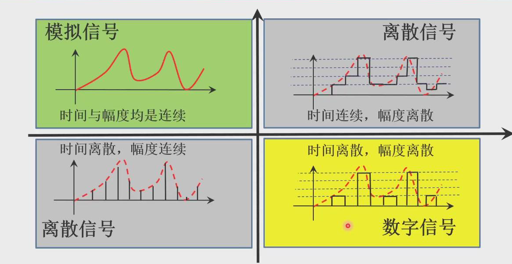
信号的四象限分类：按时间连续/离散（横轴）与幅值连续/离散（纵轴），分为模拟信号、两类离散信号和数字信号（课件
1104）。
信号类别
时间轴
t t
幅值（纵轴）
物理特征与典型实例
模拟信号 （Analog Signal）连续
连续
对任意时刻
t t
离散信号 （时间连续、幅值离散）连续
离散
任意时刻都有定义，但幅值只取有限个离散电平；如比较器输出的二值方波
离散信号 （时间离散、幅值连续）离散
连续
只在离散采样时刻
t = n T s t=nT_s
数字信号 （Digital Signal）离散
离散
时间和幅值上均离散取值，常取两个幅值状态（高电平
1、低电平
0，又称二值信号 或脉冲数字信号）
模拟系统、数字系统与模—数转换（ADC / DAC） ： 1.
电子系统分类 ：按所处理信号 的性质分为 模拟电子系统 （放大、滤波、波形产生 与变换）、数字电子系统 （计数、定时、存储、逻辑 判断與微处理器 运算）和模—数混合型电子系统 （现代实用电子系统 大多属于 此类）。按规模 及是否含微处理器 分为简单电子系统 （纯硬件 ）与智能型电子系统 （以微处理器 为控制中枢 ，软硬件 协同）。
2.
模/数转换（ADC）三步骤 ：把模拟信号 转换为数字信号 需依次经过采样 （以等间隔时间
T s = 1 / f s T_s=1/f_s 采集 模拟值）、量化 （以最小量化 单位
Δ \Delta 尺子 将幅值归入 有限个离散等级）和编码 （用
N N 二进制数 表示
2 N 2^N 量化 等级）。 反之，由数字信号 恢复模拟信号 的器件称为数/模转换器（DAC） 。
3.
采样定理（奈奎斯特—香农采样定理） ：若模拟信号 的最高频率分量 为
f h f_h 频带 受限），则采样 频率
f s f_s 满足
f s ≥ 2 f h , f_s\ge 2f_h,
才能 由离散采样 序列无失真地重建原模拟信号 （例如人耳可闻 音频最高 约
20 kHz 20\ \text{kHz} 音频标准 取
f s = 44.1 kHz > 2 × 20 kHz f_s=44.1\ \text{kHz}>2\times20\ \text{kHz} 同时减小量化 单位
Δ \Delta 编码 位数
N N 量化 失真。
结论 1 ·
非线性电子电路的泰勒展开与“先静态、后动态”小信号分析
半导体二极管 、双极型三极管 （BJT）和场效应管 （MOSFET）等核心有源器件 本质上都是非线性元件 ，其响应
y = f ( x ) y=f(x) 线性叠加定理 ：f ( a x 1 + b x 2 ) ≠ a f ( x 1 ) + b f ( x 2 ) f(ax_1+bx_2)\ne af(x_1)+bf(x_2) 为用04
电子电路·电路原理 的线性电路 工具分析放大 电路，工程上采用围绕静态工作点 （Quiescent
Point，Q Q 泰勒级数展开 ：
f ( x 0 + d x ) = f ( x 0 ) ⏟ 零阶项：静态分析 + f ′ ( x 0 ) d x ⏟ 一阶项：小信号线性模型 + 1 2 ! f ″ ( x 0 ) ( d x ) 2 + 1 3 ! f ‴ ( x 0 ) ( d x ) 3 + ⋯ ⏟ 高阶分量：非线性失真 . f(x_0+dx)=\underbrace{f(x_0)}_{\text{零阶项：静态分析}}+\underbrace{f'(x_0)\,dx}_{\text{一阶项：小信号线性模型}}+\underbrace{\frac1{2!}f''(x_0)(dx)^2+\frac1{3!}f'''(x_0)(dx)^3+\cdots}_{\text{高阶分量：非线性失真}}.
泰勒展开项
数学形式
物理与电路意义
对应的分析手段
零阶常数项 y 0 = f ( x 0 ) y_0=f(x_0) 直流电源单独作用时确立的静态工作点
Q ( x 0 , y 0 ) Q(x_0,y_0)
静态分析（直流分析） ：电容开路、电感短路，用直流负载线或非线性方程求
Q Q
一阶线性项 d y ≈ f ′ ( x 0 ) d x dy\approx f'(x_0)\,dx 在
Q Q k = f ′ ( x 0 ) k=f'(x_0) d y dy d x dx f ′ ( x 0 ) ( a x 1 + b x 2 ) = a f ′ ( x 0 ) x 1 + b f ′ ( x 0 ) x 2 f'(x_0)(ax_1+bx_2)=af'(x_0)x_1+bf'(x_0)x_2
小信号模型（微变等效电路法） ：将晶体管等效为受控源、微变电阻与电容，用
KCL、KVL、相量法与拉普拉斯/傅里叶变换求增益、输入输出阻抗与频率响应
二阶及以上高阶项 1 2 f ″ ( x 0 ) ( d x ) 2 + ⋯ \dfrac12f''(x_0)(dx)^2+\cdots 当输入信号幅度
d x dx
非线性失真分析 ：限制输入信号幅度（小信号条件）或引入负反馈以抑制失真
小信号分析三步法 ： 1.
算静态（直流通路） ：令交流 输入信号 置零，求出器件的直流工作点
Q ( x 0 , y 0 ) Q(x_0,y_0) 器件 工作在正常的线性放大区 ；
2. 求微变参数 ：在工作 点
x 0 x_0 伏安特性 求一阶导数
f ′ ( x 0 ) f'(x_0) 源系数 （如跨导
g m g_m 放大系数
β \beta 微变 电阻；
3.
算动态（交流微变等效通路） ：将直流电压源短路 、直流电流源开路 ，用微变等效模型 替换非线性器件，按线性电路 方法求解小信号增量 响应。
小节练习 · 信号分类、ADC 量化编码与小信号线性化（教材题
1.1.1—1.1.12、课件 1104）
习题 1 ·
光电探测前端的微弱电流—电压转换与系统组成
练习 · 先独立作答
在手机摄像头 像素或光通信 接收前端中，光电 二极管将入射光信号 转换为微弱光电流
i P ( t ) i_P(t) 典型值 在
1 nA ∼ 1 μ A 1\ \text{nA}\sim1\ \mu\text{A} 放大器 转换为电压信号
v o ( t ) = R f i P ( t ) v_o(t)=R_f\,i_P(t) 经低通滤波器 、模/数转换器 （ADC）送入微处理器 进行图像处理 。 (1)
若某像素 光电二极管 在弱光下产生的光电流 为
i P = 10 nA i_P=10\ \text{nA} 要求 跨阻放大器 输出
v o = 10 mV v_o=10\ \text{mV} 电压信号 ，跨阻
R f R_f 应取 多大？若要求 直接输出
1 V 1\ \text{V} 跨阻 需多大？(2) 说明该系统中传感器 、模拟放大 /滤波器、ADC
和微处理器 各自处理 的是模拟信号 还是数字信号 。（课件 1104；教材题
1.1.1—1.1.7）
解析
由跨阻 关系
R f = v o / i P R_f=v_o/i_P 阻值 ；按信号 在链路中的形态区分模拟前端 与数字后端。答案：(1) 输出
10 mV 10\ \text{mV} R f = 1 M Ω R_f=1\ \text{M}\Omega 1 V 1\ \text{V} R f = 100 M Ω R_f=100\ \text{M}\Omega 二极管 、跨阻放大器 与模拟滤波器 处理模拟信号 ，ADC
完成 模拟到数字 转换，微处理器 处理数字信号 。
解答
跨阻计算 ：当
i P = 10 nA = 10 − 8 A i_P=10\ \text{nA}=10^{-8}\ \text{A} v o = 10 mV = 10 − 2 V v_o=10\ \text{mV}=10^{-2}\ \text{V} R f = v o i P = 10 − 2 V 10 − 8 A = 10 6 Ω = 1 M Ω ; R_f=\frac{v_o}{i_P}=\frac{10^{-2}\ \text{V}}{10^{-8}\ \text{A}}=10^6\ \Omega=1\ \text{M}\Omega; 要求 直接得到
v o ′ = 1 V v_o'=1\ \text{V} R f ′ = 1 V 10 − 8 A = 10 8 Ω = 100 M Ω R_f'=\dfrac{1\ \text{V}}{10^{-8}\ \text{A}}=10^8\ \Omega=100\ \text{M}\Omega 先用
1 M Ω 1\ \text{M}\Omega 级联
100 100 放大器 ，以避免 超大电阻 引入热噪声与寄生电容 带宽退化 ）。系统各模块信号属性 ：光电二极管 （传感器 ）把连续变化 的光强非电信号 转换为模拟电信号
i P ( t ) i_P(t) 放大器 与模拟滤波器 对模拟信号 进行放大 与带外噪声 滤除；ADC
将滤波 后的模拟电压采样 、量化、编码为数字信号 ；微处理器对数字信号 进行存储、运算与图像算法 处理。整个装置属于模—数混合型智能电子系统 。
习题 2 ·
数字化语音录放系统的采样周期、采样定理与量化位数
练习 · 先独立作答
在教材 §1.1.2 的数字化语音 录放系统中：(1) 若微处理器 控制 ADC
以采样 频率
f s = 10 kHz f_s=10\ \text{kHz} 语音模拟信号 进行采样 ，相邻两个采样 点之间的时间间隔
T s T_s 严格控制 在多少微秒？ 按采样定理，该采样 频率最多能无失真 地保留最高频率
f h f_h 语音分量 ？(2) 若将
− 4 V ∼ + 4 V -4\ \text{V}\sim+4\ \text{V} 范围 的信号改用
N = 8 N=8 量化 ，最小量化 单位
Δ \Delta 缩小 为多少伏？ （教材 §1.1.1—1.1.2、题 1.1.5—1.1.8）
解析
采样 时间间隔
T s = 1 / f s T_s=1/f_s 采样 定理
f s ≥ 2 f h f_s\ge2f_h 最高 允许信号频率
f h ≤ f s / 2 f_h\le f_s/2 N N 二进制 共有
2 N 2^N 量化 台阶，Δ = V max − V min 2 N \Delta=\dfrac{V_{\max}-V_{\min}}{2^N} T s = 100 μ s T_s=100\ \mu\text{s} f h ≤ 5 kHz f_h\le5\ \text{kHz} Δ = 0.03125 V = 31.25 mV \Delta=0.03125\ \text{V}=31.25\ \text{mV}
解答
采样间隔与最高信号频率 ：
T s = 1 f s = 1 10 × 10 3 Hz = 10 − 4 s = 100 μ s . T_s=\frac{1}{f_s}=\frac{1}{10\times10^3\ \text{Hz}}=10^{-4}\ \text{s}=100\ \mu\text{s}. 奈奎斯特采样定理
f s ≥ 2 f h f_s\ge2f_h 失真 恢复的模拟语音 最高频率分量 为
f h ≤ f s 2 = 10 kHz 2 = 5 kHz . f_h\le\frac{f_s}{2}=\frac{10\ \text{kHz}}{2}=5\ \text{kHz}. 8 位 ADC 的最小量化单位
Δ \Delta 8
位二进制数 共有
2 8 = 256 2^8=256 量化 等级，满量程 跨度为
4 − ( − 4 ) = 8 V 4-(-4)=8\ \text{V} Δ = 8 V 2 8 = 8 256 V = 0.03125 V = 31.25 mV , \Delta=\frac{8\ \text{V}}{2^8}=\frac{8}{256}\ \text{V}=0.03125\ \text{V}=31.25\ \text{mV}, （Δ = 1 V \Delta=1\ \text{V} 的
1 32 \dfrac1{32} 量化 台阶造成 的恢复波形 失真。
习题 3 ·
平方律非线性元件的静态工作点与微变等效参数
练习 · 先独立作答
某场效应管在饱和区 的转移特性 可近似写为 平方律关系
i D = f ( v G S ) = K ( v G S − V T H ) 2 i_D=f(v_{GS})=K(v_{GS}-V_{TH})^2 K = 0.5 mA/V 2 K=0.5\ \text{mA/V}^2 阈值电压
V T H = 1 V V_{TH}=1\ \text{V} 设栅源电压为
v G S ( t ) = V G S Q + Δ v g s ( t ) v_{GS}(t)=V_{GSQ}+\Delta v_{gs}(t) 直流偏置 取
V G S Q = 3 V V_{GSQ}=3\ \text{V} 静态工作点 电流
I D Q I_{DQ} 工作 点处的一阶小 信号跨导
g m = f ′ ( V G S Q ) g_m=f'(V_{GSQ}) i D i_D V G S Q = 3 V V_{GSQ}=3\ \text{V} 泰勒 展开，求当小信号幅度
| Δ v g s | = 0.2 V |\Delta v_{gs}|=0.2\ \text{V} 阶线性电流 增量
Δ i d 1 \Delta i_{d1} 二阶 失真项
Δ i d 2 \Delta i_{d2} 比值 。（课件 1104）
解析
平方律函数 在
V G S Q V_{GSQ} 泰勒 展开只有零阶 、一阶和二阶 三项（三阶 及以上导数恒 为
0）：i D = I D Q + g m Δ v g s + 1 2 f ″ ( V G S Q ) ( Δ v g s ) 2 i_D=I_{DQ}+g_m\Delta v_{gs}+\frac12f''(V_{GSQ})(\Delta v_{gs})^2 I D Q = 2 mA I_{DQ}=2\ \text{mA} g m = 2 mA/V = 2 mS g_m=2\ \text{mA/V}=2\ \text{mS} Δ i d 1 = 0.4 mA \Delta i_{d1}=0.4\ \text{mA} Δ i d 2 = 0.02 mA \Delta i_{d2}=0.02\ \text{mA} Δ i d 2 / Δ i d 1 = 5 % \Delta i_{d2}/\Delta i_{d1}=5\%
解答
静态工作点与小信号跨导 ：在
V G S Q = 3 V V_{GSQ}=3\ \text{V} I D Q = f ( V G S Q ) = 0.5 × ( 3 − 1 ) 2 = 2 mA , I_{DQ}=f(V_{GSQ})=0.5\times(3-1)^2=2\ \text{mA}, g m = f ′ ( V G S Q ) = 2 K ( V G S Q − V T H ) = 2 × 0.5 × ( 3 − 1 ) = 2 mA/V = 2 mS . g_m=f'(V_{GSQ})=2K(V_{GSQ}-V_{TH})=2\times0.5\times(3-1)=2\ \text{mA/V}=2\ \text{mS}. 泰勒展开与二阶非线性失真 ：二阶导数
f ″ ( V G S Q ) = 2 K = 1 mA/V 2 f''(V_{GSQ})=2K=1\ \text{mA/V}^2 故展开式 精确为
i D ( 3 + Δ v g s ) = 2 + 2 Δ v g s + 0.5 ( Δ v g s ) 2 ( 单位：mA ) . i_D(3+\Delta v_{gs})=2+2\,\Delta v_{gs}+0.5\,(\Delta v_{gs})^2\quad(\text{单位：mA}). | Δ v g s | = 0.2 V |\Delta v_{gs}|=0.2\ \text{V} Δ i d 1 = g m | Δ v g s | = 2 × 0.2 = 0.4 mA , Δ i d 2 = 1 2 f ″ ( V G S Q ) | Δ v g s | 2 = 0.5 × 0.2 2 = 0.02 mA , \Delta i_{d1}=g_m|\Delta v_{gs}|=2\times0.2=0.4\ \text{mA},\qquad \Delta i_{d2}=\frac12f''(V_{GSQ})|\Delta v_{gs}|^2=0.5\times0.2^2=0.02\ \text{mA}, 二阶 失真项与一阶线性项 之比为
Δ i d 2 Δ i d 1 = 0.02 0.4 = 5 % \dfrac{\Delta i_{d2}}{\Delta i_{d1}}=\dfrac{0.02}{0.4}=5\% 公式 为
| Δ v g s | 2 ( V G S Q − V T H ) \dfrac{|\Delta v_{gs}|}{2(V_{GSQ}-V_{TH})}
更多课本习题 · 第一篇第 1 章（初识电子系统，题 1.1.1—1.1.12）
教材 第一篇第 1 章课后题均为概念论述题 ，核心要点汇总 如下：
题 1.1.1 （结合教材图 1.1.5
的智能电子系统 框图举例说明 应用场合 ）：输入侧由传感器 →模拟放大 /滤波→ADC
进入微处理器 ，输出侧由微处理器 →DAC→模拟滤波 /功率驱动→执行机构 ；典型 应用如智能手机 拍照与音频系统 、数字恒温 控制器、汽车防抱死 制动（ABS）及医疗心电监护 仪。题
1.1.2 （什么叫模拟电子系统 ？举例）：专门 处理时间与幅值 均连续的模拟信号 的电子系统（完成放大 、滤波、波形 变换等）；如传统调幅 收音机、纯模拟扩音器 、光电二极管 跨阻放大 前端。题
1.1.3 （什么叫数字电子系统 ？举例）：专门 处理时间与幅值 均离散的数字信号 的电子系统（完成计数 、定时、逻辑 判断、数字 存储等）；如数字电子表 、数字频率计 、纯数字逻辑 密码锁。题
1.1.4 （什么叫智能型电子系统 ？举例）：内部包含微处理器 （MCU/CPU/DSP）并以其为控制 、运算 和管理中枢的复杂电子系统 ，需软硬件协同工作 ；如智能手机 、无人机飞控系统 、数码录音笔 。题
1.1.5 （为什么需要模/数转换 ？对模拟信号 怎么处理 最方便？）：自然界物理量 经传感器得到的大多是模拟信号 ，而计算机和微处理器 只能存储 、运算数字信号 ，故必须通过
ADC
完成 模/数转换；先在模拟前端 做必要的低噪声放大 与抗混叠滤波，再转为数字信号 由微处理器用软件算法 处理、存储 与传输最为灵活可靠 。题
1.1.6 （微处理器 怎么处理和保存模拟信号 ？）：微处理器 不能直接接收模拟信号 ，必须先启动
ADC 按采样 周期
T s T_s f s ≥ 2 f h f_s\ge2f_h 模拟信号 采样、量化 和二进制编码，再将转换 完毕的二进制数据 读入并顺序 写入存储器 保存。 题
1.1.7 （模拟放大器 、滤波器 起什么作用？各有哪些性能指标 ？）：模拟放大器 将微弱电信号 不失真地放大 到后续电路 （如
ADC
或扬声器 ）所需 的幅度或功率，主要指标有增益（放大倍数） 、输入电阻
R i R_i 输出电阻
R o R_o 通频带
B W BW 最大不失真输出幅度
V o m V_{om}
等（见 1.2 节定义
2）；滤波器 用于选出有用频段信号 、抑制 带外干扰和噪声 ，主要指标有通带范围 （截止频率 ）、通带增益 与阻带衰减斜率 。题
1.1.8 （简述数字化语音 录放系统 的构成原理 ）：录制 时，麦克风 将声音转为微弱模拟电压 →前置放大器放大 →带通滤波器 滤除带外杂波→ADC
在微处理器 控制下采样 量化编码 →存入外部存储器 ；回放 时，微处理器 按同速率从存储器 取出数字信号 送
DAC
恢复成模拟阶梯 波→带通/低通滤波器 平滑滤除高频毛刺→功率放大器 驱动扬声器 发声。题
1.1.9—1.1.12 （开放式学习体会题 ：从爱迪生 留声机、磁带录音机 到数字语音录放系统 的演进看模拟与数字电路 的结合）：模拟前端 决定信号 采集的信噪比 上限，数字 处理赋予系统 存储、快慢速回放 、变音 与语音识别等强大扩展能力 ，两者相辅相成 。
1.2 运算放大器的理想模型与电压传输特性
例 3 ·
放大电路的电压增益、源电压增益与输入电阻分压
某电压放大 电路的输入电阻
R i = 8 k Ω R_i=8\ \text{k}\Omega 电压放大倍数 （电压增益 ）A v = v o v i = 50 A_v=\dfrac{v_o}{v_i}=50 输出电阻
R o = 0 R_o=0 现将一个开路电压
v s = 10 mV v_s=10\ \text{mV} R s = 2 k Ω R_s=2\ \text{k}\Omega 信号源 接到该放大器 的输入端（课件 1104；教材 第一篇
§1.3.2）。求：(1) 放大器 输入端实际 得到的电压
v i v_i 电压
v o v_o 信号源 而言的源电压增益
A v s = v o v s A_{vs}=\dfrac{v_o}{v_s} 分贝值 （dB）。
解。 按下面定义 2，信号源内阻
R s R_s 输入电阻
R i R_i 串联 分压：
输入端实际电压
v i v_i v o v_o
v i = R i R s + R i v s = 8 k Ω 2 k Ω + 8 k Ω × 10 mV = 0.8 × 10 mV = 8 mV , v_i=\frac{R_i}{R_s+R_i}v_s=\frac{8\ \text{k}\Omega}{2\ \text{k}\Omega+8\ \text{k}\Omega}\times10\ \text{mV}=0.8\times10\ \text{mV}=8\ \text{mV}, v o = A v v i = 50 × 8 mV = 400 mV = 0.4 V . v_o=A_v\,v_i=50\times8\ \text{mV}=400\ \text{mV}=0.4\ \text{V}. 源电压增益
A v s A_{vs} ：
A v s = v o v s = R i R s + R i A v = 0.8 × 50 = 40 , A_{vs}=\frac{v_o}{v_s}=\frac{R_i}{R_s+R_i}A_v=0.8\times50=40, 分贝 （dB）：
A v ( dB ) = 20 lg | A v | = 20 lg 50 ≈ 33.98 dB , A v s ( dB ) = 20 lg | A v s | = 20 lg 40 ≈ 32.04 dB . A_v(\text{dB})=20\lg|A_v|=20\lg50\approx33.98\ \text{dB},\qquad A_{vs}(\text{dB})=20\lg|A_{vs}|=20\lg40\approx32.04\ \text{dB}. 可见 若放大器输入电阻
R i R_i 不够 大，信号源电压 在进入放大器 之前就会在源内阻
R s R_s 损失 一部分（本题损失
20 % 20\% v i → v s v_i\to v_s A v s → A v A_{vs}\to A_v 电压 放大器的输入电阻
R i R_i 越大越好 （理想 情况
R i → ∞ R_i\to\infty
例 4 · 运算放大器的线性区宽度与开环饱和削波失真
某集成运算放大器 采用正负 对称直流电源
± V C C = ± 10 V \pm V_{CC}=\pm10\ \text{V} 最大 输出饱和 电压为
V o m = ± 10 V V_{om}=\pm10\ \text{V} 电压放大倍数 为
A = 10 5 A=10^5 100 dB 100\ \text{dB} (1)
求该 运放工作在线性放大区 所允许的最大差模输入电压 范围
| v P − v N | max |v_P-v_N|_{\max} 反相 端接地（v N = 0 v_N=0 在同相 端分别输入正弦信号
v P 1 ( t ) = 0.05 sin ω t ( mV ) v_{P1}(t)=0.05\sin\omega t\ (\text{mV}) v P 2 ( t ) = 1.0 sin ω t ( mV ) v_{P2}(t)=1.0\sin\omega t\ (\text{mV}) 电压
v o ( t ) v_o(t) 波形 是否失真 。（课件 1104；教材 第二篇 §2.1.6、§2.3.1）
解。 按下面结论 2：
线性区最大差模输入电压 ：要使输出 不触及电源轨限幅
| v o | ≤ V o m = 10 V |v_o|\le V_{om}=10\ \text{V} 差模输入电压
v i d = v P − v N v_{id}=v_P-v_N 满足
| v i d | ≤ V i m = V o m A = 10 V 10 5 = 10 − 4 V = 0.1 mV = 100 μ V . |v_{id}|\le V_{im}=\frac{V_{om}}{A}=\frac{10\ \text{V}}{10^5}=10^{-4}\ \text{V}=0.1\ \text{mV}=100\ \mu\text{V}. 线性 工作区的输入电压宽度 只有
− 0.1 mV ∼ + 0.1 mV -0.1\ \text{mV}\sim+0.1\ \text{mV} 两种输入幅度下的输出波形 ：
当输入
v P 1 ( t ) = 0.05 sin ω t ( mV ) v_{P1}(t)=0.05\sin\omega t\ (\text{mV}) 0.05 mV < 0.1 mV 0.05\ \text{mV}<0.1\ \text{mV} 全程 处在线性区内，输出 为不失真的正弦波 ：
v o 1 ( t ) = A v P 1 ( t ) = 10 5 × 0.05 × 10 − 3 sin ω t = 5 sin ω t ( V ) ; v_{o1}(t)=A\,v_{P1}(t)=10^5\times0.05\times10^{-3}\sin\omega t=5\sin\omega t\ (\text{V});
当输入
v P 2 ( t ) = 1.0 sin ω t ( mV ) v_{P2}(t)=1.0\sin\omega t\ (\text{mV}) 线性公式 算峰值将达
10 5 × 1 mV = 100 V 10^5\times1\ \text{mV}=100\ \text{V} 直流电源电压
± 10 V \pm10\ \text{V} | v P 2 ( t ) | > 0.1 mV |v_{P2}(t)|>0.1\ \text{mV} sin ω t > 0.1 \sin\omega t>0.1 ω t > 5.74 ∘ \omega t>5.74^\circ 运放 立即进入正饱和区 （v o = + 10 V v_o=+10\ \text{V} 或负饱和区 （v o = − 10 V v_o=-10\ \text{V} 输出波形 顶部和底部被平顶 削波，变成近似幅值
± 10 V \pm10\ \text{V} 方波 ，产生严重的饱和失真 。
定义 2 · 放大电路的增益、输入电阻与输出电阻
放大 电路对小信号的放大 能力与端口阻抗匹配 特性，由以下基本性能指标 定量描述（教材 第一篇
§1.3.2、课件 1104）：
性能指标
符号与定义式
分贝（dB）换算与单位
物理意义与工程要求
电压增益 （电压放大倍数）A ̇ v = V ̇ o V ̇ i = A ̇ v o R L R o + R L \dot A_v=\dfrac{\dot V_o}{\dot V_i}=\dfrac{\dot A_{vo}\,R_L}{R_o+R_L} R L = ∞ R_L=\infty 开路电压增益
A ̇ v o = V ̇ o o V ̇ i \dot A_{vo}=\dfrac{\dot V_{oo}}{\dot V_i} 无量纲（V/V）；A v ( dB ) = 20 lg | A ̇ v | A_v(\text{dB})=20\lg|\dot A_v|
输出信号电压与放大器输入端电压之比；| A v | = 1 , 10 , 100 , 10 5 |A_v|=1,10,100,10^5 0 , 20 , 40 , 100 dB 0,20,40,100\ \text{dB}
源电压增益 A ̇ v s = V ̇ o V ̇ s = R i R s + R i A ̇ v \dot A_{vs}=\dfrac{\dot V_o}{\dot V_s}=\dfrac{R_i}{R_s+R_i}\dot A_v 无量纲（V/V）；A v s ( dB ) = 20 lg | A ̇ v s | A_{vs}(\text{dB})=20\lg|\dot A_{vs}|
计入信号源内阻
R s R_s R i ≫ R s R_i\gg R_s A ̇ v s ≈ A ̇ v \dot A_{vs}\approx\dot A_v
电流增益 与功率增益 A ̇ i = I ̇ o I ̇ i \dot A_i=\dfrac{\dot I_o}{\dot I_i} A p = P o P i = | A ̇ v | ⋅ | A ̇ i | A_p=\dfrac{P_o}{P_i}=|\dot A_v|\cdot|\dot A_i| A i ( dB ) = 20 lg | A ̇ i | A_i(\text{dB})=20\lg|\dot A_i| A p ( dB ) = 10 lg A p A_p(\text{dB})=10\lg A_p 输出电流/功率与输入电流/功率之比（注意功率分贝系数为
10 10 20 20
输入电阻 R i = V ̇ i I ̇ i R_i=\dfrac{\dot V_i}{\dot I_i} Ω \Omega k Ω , M Ω \text{k}\Omega,\text{M}\Omega 从放大器输入端看进去的等效内阻；电压放大器要求
R i R_i 越大越好 ，以减小从信号源汲取的电流
I ̇ i \dot I_i
输出电阻 R o = V ̇ o ′ I ̇ o ′ | V ̇ s = 0 , R L = ∞ = ( V o o V o − 1 ) R L R_o=\left.\dfrac{\dot V_o'}{\dot I_o'}\right|_{\dot V_s=0,R_L=\infty}=\left(\dfrac{V_{oo}}{V_o}-1\right)R_L Ω \Omega 信号源置零、负载开路时从输出端看进去的戴维宁等效内阻；电压放大器要求
R o R_o 越小越好 ，使带负载后输出电压不跌落（接近恒压源）
定义 3 ·
集成运算放大器的端口、等效模型与理想运放参数
集成运算放大器 （Operational
Amplifier，简称集成运放 或运放 ）是在同一块硅芯片上将 高增益、直接耦合 的多级放大电路（差分输入级
+ 高增益 中间放大 级 + 互补 对称低阻输出级 +
电流源偏置 电路）集成制成的核心 模拟组件 。
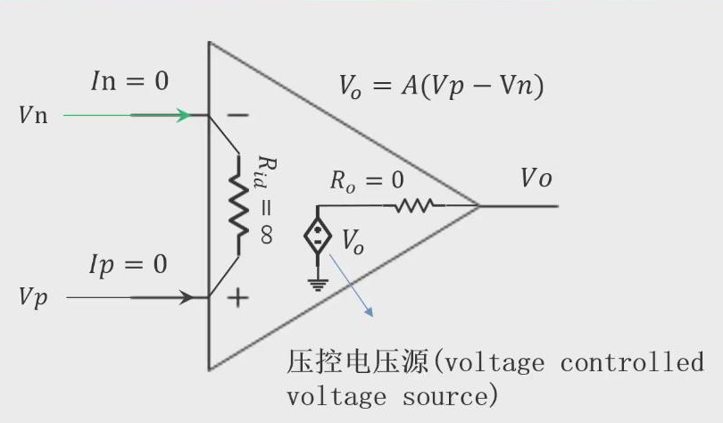
理想电压型运算放大器的电路模型：左端为反相输入端
v N v_N − - v P v_P + + R i d = ∞ R_{id}=\infty i N = i P = 0 i_N=i_P=0 v o = A ( v P − v N ) v_o=A(v_P-v_N) R o = 0 R_o=0
端钮与极性 ：
同相输入端 P（标
+ + ：该端输入信号电压
v P v_P 电压
v o v_o 相同 （0 ∘ 0^\circ
相移）；反相输入端 N（标
− - ：该端输入信号电压
v N v_N 电压
v o v_o 相反 （180 ∘ 180^\circ
反相）；差模输入电压 ：定义 为两输入端电位 之差
v i d = v P − v N v_{id}=v_P-v_N 线性 区内输出为受控电压源 （VCVS）v o = A v i d = A ( v P − v N ) v_o=A\,v_{id}=A(v_P-v_N) 正、负直流电源端
+ V C C +V_{CC} − V E E -V_{EE} ± V C C \pm V_{CC} ：为运放 内部晶体管 提供静态偏置 与输出能量，电路原理图中常省略不画，但实际工作时必不可少 ，且公共接地 端是所有输入 、输出电压 的参考零电位 。 实际运放与理想运放（电压型）的四项核心指标对照 ：
参数名称
符号与定义
通用型实际运放典型值
理想运放模型取值 理想化后的直接推论
开环差模电压增益 A = Δ v o Δ ( v P − v N ) A=\dfrac{\Delta v_o}{\Delta(v_P-v_N)} A v d A_{vd} 10 4 ∼ 10 6 10^4\sim10^6 80 ∼ 120 dB 80\sim120\ \text{dB} 10 ∼ 1000 V/mV 10\sim1000\ \text{V/mV} A → ∞ A\to\infty 只要输出
v o v_o v P − v N = v o A → 0 v_P-v_N=\dfrac{v_o}{A}\to0 虚短 ）
差模输入电阻 R i d = Δ ( v P − v N ) Δ i i d R_{id}=\dfrac{\Delta(v_P-v_N)}{\Delta i_{id}} 1 M Ω ∼ 10 4 M Ω 1\ \text{M}\Omega\sim10^4\ \text{M}\Omega R i d → ∞ R_{id}\to\infty 两输入端之间等效开路，不从前级信号源汲取电流
输入偏置电流 i P , i N i_P,\,i_N 纳安（nA）至皮安（pA）级
i P = i N = 0 i_P=i_N=0 流入同相端与反相端的电流恒为零（虚断 ）
开环输出电阻 R o R_o 几十欧至几百欧（10 ∼ 100 Ω 10\sim100\ \Omega
R o = 0 R_o=0 输出端等效为理想受控电压源，输出电压不受负载电流影响
结论 2 ·
运算放大器的电压传输特性（VTC）与闭环负反馈思想
由于运放 由直流电源
± V C C \pm V_{CC} 电压
v o v_o 绝对值 不可能超过电源轨 （记最大不失真 输出饱和 幅值为
± V o m \pm V_{om} 理想轨 到轨情形下
V o m = V C C V_{om}=V_{CC} 因此运放 的输入—输出 关系
v o = f ( v P − v N ) v_o=f(v_P-v_N) 分段折线 ，称为电压传输特性曲线（VTC） ：
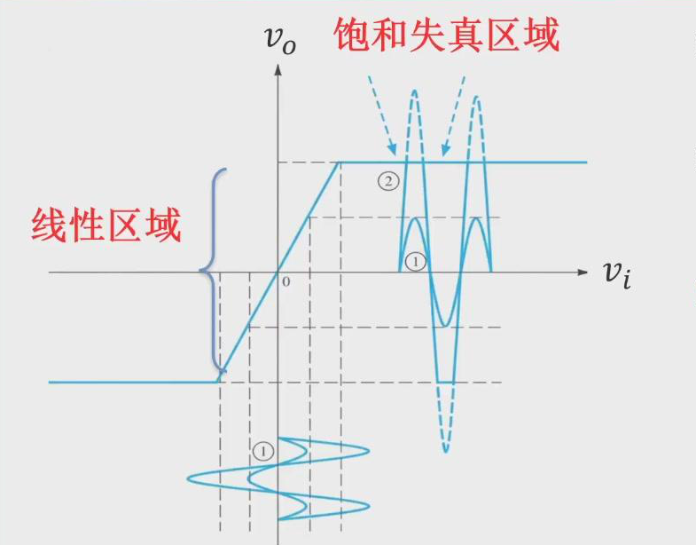
运算放大器的电压传输特性曲线（VTC）：仅在极窄的差模输入区间
| v P − v N | ≤ V o m / A |v_P-v_N|\le V_{om}/A v o = A ( v P − v N ) v_o=A(v_P-v_N) v o = ± V o m v_o=\pm V_{om}
v o = { + V o m ( 约 + V C C ) , v P − v N > V o m A ( 正饱和区 ) , A ( v P − v N ) , | v P − v N | ≤ V o m A ( 线性放大区 ) , − V o m ( 约 − V C C ) , v P − v N < − V o m A ( 负饱和区 ) . v_o=\begin{cases}
+V_{om}\ (\text{约 }+V_{CC}), & v_P-v_N>\dfrac{V_{om}}{A}\quad(\text{正饱和区}),\\[6pt]
A(v_P-v_N), & |v_P-v_N|\le\dfrac{V_{om}}{A}\quad(\text{线性放大区}),\\[6pt]
-V_{om}\ (\text{约 }-V_{CC}), & v_P-v_N<-\dfrac{V_{om}}{A}\quad(\text{负饱和区}).
\end{cases}
为什么开环运放无法直接用作线性放大器？ 因开环增益
A A （10 5 ∼ 10 6 10^5\sim10^6 线性区允许的差模输入电压 宽度
2 V o m / A 2V_{om}/A 微伏 （μ V \mu\text{V} 任何微小的环境电磁噪声或运放 自身的输入失调电压 （毫伏级），都会使开环运放 立即冲入正饱和 （+ V o m +V_{om} 或负饱和 （− V o m -V_{om} （开环 或正反馈下运放 专门用作电压比较器 ，工作 在非线性饱和区 。） 引入深度负反馈构建闭环线性放大 ： 把输出量
X ̇ o \dot X_o 线性网络 （反馈网络 ，反馈系数
F ̇ = X ̇ f / X ̇ o \dot F=\dot X_f/\dot X_o 反相输入端 （− - 与输入信号 相减得到净输入
X ̇ i d = X ̇ i − X ̇ f \dot X_{id}=\dot X_i-\dot X_f 由
X ̇ o = A ̇ X ̇ i d = A ̇ ( X ̇ i − F ̇ X ̇ o ) \dot X_o=\dot A\dot X_{id}=\dot A(\dot X_i-\dot F\dot X_o) 闭环增益基本公式 ：
A ̇ f = X ̇ o X ̇ i = A ̇ 1 + A ̇ F ̇ → | A ̇ F ̇ | ≫ 1 1 F ̇ . \dot A_f=\frac{\dot X_o}{\dot X_i}=\frac{\dot A}{1+\dot A\dot F}\xrightarrow{|\dot A\dot F|\gg1}\frac{1}{\dot F}.
在深度负反馈 （环路增益
| A ̇ F ̇ | ≫ 1 |\dot A\dot F|\gg1 闭环放大倍数
A ̇ f ≈ 1 / F ̇ \dot A_f\approx1/\dot F 仅取决于外部高精度无源电阻网络的比值，而与运放内部不稳定、非线性的开环增益
A ̇ \dot A ，同时将线性 工作区的允许 输入信号范围 扩大了
( 1 + A ̇ F ̇ ) (1+\dot A\dot F)
易错 ·
运放电路图常省略直流电源引脚，但输出幅值受电源轨严格限制
教材 和考卷中的运放 电路图通常只画出同相 端（+ + 反相 端（− - 和输出 端三个引脚，省略 了
+ V C C +V_{CC} − V E E -V_{EE} 电源 端。做题 和设计时必须记住 两点：第一，运放是有源器件 ，输出的信号功率 来自直流电源 ；第二，用线性公式
v o = A v f v i v_o=A_{vf}v_i 电压 后，若题干 给出了电源电压
± V C C \pm V_{CC} 饱和 电压
± V o m \pm V_{om} 检验
| v o | ≤ V o m |v_o|\le V_{om} 成立 ——一旦算出 的
| v o | > V o m |v_o|>V_{om} 实际 输出将被限幅 在
± V o m \pm V_{om} 退出线性区 ！
小节练习 · 放大器性能指标与运放线性/饱和区判别（教材
§1.3.2、§2.1.6、§2.3.1）
习题 4 ·
由空载与带载测试数据求放大电路的输入电阻、输出电阻与源电压增益
练习 · 先独立作答
某放大 电路由开路电压 有效值
V s = 20 mV V_s=20\ \text{mV} R s = 1 k Ω R_s=1\ \text{k}\Omega 正弦信号源 激励。 实验 测得放大器 输入端电压 有效值为
V i = 15 mV V_i=15\ \text{mV} 开路 （R L = ∞ R_L=\infty 时，测得空载 输出电压有效值
V o o = 1.5 V V_{oo}=1.5\ \text{V} 输出 端接上负载电阻
R L = 2 k Ω R_L=2\ \text{k}\Omega 输出 电压有效值 降至
V o = 1.2 V V_o=1.2\ \text{V} 放大 电路的：(1)
输入电阻
R i R_i 输出电阻
R o R_o 电压增益
A v A_v 开路电压增益
A v o A_{vo} 源电压增益
A v s A_{vs} 教材 第一篇
§1.3.2 式 (1.3.16)—(1.3.24)）
解析
输入 回路由
R s R_s R i R_i V i = R i R s + R i V s V_i=\dfrac{R_i}{R_s+R_i}V_s R i R_i 输出 回路等效为受控电压源
V o o V_{oo} 输出电阻
R o R_o 教材 式
(1.3.24)
R o = ( V o o V o − 1 ) R L R_o=\Big(\dfrac{V_{oo}}{V_o}-1\Big)R_L R o R_o 定义 求三个增益 。答案：(1)
R i = 3 k Ω R_i=3\ \text{k}\Omega R o = 500 Ω = 0.5 k Ω R_o=500\ \Omega=0.5\ \text{k}\Omega A v = 80 A_v=80 A v o = 100 A_{vo}=100 A v s = 60 A_{vs}=60
解答
求输入电阻
R i R_i 由输入端分压关系
V i = R i R s + R i V s V_i=\dfrac{R_i}{R_s+R_i}V_s 15 = R i 1 + R i × 20 ⟹ R i = 3 R s = 3 k Ω . 15=\frac{R_i}{1+R_i}\times20\implies R_i=3\ R_s=3\ \text{k}\Omega. 求输出电阻
R o R_o 带负载
R L = 2 k Ω R_L=2\ \text{k}\Omega 输出 端分压
V o = R L R o + R L V o o V_o=\dfrac{R_L}{R_o+R_L}V_{oo} R o = ( V o o V o − 1 ) R L = ( 1.5 1.2 − 1 ) × 2 k Ω = 0.25 × 2 k Ω = 0.5 k Ω = 500 Ω . R_o=\Big(\frac{V_{oo}}{V_o}-1\Big)R_L=\Big(\frac{1.5}{1.2}-1\Big)\times2\ \text{k}\Omega=0.25\times2\ \text{k}\Omega=0.5\ \text{k}\Omega=500\ \Omega. 求三种电压增益 ：
A v o = V o o V i = 1500 mV 15 mV = 100 , A v = V o V i = 1200 mV 15 mV = 80 , A v s = V o V s = 1200 mV 20 mV = 60 . A_{vo}=\frac{V_{oo}}{V_i}=\frac{1500\ \text{mV}}{15\ \text{mV}}=100,\qquad A_v=\frac{V_o}{V_i}=\frac{1200\ \text{mV}}{15\ \text{mV}}=80,\qquad A_{vs}=\frac{V_o}{V_s}=\frac{1200\ \text{mV}}{20\ \text{mV}}=60. A v = A v o R L R o + R L = 100 × 2 0.5 + 2 = 80 A_v=A_{vo}\dfrac{R_L}{R_o+R_L}=100\times\dfrac{2}{0.5+2}=80 A v s = A v R i R s + R i = 80 × 3 1 + 3 = 60 A_{vs}=A_v\dfrac{R_i}{R_s+R_i}=80\times\dfrac{3}{1+3}=60 自洽 。
习题 5 ·
运放开环差模增益的单位换算与输入失调引起的开环饱和
练习 · 先独立作答
(1) 某集成运放 手册标明其开环差模电压增益 为
A v d = 100 V/mV A_{vd}=100\ \text{V/mV} 无量纲倍数 和分贝（dB）数； (2)
教材 第二篇 §2.1.6 指出，实际运放 存在毫伏级的输入失调电压
V I O V_{IO} 相当于 在输入端串联 了一个微小的直流误差电压 源）。若某运放 开环增益
A v d = 10 4 A_{vd}=10^4 80 dB 80\ \text{dB} 失调电压
V I O = 1.5 mV V_{IO}=1.5\ \text{mV} 失真 输出饱和 电压为
V o m = ± 12 V V_{om}=\pm12\ \text{V} 运放 两输入端直接对地 短接（v P = v N = 0 v_P=v_N=0 时，开环 输出端直流电 压
V O V_O 教材 第二篇 §2.1.6 页 191—194）
解析
1 V/mV = 10 3 1\ \text{V/mV}=10^3 输入 端接地时，输入失调电压
V I O = 1.5 mV V_{IO}=1.5\ \text{mV} 经开环增益
A v d = 10 4 A_{vd}=10^4 放大 后理论输出达
15 V 15\ \text{V} 电源限幅
V o m = 12 V V_{om}=12\ \text{V} 运放 直接进入饱和状态 。答案：(1)
A v d = 10 5 = 100 dB A_{vd}=10^5=100\ \text{dB} 饱和区 ，实际 输出
| V O | = V o m = 12 V |V_O|=V_{om}=12\ \text{V} 15 V 15\ \text{V}
解答
增益换算 ：
A v d = 100 V/mV = 100 V 10 − 3 V = 10 5 , A v d ( dB ) = 20 lg 10 5 = 100 dB . A_{vd}=100\ \text{V/mV}=\frac{100\ \text{V}}{10^{-3}\ \text{V}}=10^5,\qquad A_{vd}(\text{dB})=20\lg10^5=100\ \text{dB}. 输入失调引起的开环饱和判别 ：若按线性公式 计算，输入失调电压
V I O = 1.5 mV V_{IO}=1.5\ \text{mV} 产生 的输出失调电压 为
| V O O | 线性 = A v d V I O = 10 4 × 1.5 mV = 15 V . |V_{OO}|_{\text{线性}}=A_{vd}\,V_{IO}=10^4\times1.5\ \text{mV}=15\ \text{V}. 15 V > V o m = 12 V 15\ \text{V}>V_{om}=12\ \text{V} 运放 的最大输出电压范围 ，故即使两输入端对地 短接，开环运放 也因自身毫伏级的失调电压 而直接处于 饱和状态 ，实际 输出被限幅在
| V O | = 12 V |V_O|=12\ \text{V} 器件参数角度 再次证明 ：运放 用作线性放大器 时，必须引入负反馈 工作在闭环 状态。
习题 6 ·
开环与闭环状态下运放线性输入电压范围的对比
练习 · 先独立作答
某运放 供电电源为
± V C C = ± 15 V \pm V_{CC}=\pm15\ \text{V} 饱和 输出幅值
V o m = ± 15 V V_{om}=\pm15\ \text{V} 开环差模增益
A = 1.5 × 10 5 A=1.5\times10^5 (1)
开环 工作时，线性区 允许的差模输入电压 峰值
| v i d | max |v_{id}|_{\max} 负反馈 构成闭环 增益
A v f = − 10 A_{vf}=-10 反相比例放大器 后，在不发生输出饱和 削波的前提 下，允许 输入的信号电压峰值
| v I | max |v_I|_{\max} 扩大 到了多少伏？是开环时 的多少倍？（课件 1104；教材 §2.3.1）
解析
线性区不饱和 的判据始终是输出 不超过电源轨
| v o | ≤ V o m = 15 V |v_o|\le V_{om}=15\ \text{V} 开环时
| v i d | max = V o m / A |v_{id}|_{\max}=V_{om}/A 闭环 时
| v I | max = V o m / | A v f | |v_I|_{\max}=V_{om}/|A_{vf}| | v i d | max = 0.1 mV = 100 μ V |v_{id}|_{\max}=0.1\ \text{mV}=100\ \mu\text{V} | v I | max = 1.5 V |v_I|_{\max}=1.5\ \text{V} 扩大 了
1.5 × 10 4 1.5\times10^4
解答
开环线性输入范围 ：
| v i d | max = V o m A = 15 V 1.5 × 10 5 = 10 − 4 V = 0.1 mV = 100 μ V . |v_{id}|_{\max}=\frac{V_{om}}{A}=\frac{15\ \text{V}}{1.5\times10^5}=10^{-4}\ \text{V}=0.1\ \text{mV}=100\ \mu\text{V}. 闭环线性输入范围 ：闭环 增益
| A v f | = 10 |A_{vf}|=10 | v o | = | A v f | ⋅ | v I | ≤ V o m = 15 V |v_o|=|A_{vf}|\cdot|v_I|\le V_{om}=15\ \text{V} | v I | max = V o m | A v f | = 15 V 10 = 1.5 V . |v_I|_{\max}=\frac{V_{om}}{|A_{vf}|}=\frac{15\ \text{V}}{10}=1.5\ \text{V}. 闭环 最大允许 输入幅度 与开环之比为
1.5 V 10 − 4 V = 1.5 × 10 4 \dfrac{1.5\ \text{V}}{10^{-4}\ \text{V}}=1.5\times10^4
1.3
虚短与虚断：反相、同相比例放大与电压跟随器
例 5 ·
【真题】反相比例放大器的闭环电压增益、输入电阻与反馈系数
2025—2026 秋冬期末回忆 卷 · 第五题之 (1) · 建议 用时 5
分钟
如图（反相 比例放大电路）所示，集成运放反相输入端 经电阻
R 1 = 1 k Ω R_1=1\ \text{k}\Omega 电压
v I v_I 电阻
R 2 = R f = 10 k Ω R_2=R_f=10\ \text{k}\Omega 反相输入端 ，同相 输入端直接接地 。设运放 为理想运放，求：(1)
理想 闭环电压放大倍数
A v f = v o v I A_{vf}=\dfrac{v_o}{v_I} 信号源
v I v_I 看入 的闭环输入电阻
R i f R_{if} 运放 开环差模增益
A A 有限 值（仍设
R i d = ∞ , R o = 0 R_{id}=\infty,R_o=0 反相 端电位
v N v_N v I v_I v o v_o 表达式 ，推导精确闭环 增益
A v f ( A ) A_{vf}(A) 反馈系数
F F 真题 f2526 一(11)；课件 1104；教材 第二篇 §2.3.2）
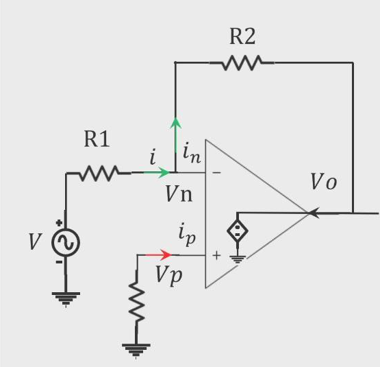
反相比例放大电路：同相端接地（v P = 0 v_P=0 输入电压
V V R 1 R_1 V n V_n V o V_o R 2 R_2
解。 (1)
理想运放下的“虚断”与“虚短”分析 ： 输出端经电阻
R 2 R_2 反相输入端 （− - 电路 引入了深度电压并联负反馈 ，工作在线性区 。应用下面定理
1： -
由虚断 （i P = 0 , i N = 0 i_P=0,i_N=0 同相 端直接接地，v P = 0 v_P=0 虚短 （v N = v P v_N=v_P 反相 端电位等于同相 端电位，即
v N = v P = 0 ( 反相端 N 为“虚地”点 ) . v_N=v_P=0\quad(\text{反相端 N 为“虚地”点}). 输入电阻
R 1 R_1 电流 为
i = v I − v N R 1 = v I R 1 i=\dfrac{v_I-v_N}{R_1}=\dfrac{v_I}{R_1} 反相 节点
N
用虚断 （i N = 0 i_N=0 流过
R 1 R_1 电流
i i 电阻
R 2 R_2
v o = v N − i R 2 = 0 − v I R 1 R 2 = − R 2 R 1 v I ⟹ A v f = v o v I = − R 2 R 1 = − 10 k Ω 1 k Ω = − 10 . v_o=v_N-i\,R_2=0-\frac{v_I}{R_1}R_2=-\frac{R_2}{R_1}v_I\implies A_{vf}=\frac{v_o}{v_I}=-\frac{R_2}{R_1}=-\frac{10\ \text{k}\Omega}{1\ \text{k}\Omega}=-10. 从输入电压源
v I v_I 看入 的闭环输入电阻 为（因 N 端虚地
v N = 0 v_N=0
R i f = v I i = R 1 = 1 k Ω . R_{if}=\frac{v_I}{i}=R_1=1\ \text{k}\Omega. (2) 有限开环增益
A A F F （课件
1104 第 18 页）： 仅用虚断
i N = 0 i_N=0 反相 节点
N 由
v I v_I R 1 R_1 v o v_o R 2 R_2 驱动 ，按叠加定理 （或节点电压方程
v N − v I R 1 + v N − v o R 2 = 0 \dfrac{v_N-v_I}{R_1}+\dfrac{v_N-v_o}{R_2}=0
v N = R 2 R 1 + R 2 v I + R 1 R 1 + R 2 v o . v_N=\frac{R_2}{R_1+R_2}v_I+\frac{R_1}{R_1+R_2}v_o. 式中
v o v_o 反相 端
v N v_N 分压 比例即为电阻反馈网络 的反馈系数 ：
F = R 1 R 1 + R 2 = 1 1 + 10 = 1 11 ≈ 0.0909 . F=\frac{R_1}{R_1+R_2}=\frac{1}{1+10}=\frac{1}{11}\approx0.0909. 将运放 输出关系
v o = A ( v P − v N ) = − A v N v_o=A(v_P-v_N)=-Av_N v N = − v o / A v_N=-v_o/A 代入 上式：
− v o A = R 2 R 1 + R 2 v I + R 1 R 1 + R 2 v o ⟹ A v f ( A ) = v o v I = − R 2 R 1 ⋅ A A + 1 + R 2 R 1 = − R 2 R 1 ⋅ 1 1 + 1 A F . -\frac{v_o}{A}=\frac{R_2}{R_1+R_2}v_I+\frac{R_1}{R_1+R_2}v_o\implies A_{vf}(A)=\frac{v_o}{v_I}=-\frac{R_2}{R_1}\cdot\frac{A}{A+1+\dfrac{R_2}{R_1}}=-\frac{R_2}{R_1}\cdot\frac{1}{1+\dfrac{1}{AF}}. 当
A → ∞ A\to\infty 环路增益
A F ≫ 1 AF\gg1 A v f ( A ) → − R 2 R 1 = − 10 A_{vf}(A)\to-\dfrac{R_2}{R_1}=-10 算出 的结果完全一致 ！
得分步骤 ：写出虚断
i N = 0 i_N=0 虚短 （虚地）v N = v P = 0 v_N=v_P=0 v I / R 1 = − v o / R 2 v_I/R_1=-v_o/R_2 A v f = − R 2 / R 1 = − 10 A_{vf}=-R_2/R_1=-10 系数
F = R 1 / ( R 1 + R 2 ) = 1 / 11 F=R_1/(R_1+R_2)=1/11
例 6 ·
同相比例放大器、电压跟随器的阻抗变换与闭环增益稳定度
(1) 某高内阻 微弱传感器 可等效为开路电压
v S = 100 mV v_S=100\ \text{mV} R s = 100 k Ω R_s=100\ \text{k}\Omega 信号源 ，需要驱动 阻值
R L = 1 k Ω R_L=1\ \text{k}\Omega 负载电阻 。 比较以下三种接法 下负载
R L R_L 电压
v L v_L 传感器 直接接在负载
R L R_L 传感器 与负载之间插入 一个由理想运放 构成的电压跟随器（缓冲器
Buffer） ；③ 在传感器 与负载之间插入 一个
R 1 = 1 k Ω R_1=1\ \text{k}\Omega R 2 = 9 k Ω R_2=9\ \text{k}\Omega 同相比例放大器 。（课件 1104；教材 第二篇 §2.3.2）
(2) 【真题】闭环增益稳定性与开环增益要求 （2025—2026
秋冬期末回忆 卷第五题之 (2)(3)，真题 f2526
一(12)(13)）：在例 5
的反相 放大器（R 1 = 1 k Ω , R 2 = 10 k Ω R_1=1\ \text{k}\Omega,R_2=10\ \text{k}\Omega 反馈系数
F = R 1 R 1 + R 2 = 1 11 F=\dfrac{R_1}{R_1+R_2}=\dfrac1{11} 同相 放大器（A f = A 1 + A F A_f=\dfrac{A}{1+AF} 中，若温度或器件老化 引起运放 开环增益
A A 变化率 为
| Δ A A | = 10 % \left|\dfrac{\Delta A}{A}\right|=10\% 开环增益
A = 10 3 A=10^3 闭环 增益
A f A_f 变化率
| Δ A f A f | \left|\dfrac{\Delta A_f}{A_f}\right| 要求 闭环电压增益 的相对变化率 不超过
0.01 % 0.01\% 运放 开环增益
A A 应为 多大？
解。 (1) 三种接法的对比计算 ： -
① 传感器直接接负载
R L R_L 高内阻
R s = 100 k Ω R_s=100\ \text{k}\Omega 低阻 负载
R L = 1 k Ω R_L=1\ \text{k}\Omega 分压 ，
v L = R L R s + R L v S = 1 k Ω 100 k Ω + 1 k Ω × 100 mV = 100 101 mV ≈ 0.990 mV , v_L=\frac{R_L}{R_s+R_L}v_S=\frac{1\ \text{k}\Omega}{100\ \text{k}\Omega+1\ \text{k}\Omega}\times100\ \text{mV}=\frac{100}{101}\ \text{mV}\approx0.990\ \text{mV}, 99 % 99\% 传感器 自身内阻
R s R_s 负载 几乎得不到信号 ！ - ②
插入电压跟随器（Buffer） ：由虚断
i P = 0 i_P=0 传感器 输出电流 为零，R s R_s 压降 ，故
v P = v S = 100 mV v_P=v_S=100\ \text{mV} 虚短 且输出直接连回反相 端（v o = v N = v P v_o=v_N=v_P 同时理想 运放输出电阻
R o f = 0 R_{of}=0 电压 为
v L = v o = v P = v S = 100 mV ( A v f = 1 ) , v_L=v_o=v_P=v_S=100\ \text{mV}\quad(A_{vf}=1), 100 % 100\% 衰减 地传给负载
R L = 1 k Ω R_L=1\ \text{k}\Omega 所需 的电流
i L = v L / R L = 0.1 mA i_L=v_L/R_L=0.1\ \text{mA} 运放 的直流电源提供 ！这就是电压跟随器 “高输入阻抗 、低输出阻抗 ”的阻抗变换（缓冲隔离） 作用。
- ③
插入同相比例放大器 （R 1 = 1 k Ω , R 2 = 9 k Ω R_1=1\ \text{k}\Omega,R_2=9\ \text{k}\Omega 同样有
i P = 0 ⟹ v P = v S = 100 mV i_P=0\implies v_P=v_S=100\ \text{mV} 虚短
v N = v P = v S v_N=v_P=v_S 虚断
i N = 0 i_N=0 R 1 R_1 R 2 R_2 电压
v o v_o 串联 分压
v N = R 1 R 1 + R 2 v o v_N=\dfrac{R_1}{R_1+R_2}v_o v L = v o = ( 1 + R 2 R 1 ) v S = ( 1 + 9 1 ) × 100 mV = 10 × 100 mV = 1.00 V ( A v f = 10 ) . v_L=v_o=\Big(1+\frac{R_2}{R_1}\Big)v_S=\Big(1+\frac{9}{1}\Big)\times100\ \text{mV}=10\times100\ \text{mV}=1.00\ \text{V}\quad(A_{vf}=10).
(2)
【真题】闭环增益相对变化率与开环增益下限 （期末真题
f2526 一(12)(13)）： 由有限开环增益
A A 闭环 增益关系
| A f ( A ) | = K A 1 + A F |A_f(A)|=K\dfrac{A}{1+AF} 同相 放大器
K = 1 K=1 反相 放大器按例
5 式为
K = R 2 R 1 + R 2 = 1 − F K=\dfrac{R_2}{R_1+R_2}=1-F A A
d | A f | d A = K ( 1 + A F ) − A ⋅ F ( 1 + A F ) 2 = K ( 1 + A F ) 2 = | A f | A ( 1 + A F ) . \frac{d|A_f|}{dA}=K\frac{(1+AF)-A\cdot F}{(1+AF)^2}=\frac{K}{(1+AF)^2}=\frac{|A_f|}{A(1+AF)}. 用微分 近似增量，两边同除以
| A f | |A_f| 闭环增益相对变化率公式 ：
Δ A f A f ≈ 1 1 + A F ⋅ Δ A A . \frac{\Delta A_f}{A_f}\approx\frac{1}{1+AF}\cdot\frac{\Delta A}{A}. 可见引入负反馈 后，闭环 增益的相对不稳定性 被削弱到了开环 的
1 1 + A F \dfrac{1}{1+AF} 1 + A F 1+AF 反馈深度 ）。代入题 给指标
| Δ A A | = 10 % = 0.1 \left|\dfrac{\Delta A}{A}\right|=10\%=0.1 F = 1 11 F=\dfrac1{11}
① 当
A = 10 3 A=10^3 ：环路增益
A F = 10 3 11 ≈ 90.91 AF=\dfrac{10^3}{11}\approx90.91 反馈深度
1 + A F = 1011 11 ≈ 91.91 1+AF=\dfrac{1011}{11}\approx91.91 闭环 增益相对变化率 为
| Δ A f A f | ≈ 10 % 1 + 10 3 / 11 = 110 % 1011 ≈ 0.109 % . \left|\frac{\Delta A_f}{A_f}\right|\approx\frac{10\%}{1+10^3/11}=\frac{110\%}{1011}\approx0.109\%. ② 要求
| Δ A f A f | ≤ 0.01 % = 10 − 4 \left|\dfrac{\Delta A_f}{A_f}\right|\le0.01\%=10^{-4} ：
0.1 1 + A F ≤ 10 − 4 ⟹ 1 + A F ≥ 1000 ⟹ A F ≥ 999 ⟹ A ≥ 999 F = 999 × 11 = 10989 ≈ 1.1 × 10 4 ( 若按 A F ≈ 1000 近似则为 1.1 × 10 4 ) . \frac{0.1}{1+AF}\le10^{-4}\implies 1+AF\ge1000\implies AF\ge999\implies A\ge\frac{999}{F}=999\times11=10989\approx1.1\times10^4\ (\text{若按 }AF\approx1000\text{ 近似则为 }1.1\times10^4).
定理 1 · 理想运放线性工作区的“虚短”与“虚断”法则
当理想运算放大器 （A → ∞ A\to\infty R i d → ∞ R_{id}\to\infty R o = 0 R_o=0 负反馈网络 工作在线性放大区 （输出未饱和 ，| v o | ≤ V o m |v_o|\le V_{om} 同相 输入端
P（+ + 与反相输入端
N（− - 同时满足 两条基本 约束：
虚断（Virtual
Open） ：流入运放同相输入端和反相输入端的电流恒为零，但两输入端内部并非机械断开：
i P = 0 , i N = 0 . i_P=0,\qquad i_N=0.
物理根源与成立条件 ：由差模输入电阻
R i d → ∞ R_{id}\to\infty 无论运放工作在线性区还是非线性饱和区，“虚断”始终成立 。 虚短（Virtual
Short） ：运放同相输入端与反相输入端的电位相等（差模净输入电压为零），但两输入端之间并非用导线真正短路（它们之间的电流仍为零）：
v P = v N ( 即 v i d = v P − v N = 0 ) . v_P=v_N\qquad(\text{即 }v_{id}=v_P-v_N=0).
物理根源与成立条件 ：在线性 区内
v o = A ( v P − v N ) v_o=A(v_P-v_N) | v o | ≤ V o m |v_o|\le V_{om} A → ∞ A\to\infty v P − v N = v o A → 0 v_P-v_N=\dfrac{v_o}{A}\to0 “虚短”仅在电路引入负反馈且运放工作在线性区时成立 ；在开环 或正反馈（电压比较器 ）状态下运放 处于饱和区 ，“虚短”绝对不成立 ！ 推论——虚地（Virtual
Ground） ：在反相 输入类负反馈电路 中，若运放 的一个输入 端（通常是同相 端
P）直接接地 （v P = 0 v_P=0 则由“虚短”立得另一输入 端（反相 端
N）的电位 也恒为零：
v P = 0 ⟹ v N = v P = 0 . v_P=0\implies v_N=v_P=0.
此时反相 端 N
的电位与地电位相同 （0 V 0\ \text{V} 但并无导线 直接连到 地（对地电流 为零，所有汇入
N 节点的支路电流 必须经反馈支路 流走），故称 N
端为虚地 。
结论 3 · 三种基本比例运算电路的结构与性能对比
利用“虚短”与“虚断”法则，将教材 第二篇 §2.3.2
与课堂所授 的三种基本比例放大 电路汇总对照如下：
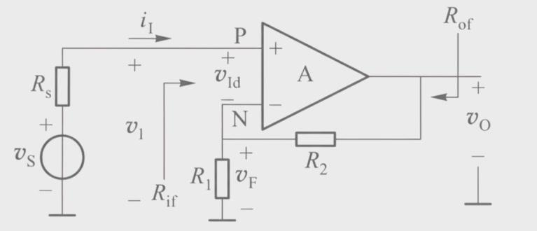
同相比例放大电路（左）与电压跟随器/缓冲器（右）：同相放大电路中反馈分压
v N = R 1 R 1 + R 2 v O = v P = v S v_N=\frac{R_1}{R_1+R_2}v_O=v_P=v_S A v f = 1 + R 2 R 1 ≥ 1 A_{vf}=1+\frac{R_2}{R_1}\ge1 R 2 = 0 R_2=0 R 1 = ∞ R_1=\infty 1 1
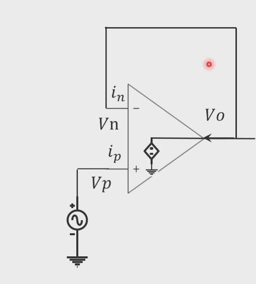
电压跟随器（缓冲器
Buffer）原理图：输出端直接连回反相输入端（R 2 = 0 , R 1 = ∞ R_2=0,R_1=\infty 由虚短与虚断立得
v O = v N = v P = v S v_O=v_N=v_P=v_S 1 1
比较维度
反相比例放大器 同相比例放大器 电压跟随器（缓冲器 Buffer）
电路接法特征 同相端接地（v P = 0 v_P=0 输入信号
v I v_I R 1 R_1 v o v_o R 2 R_2
输入信号
v S v_S v o v_o R 2 R_2 R 1 R_1
同相比例放大器取
R 2 = 0 R_2=0 R 1 = ∞ R_1=\infty
输入端电位关系 虚地 ：v N = v P = 0 v_N=v_P=0 虚短（非虚地） ：v N = v P = v S v_N=v_P=v_S v S v_S v N = v P = v S v_N=v_P=v_S v o = v N v_o=v_N
核心 KCL 方程 i = v I − 0 R 1 = 0 − v o R 2 i=\dfrac{v_I-0}{R_1}=\dfrac{0-v_o}{R_2} v N = R 1 R 1 + R 2 v o = v S v_N=\dfrac{R_1}{R_1+R_2}v_o=v_S v o = v N = v P = v S v_o=v_N=v_P=v_S
闭环电压增益
A v f A_{vf} A v f = − R 2 R 1 A_{vf}=-\dfrac{R_2}{R_1} 1 1 R 1 = R 2 R_1=R_2 A v f = − 1 A_{vf}=-1 反相器 ）A v f = 1 + R 2 R 1 ≥ 1 A_{vf}=1+\dfrac{R_2}{R_1}\ge1 1 1 A v f = 1 A_{vf}=1
输出与输入相位 反相 （相差
180 ∘ 180^\circ 同相 （相位差
0 ∘ 0^\circ 同相 （相位差
0 ∘ 0^\circ
闭环输入电阻
R i f R_{if} R i f = R 1 R_{if}=R_1 R i f R_{if} R 1 R_1 R i f → ∞ R_{if}\to\infty i I = i P = 0 i_I=i_P=0 R i f → ∞ R_{if}\to\infty
闭环输出电阻
R o f R_{of} R o f → 0 R_{of}\to0 R o f → 0 R_{of}\to0 R o f → 0 R_{of}\to0
主要特点与用途 节点 N 电位固定为
0 0
输入阻抗极高，不衰减高内阻信号源电压，输出与输入同相
阻抗变换与级间隔离缓冲 ：连接高内阻传感器与低阻负载，消除前后级负载效应
结论 4 ·
用“虚短”与“虚断”分析线性运放电路的四步法
判反馈极性与工作区 ：检查 输出端是否通过电阻 （或无源网络 ）连回运放的反相输入端（− - ；确认存在负反馈 后，假定运放 工作在线性区 。 标“虚断”去无流压降 ：在两个输入 端标出
i P = 0 i_P=0 i N = 0 i_N=0 若同相 输入端只串联 了电阻接信号源 （无其他分流支路 ），因电流 为零，该串联电阻 上压降为
0 0 写出
v P v_P 用“虚短”传电位 ：令反相 端电位等于 已求出的同相 端电位
v N = v P v_N=v_P 同相 端接地，直接标出虚地
v N = 0 v_N=0 对反相节点列 KCL 并检验不饱和 ：因
i N = 0 i_N=0 反相 节点
N
上的外电路支路 电流代数和必为零（∑ v N − v k R k = 0 \sum\dfrac{v_N-v_k}{R_k}=0 由此一式 解出输出电压
v o v_o 若题干 给出了电源电压
± V C C \pm V_{CC} ± V o m \pm V_{om} 验算
| v o | ≤ V o m |v_o|\le V_{om} 成立 。
易错 ·
“虚地”是电位为零而非真正对地短路，且开关切换时要重新检查虚断支路
不能把“虚地”当成真地画进拓扑 ：反相 放大器中
v N = 0 v_N=0 负反馈 驱使输出电压
v o = − i R 2 v_o=-iR_2 电位 拉回零，而不是 N 点用导线接到了地 。短路 ，就会得出 “电流
i i 流入地 、不走反馈电阻
R 2 R_2 结论 。记住：虚地
= 电位为
0 0 i N = 0 i_N=0 。同相端电阻何时有压降、何时无压降 ：当同相 端 P
只经一个电阻
R R 电压源
v S v_S 地开路时 ，由虚断
i P = 0 i_P=0 R R 电流 ，v P = v S v_P=v_S 地电阻
R ′ R' 电阻分压 器），则电流 从
v S v_S R R R ′ R' 公式 算
v P = R ′ R + R ′ v S v_P=\dfrac{R'}{R+R'}v_S
小节练习 · 比例运算电路、开关切换与运放应用设计（教材习题
2.3.1—2.3.3、2.3.5）
习题 7 · 含直流调零电位器的同相输入运放电路分析
练习 · 先独立作答
如图（教材图题 2.3.1）所示为同相 输入方式的放大 电路，A
为理想运放 ，可变电阻
R P = 100 k Ω R_P=100\ \text{k}\Omega ± 15 V \pm15\ \text{V} 2 M Ω 2\ \text{M}\Omega 电阻 接至反相输入端 ，用来调节 输出直流电 位，反馈电阻 为
1 k Ω 1\ \text{k}\Omega 试求：(1)
当交流 输入
V ̇ i = 0 \dot V_i=0 可变电阻
R P R_P 滑动 端，输出直流电 压
V O V_O 范围 是多少？(2) 电路 对交流输入信号 的闭环电压放大倍数
A ̇ v f = V ̇ o / V ̇ i \dot A_{vf}=\dot V_o/\dot V_i 教材 第二篇题 2.3.1）
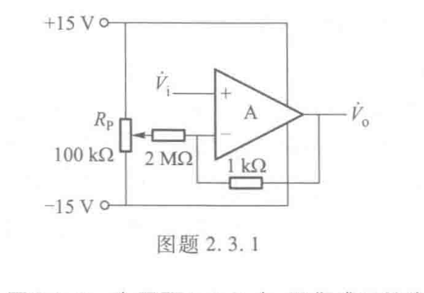
教材图题 2.3.1：同相输入端接信号
V ̇ i \dot V_i 2 M Ω 2\ \text{M}\Omega ± 15 V \pm15\ \text{V} R P R_P 100 k Ω 100\ \text{k}\Omega 1 k Ω 1\ \text{k}\Omega
解析
(1) 令
V ̇ i = 0 \dot V_i=0 同相 端接地
V P = 0 V_P=0 虚短 得反相端为虚地
V N = 0 V_N=0 电位器 滑动端在最上端（+ 15 V +15\ \text{V} 和最下端（− 15 V -15\ \text{V} 时，对反相 端构成
R 1 = 2 M Ω R_1=2\ \text{M}\Omega R 2 = 1 k Ω R_2=1\ \text{k}\Omega 反相 比例电路，V O = − 1 k Ω 2 M Ω ( ± 15 V ) = ∓ 7.5 mV V_O=-\dfrac{1\ \text{k}\Omega}{2\ \text{M}\Omega}(\pm15\ \text{V})=\mp7.5\ \text{mV} 交流增益时 将直流电源
± 15 V \pm15\ \text{V} 同相比例放大器 ，因
2 M Ω ≫ 1 k Ω 2\ \text{M}\Omega\gg1\ \text{k}\Omega A ̇ v f = 1 + 1 k Ω 2 M Ω + R P ∥ ≈ 1 \dot A_{vf}=1+\dfrac{1\ \text{k}\Omega}{2\ \text{M}\Omega+R_{P\parallel}}\approx1 V O V_O 范围 为
− 7.5 mV ∼ + 7.5 mV -7.5\ \text{mV}\sim+7.5\ \text{mV} ± 7.5 mV \pm7.5\ \text{mV} A ̇ v f ≈ 1 \dot A_{vf}\approx1
解答
当
V ̇ i = 0 \dot V_i=0 V O V_O ：
V ̇ i = 0 \dot V_i=0 同相 端电位
V P = 0 V_P=0 虚短 知反相端为虚地
V N = V P = 0 V_N=V_P=0 电位器
R P R_P 滑动 端滑至最上端（+ 15 V +15\ \text{V} 或最下端（− 15 V -15\ \text{V} 时，滑动 端电位精确为
V W = ± 15 V V_W=\pm15\ \text{V} 虚断
i N = 0 i_N=0 2 M Ω 2\ \text{M}\Omega 电阻 的电流全部流过
1 k Ω 1\ \text{k}\Omega 电阻 ：
V O = − 1 k Ω 2 M Ω V W = − 10 3 2 × 10 6 × ( ± 15 V ) = ∓ 7.5 × 10 − 3 V = ∓ 7.5 mV . V_O=-\frac{1\ \text{k}\Omega}{2\ \text{M}\Omega}V_W=-\frac{10^3}{2\times10^6}\times(\pm15\ \text{V})=\mp7.5\times10^{-3}\ \text{V}=\mp7.5\ \text{mV}. 直流电 位
V O V_O 范围 为
− 7.5 mV ∼ + 7.5 mV -7.5\ \text{mV}\sim+7.5\ \text{mV} ± 7.5 mV \pm7.5\ \text{mV} 交流闭环电压放大倍数
A ̇ v f = V ̇ o / V ̇ i \dot A_{vf}=\dot V_o/\dot V_i
按叠加定理 求交流响应 时，将直流电源
+ 15 V +15\ \text{V} − 15 V -15\ \text{V} 交流接地 ）。此时电位器 两段并联电阻
R P ∥ ≤ 25 k Ω R_{P\parallel}\le25\ \text{k}\Omega 2 M Ω 2\ \text{M}\Omega 串联 接地，构成同相比例放大器 的接地电阻
R 1 = 2 M Ω + R P ∥ ≈ 2 M Ω R_1=2\ \text{M}\Omega+R_{P\parallel}\approx2\ \text{M}\Omega 电阻 为
R 2 = 1 k Ω R_2=1\ \text{k}\Omega 同相 比例放大 公式：
A ̇ v f = V ̇ o V ̇ i = 1 + R 2 R 1 = 1 + 1 k Ω 2 M Ω + R P ∥ ≈ 1 + 0.0005 ≈ 1 . \dot A_{vf}=\frac{\dot V_o}{\dot V_i}=1+\frac{R_2}{R_1}=1+\frac{1\ \text{k}\Omega}{2\ \text{M}\Omega+R_{P\parallel}}\approx1+0.0005\approx1. 可见 该电路在交流信号 下是一个带精密毫伏级直流 调零功能 的电压跟随器 。
习题 8 ·
多开关切换下的运放工作模式与输出电压关系
练习 · 先独立作答
在如图（教材图题 2.3.2）所示电路 中，设集成运放 A
为理想器件 ，图中三个电阻阻值 均为
R R 分别求下列 四种开关状态组合 下输出电压
v O v_O 电压
v S v_S 关系式 ：(1) 若
S 1 \text{S}_1 S 3 \text{S}_3 S 2 \text{S}_2 v O = ? v_O=\ ? S 1 \text{S}_1 S 2 \text{S}_2 S 3 \text{S}_3 v O = ? v_O=\ ? S 2 \text{S}_2 S 1 \text{S}_1 S 3 \text{S}_3 v O = ? v_O=\ ? S 1 \text{S}_1 S 2 \text{S}_2 S 3 \text{S}_3 闭合 ，v O = ? v_O=\ ? 教材 第二篇题
2.3.2）
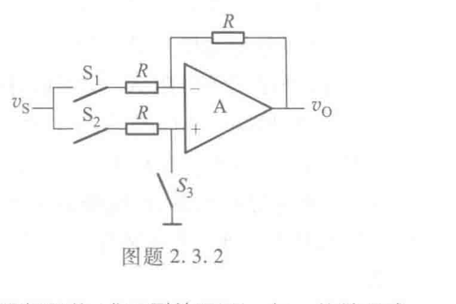
教材图题 2.3.2：信号源
v S v_S S 1 \text{S}_1 R R S 2 \text{S}_2 R R S 3 \text{S}_3 R R
解析
按结论 4，每种开关状态 下先确定同相 端电位
v P v_P S 3 \text{S}_3 闭合 时直接将
v P v_P 钳位 到地
0 V 0\ \text{V} S 3 \text{S}_3 S 2 \text{S}_2 虚断
i P = 0 i_P=0 v P = v S v_P=v_S v N = v P v_N=v_P 反相 节点
KCL 算出流过反馈电阻
R R 电流 。 答案：(1)
v O = − v S v_O=-v_S v O = v S v_O=v_S v O = v S v_O=v_S v O = − v S v_O=-v_S
解答
状态
(1)：S 1 \text{S}_1 S 3 \text{S}_3 S 2 \text{S}_2 ：
S 3 \text{S}_3 同相 端直接接地 ，v P = 0 v_P=0 虚短 得
v N = v P = 0 v_N=v_P=0 支路
S 1 \text{S}_1 输入电阻 为
R R 电阻 为
R R 反相比例放大器 （反相器 ）：
v O = − R R v S = − v S . v_O=-\frac{R}{R}v_S=-v_S. 状态
(2)：S 1 \text{S}_1 S 2 \text{S}_2 S 3 \text{S}_3 ：
S 3 \text{S}_3 虚断
i P = 0 i_P=0 支路电阻
R R 电流 、无压降 ，故同相 端电位
v P = v S v_P=v_S 虚短 得反相端电位 也为
v N = v P = v S v_N=v_P=v_S 输入电阻
R R 电位 均为
v S v_S v S v_S v N = v S v_N=v_S 流过 上支路输入电阻
R R 电流 为
i 1 = v S − v N R = 0 i_1=\dfrac{v_S-v_N}{R}=0 虚断
i N = 0 i_N=0 电阻
R R 电流 也为
0 0 v O = v N − 0 ⋅ R = v S . v_O=v_N-0\cdot R=v_S. 状态
(3)：S 2 \text{S}_2 S 1 \text{S}_1 S 3 \text{S}_3 ： 同相 端经下支路
R R v S v_S i P = 0 i_P=0 v P = v S v_P=v_S 虚短 得
v N = v P = v S v_N=v_P=v_S 支路
S 1 \text{S}_1 断开 且
i N = 0 i_N=0 电阻
R R 电流 流过，电路 等效为电压跟随器 ：
v O = v N = v S . v_O=v_N=v_S. 状态
(4)：S 1 \text{S}_1 S 2 \text{S}_2 S 3 \text{S}_3 ： 虽然
S 2 \text{S}_2 开关
S 3 \text{S}_3 运放 同相输入 端短接到地（下支路电阻
R R 电流
v S / R v_S/R S 3 \text{S}_3 流入地 ），故同相 端电位仍被严格 固定在
v P = 0 v_P=0 v N = v P = 0 v_N=v_P=0 支路 依然是增益 为
− 1 -1 反相器 ：
v O = − R R v S = − v S . v_O=-\frac{R}{R}v_S=-v_S.
习题 9 · 用理想运放与普通电压表设计线性欧姆表
练习 · 先独立作答
如图（教材图题 2.3.3）所示，利用集成运放 A
和普通直流 电压表可组成性能 良好的线性欧姆表 。 设 A
为理想运放 ，虚线方框 表示满量程 为
2 V 2\ \text{V} 电压表 （R M R_M
是它的等效内阻 ），基准直流 负电压为
− V = − 2 V -V=-2\ \text{V} 电阻
R x R_x 支路端子 A、B 之间。(1) 试证明 被测电阻
R x R_x 运放 输出电压
V O V_O 成正比 ，并写出
V O V_O 表达式 ；(2) 计算 当要求被测电阻
R x R_x 测量范围 为
0 ∼ 10 k Ω 0\sim10\ \text{k}\Omega 电压表读数
0 ∼ 2 V 0\sim2\ \text{V} 满量程 ）时，基准电阻
R 1 R_1 阻值 ？（教材 第二篇题 2.3.3）
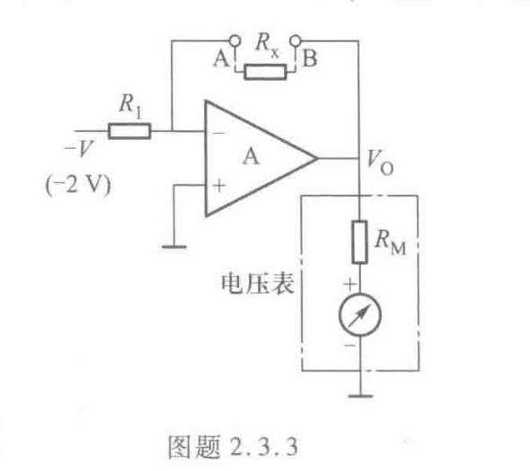
教材图题
2.3.3：运放同相端接地，反相端经基准电阻
R 1 R_1 − V = − 2 V -V=-2\ \text{V} R x R_x V O V_O 2 V 2\ \text{V}
解析
同相 端接地
V P = 0 V_P=0 虚短 得反相端为虚地
V N = 0 V_N=0 电压源
− V = − 2 V -V=-2\ \text{V} R 1 R_1 反相 节点抽出恒定电流
I 1 = V / R 1 I_1=V/R_1 虚断
i N = 0 i_N=0 电流 全部从输出端经 被测电阻
R x R_x V O = I 1 R x = V R 1 R x = 2 R x R 1 V V_O=I_1R_x=\dfrac{V}{R_1}R_x=\dfrac{2R_x}{R_1}\ \text{V} V O = V R 1 R x = 2 R x R 1 V ∝ R x V_O=\dfrac{V}{R_1}R_x=\dfrac{2R_x}{R_1}\ \text{V}\propto R_x R 1 = 10 k Ω R_1=10\ \text{k}\Omega
解答
证明
R x R_x V O V_O ：
运放 同相端接地（V P = 0 V_P=0 由虚短 知反相端为虚地 （V N = 0 V_N=0 因此基准电阻
R 1 R_1 端电压恒 为
V = 2 V V=2\ \text{V} R 1 R_1 电流 为恒流
I 1 = 0 − ( − V ) R 1 = V R 1 . I_1=\frac{0-(-V)}{R_1}=\frac{V}{R_1}. 虚断 （i N = 0 i_N=0 流过被测电阻
R x R_x 输出 端
B 流向反相 端 A）的电流 必等于
I 1 I_1 理想 运放输出电阻
R o f = 0 R_{of}=0 电压表内阻
R M R_M 影响 输出电压
V O V_O V O = V N + I 1 R x = V R 1 R x = 2 R x R 1 ( V ) . V_O=V_N+I_1R_x=\frac{V}{R_1}R_x=\frac{2R_x}{R_1}\ (\text{V}). V = 2 V V=2\ \text{V} R 1 R_1 常数 ，所以输出电压 （即电压表读数 ）V O V_O 电阻
R x R_x 成正比 ，欧姆表刻度 是均匀线性 的。求
R x ∈ [ 0 , 10 k Ω ] R_x\in[0,10\ \text{k}\Omega] R 1 R_1
当被测电阻 取上限
R x = 10 k Ω R_x=10\ \text{k}\Omega 电压表 恰好达到满量程
V O = 2 V V_O=2\ \text{V} 代入 上式：
2 V = 2 V R 1 × 10 k Ω ⟹ R 1 = 10 k Ω . 2\ \text{V}=\frac{2\ \text{V}}{R_1}\times10\ \text{k}\Omega\implies R_1=10\ \text{k}\Omega.
更多课本习题 · 第二篇第 3 章（集成运放基本运算电路，题 2.3.4—2.3.28）
题
2.3.5 （由四个电压跟随器 与星形电阻网络组成 的加权求和电路 ，见下图 ）：
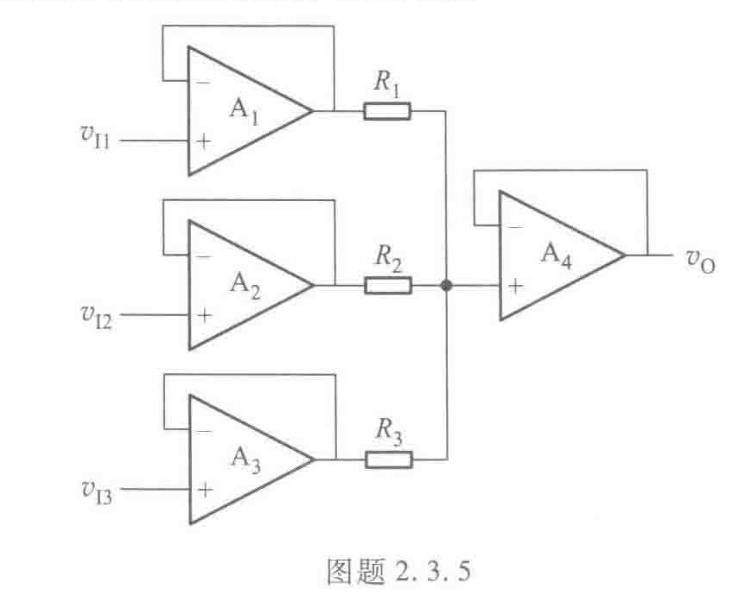
教材图题 2.3.5：三路输入
v I 1 , v I 2 , v I 3 v_{I1},v_{I2},v_{I3} A 1 , A 2 , A 3 \text{A}_1,\text{A}_2,\text{A}_3 R 1 , R 2 , R 3 R_1,R_2,R_3 A 4 \text{A}_4
关键一步与解答 ：前三个运放
A 1 , A 2 , A 3 \text{A}_1,\text{A}_2,\text{A}_3 电压跟随器 （A v f = 1 A_{vf}=1 输出电阻 为
0 0 输出 端的电压 分别为
v O 1 = v I 1 v_{O1}=v_{I1} v O 2 = v I 2 v_{O2}=v_{I2} v O 3 = v I 3 v_{O3}=v_{I3} 理想 的零内阻电压源 。第四个运放
A 4 \text{A}_4 电压跟随器 ，其同相 输入端电流 为零（虚断
i P 4 = 0 i_{P4}=0 输出
v O = v P 4 v_O=v_{P4} 节点
P 4 P_4 节点电压 法（或叠加定理 ：令其中一路输入 单独作用 、其余两路电压跟随器 输出端接地 ，构成单路 与另外两电阻并联 的分压）：
v O = v P 4 = R 2 ∥ R 3 R 1 + R 2 ∥ R 3 v I 1 + R 1 ∥ R 3 R 2 + R 1 ∥ R 3 v I 2 + R 1 ∥ R 2 R 3 + R 1 ∥ R 2 v I 3 . v_O=v_{P4}=\frac{R_2\parallel R_3}{R_1+R_2\parallel R_3}v_{I1}+\frac{R_1\parallel R_3}{R_2+R_1\parallel R_3}v_{I2}+\frac{R_1\parallel R_2}{R_3+R_1\parallel R_2}v_{I3}. 书后答案 完全一致。这正是利用电压跟随器 “高输入阻抗 、低输出阻抗 ”消除 各输入通道 间相互串扰的经典 设计。
题
2.3.4、2.3.6—2.3.28 （反相 /同相求和运算 电路、积分与微分 运算电路 、三运放 仪用放大器、电压—电流变换器 、有源滤波器 、单限 /滞回比较器与非正弦波形发生器 ）：属教材 第二篇
§2.3.2 二—四及 §2.3.3—2.3.4，课上尚未讲到，记“后续”。
在先修 04
电子电路·电路原理 （非线性电阻定义 与解析工作点例题 ）里，我们已经用电阻电路工具 求过二极管 的工作点和动态电阻 ，但当时把它当成 了一条给定的伏安曲线 。从本单元起进入模拟电子技术 ：先把
PN 结和二极管器件本身 的物理特性讲清楚，再把同一套“大信号模型 定
Q Q 信号模型 算微变”的分解思想 落到整流、与门、限幅和稳压电路 里。
2.1 PN 结与二极管伏安特性
例 7 ·
从二极管伏安特性看清导通区、死区与反向击穿
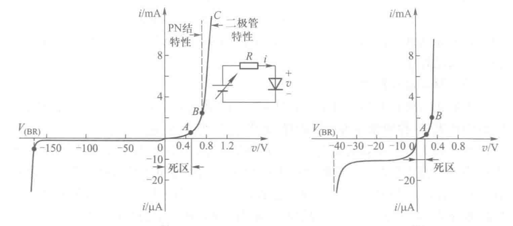
硅整流二极管 2CP6（左）与锗二极管
2AP15（右）的伏安特性曲线：纵轴正向为 mA、反向为
μ A \mu\text{A}
观察图中硅二极管 2CP6 与锗二极管 2AP15 的实测伏安曲线 （对照课件
1029）：
为什么正向电流 在
0 — 0.5 V 0\text{—}0.5\ \text{V} 电压 后却陡然上升 到毫安级？
为什么反向电压 加到几十伏时电流 仍维持在微安 级以下（几乎断路 ），却在
− V ( BR ) -V_{(\text{BR})} 增大 ？
若环境温度 升高
20 ∘ C 20\,^\circ\text{C} 电流
i D i_D 对应 的正向压降
v D v_D 变化 ？
解。
内建势垒与扩散主导 ：将 P 型半导体 （多子为空穴 ）与 N
型半导体 （多子为自由电子 ）结合形成 PN 结
时，交界面两侧多子因浓度差 向对方扩散，在界面 附近留下 不能移动的负离子 与正离子，形成耗尽层 与由
N 指向 P 的内建电场 （硅的内建电势
V 0 ≈ 0.7 V V_0\approx0.7\ \text{V} 外压时 扩散流与少子漂移 流精确抵消 ，净电流 为零。外加正向电压 （P
接正、N
接负）削弱内建电场 、使耗尽层 变窄；只有外压 高到接近内建势 垒（死区电压 ：硅约
0.5 V 0.5\ \text{V} 0.1 V 0.1\ \text{V} 大量 多子才能跨过势垒 形成按指数规律 猛增的正向电流 。反向偏置与击穿 ：外加反向电压 （P
接负、N
接正）增强内建电场 、使耗尽层 变宽，多子扩散 被抑制，只剩极微弱的少子漂移 形成反向饱和电流
I S I_S 硅管 约
nA \text{nA} 1 μ A 1\ \mu\text{A} μ A \mu\text{A} 反向电压 高到击穿电压
V ( BR ) V_{(\text{BR})} 载流子 碰撞晶格 引发雪崩倍增 （或强电场 直接拉断共价键产生 齐纳击穿 ），反向电流 剧增。普通 整流二极管 一旦无限制 地进入击穿 区就会过热烧毁，而稳压管专门 利用可控且限流 的反向击穿特性 工作。温度效应 ：热电压
V T = k T / q V_T=kT/q 本征载流子 浓度
n i 2 ∝ T 3 e − E g / ( k T ) n_i^2\propto T^3 e^{-E_g/(kT)} 温度 升高而增大 ，导致 同一
v D v_D 明显增大 、正向压降温度系数 约为
Δ v D Δ T ≈ − 2.5 mV / ∘ C . \frac{\Delta v_D}{\Delta T}\approx-2.5\ \text{mV}/^\circ\text{C}. 温度 升高
20 ∘ C 20\,^\circ\text{C} 电流基本 不变时，硅管 正向压降约下降
50 mV 50\ \text{mV} 反向饱和电流
I S I_S 升高
10 ∘ C 10\,^\circ\text{C}
定义 4 · PN 结单向导电性与肖克莱伏安方程
将 PN 结封装 并从 P 区引出 正极（阳极 A）、从 N 区引出负极 （阴极
K），构成半导体二极管 。 忽略体电阻 和极小漏电流时，PN
结及理想二极管 的直流/低频伏安 关系由肖克莱方程 给出：
i D = I S ( e v D n V T − 1 ) , V T = k T q ≈ 26 mV ( 室温 T ≈ 300 K ) . i_D=I_S\!\left(e^{\frac{v_D}{nV_T}}-1\right),\qquad V_T=\frac{kT}{q}\approx26\ \text{mV}\ (\text{室温 }T\approx300\ \text{K}). 其中
I S I_S 反向饱和电流 ，n n 系数 （教材基本公式 常合并或取集成二极管
n = 1 n=1 分立二极管 多取
n = 1 — 2 n=1\text{—}2 课件 计算有时取常温
V T ≈ 25 mV V_T\approx25\ \text{mV}
正向导通 （v D ≫ n V T v_D\gg nV_T i D ≈ I S e v D / ( n V T ) i_D\approx I_Se^{v_D/(nV_T)} 对数求差得十倍程规律 ：当
n = 1 , V T = 26 mV n=1,V_T=26\ \text{mV} 增大
10 10 端电压 仅增加
Δ v D = V T ln 10 ≈ 2.3 × 26 mV ≈ 60 mV \Delta v_D=V_T\ln10\approx2.3\times26\ \text{mV}\approx60\ \text{mV} 导通 区电流跨几个数量级时 ，v D v_D 硅管
0.6 — 0.8 V 0.6\text{—}0.8\ \text{V} V on = 0.7 V V_{\text{on}}=0.7\ \text{V} 锗管
0.2 — 0.3 V 0.2\text{—}0.3\ \text{V} 反向偏置 （v D < 0 v_D<0
且
| v D | ≫ n V T |v_D|\gg nV_T e v D / ( n V T ) ≪ 1 e^{v_D/(nV_T)}\ll1 i D ≈ − I S i_D\approx-I_S 开路 。
结论 5 · 半导体材料、PN 结电容与常见特种二极管
掺杂决定导电能力 ：本征（纯净）硅共价键 束缚强、室温载流子 浓度很低（n i ≈ 1.5 × 10 10 cm − 3 n_i\approx1.5\times10^{10}\ \text{cm}^{-3} 电阻率 高；掺入五价元素 （磷、锑等，称施主 ）得自由电子 为多子的
N 型半导体 ，掺入三价元素 （硼等，称受 主）得空穴 为多子的
P 型半导体 ，遵循热平衡 关系
n p = n i 2 np=n_i^2 课堂 讨论：增大多数载流子浓度 会经复合 剧烈压低 少数载流子浓度 ）。 高频下的结电容 （不可视作纯直流单向开关）：
势垒电容
C j C_j 耗尽层 正负空间电荷 随外压变宽 变窄，类似平板电容 ，C j = C j 0 ( 1 + v R / V 0 ) m C_j=\dfrac{C_{j0}}{(1+v_R/V_0)^m} 占优 ，随反向电压 增大而减小 ，用于压控 变容二极管 ）；扩散电容
C d C_d 正偏时中性区 注入并随电压 剧增的非平衡 少数载流子电荷 ，表达式 为
C d = τ T I D n V T C_d=\dfrac{\tau_T I_D}{nV_T} 占优 ，正比于工作 电流，限制 高速开关和放大器 高频响应）。 常见特种二极管速查 ：
器件类型
工作偏置
核心特点与典型压降
主要用途
普通硅/锗二极管
正偏导通 / 反偏截止
V on ≈ 0.7 V V_{\text{on}}\approx0.7\ \text{V} 0.3 V 0.3\ \text{V} 整流、检波、限幅、开关逻辑
稳压二极管（齐纳管）
反向击穿区（须串限流电阻）
稳定电压
V Z V_Z r z r_z
直流稳压、基准电位、双向限幅
肖特基二极管
金属—N 型半导体结，正偏
无少子存储、关断极快，V on ≈ 0.4 V V_{\text{on}}\approx0.4\ \text{V}
高速数字开关、低压大电流整流
发光二极管（LED）
正偏导通
GaAsP/GaP \text{GaAsP/GaP} V on ≈ 1.3 — 2.4 V V_{\text{on}}\approx1.3\text{—}2.4\ \text{V} 显示与光电耦合发射端
光电二极管
反偏（光电导模式）
反向光电流随光照线性增大
第 1 单元 1.1 节习题 1 前端探测器
习题 10 · 伏安特性估读与二极管正反接极限保护
练习 · 先独立作答
参照例 7 中的硅管 2CP6 伏安特性曲线 ：（1）若把该硅二极管 直接正接 在
1.5 V 1.5\ \text{V} 干电池 两端（不串任何限流电阻 ），会出现什么后果 ？反向 直接接在
200 V 200\ \text{V} 直流电源 两端，又会出现什么后果 ？（3）当电路中串联电阻 将二极管正向电流 限定在
2 mA 2\ \text{mA} 端压 约为
0.7 V 0.7\ \text{V} 工作 点处的直流静态电阻
R D R_D 动态电阻
r d r_d 室温 取
V T = 26 mV V_T=26\ \text{mV} 教材习题
1.2.1、1.2.2 型；对比04
电子电路·电路原理 22.1 节二极管静动态电阻 作业题）
解析
正向无限制 接
1.5 V 1.5\ \text{V} 电池 远超硅管导通 压降约
0.7 V 0.7\ \text{V} 电流指数 猛增导致正向过流 烧毁；反向 接
200 V 200\ \text{V} 超过 图 1.2.20(a) 所示 约
150 — 160 V 150\text{—}160\ \text{V} 电压 ，引发 反向击穿损坏。在
Q ( 0.7 V , 2 mA ) Q(0.7\ \text{V},2\ \text{mA}) 静态电阻
R D = V D / I D = 350 Ω R_D=V_D/I_D=350\ \Omega 动态电阻
r d ≈ V T / I D = 13 Ω r_d\approx V_T/I_D=13\ \Omega 相差近
27 倍。
解答
直接正接
1.5 V 1.5\ \text{V} ：硅二极管 进入正向导通 区后端电压 仅约
0.7 V 0.7\ \text{V} 电阻时 多余的
0.8 V 0.8\ \text{V} 体电阻 上，正向电流 急剧上升 并超过最大整流电流
I F I_F 正向过流发热而烧毁 （即使换作教材习题
1.2.1 的锗管或 1.2.2 的硅管 也是如此）。直接反接
200 V 200\ \text{V} ：由图 1.2.20(a) 可读出 2CP6 的反向击穿电压
| V ( BR ) | |V_{(\text{BR})}| 160 V < 200 V 160\ \text{V}<200\ \text{V} 200 V 200\ \text{V} 反向击穿区且无外部限流 ，管子 迅速损坏（同理 接
100 V 100\ \text{V} 教材习题 1.2.2 管若
| V ( BR ) | < 100 V |V_{(\text{BR})}|<100\ \text{V} 反向 击穿）。静态电阻与动态电阻辨析 （I D Q = 2 mA , V D Q = 0.7 V , n = 1 I_{DQ}=2\ \text{mA},V_{DQ}=0.7\ \text{V},n=1
R D = V D Q I D Q = 0.7 V 2 mA = 350 Ω , r d ≈ V T I D Q = 26 mV 2 mA = 13 Ω . R_D=\frac{V_{DQ}}{I_{DQ}}=\frac{0.7\ \text{V}}{2\ \text{mA}}=350\ \Omega,\qquad r_d\approx\frac{V_T}{I_{DQ}}=\frac{26\ \text{mV}}{2\ \text{mA}}=13\ \Omega. 04
电子电路·电路原理 22.1 节二极管静动态电阻 作业题：同一工作 点下
R D R_D 原点连线斜率 的倒数，用来做直流 压降近似 ；r d r_d 切线斜率 的倒数，只用于 叠加微小交流 变化量。）
2.2 二极管的等效模型与假设验证法
在简单单管电路 里，把线性 部分戴维宁等效 后可以像04
电子电路·电路原理 的图解法 那样画负载线求交点 ；一旦电路里有两只以上二极管 或需要算交流小信号微变 ，图解法就无能为力 ，必须把非线性特性 按工作区域 分段线性化 成电路模型。
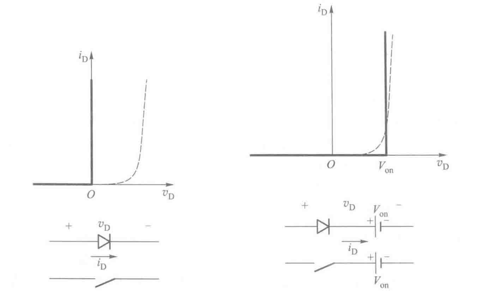
二极管线性化模型对比：左图为理想二极管开关模型（正偏压降
0、反偏电流 0），右图为大信号恒压降模型（导通支路等效为直流电池
V on ≈ 0.7 V V_{\text{on}}\approx0.7\ \text{V}
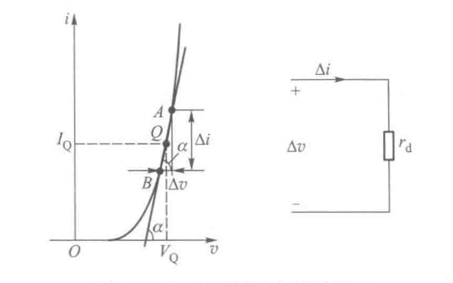
二极管小信号微变模型：在直流工作点
Q ( V Q , I Q ) Q(V_Q,I_Q) r d = V T / I Q r_d=V_T/I_Q
例 8 ·
按电压量级与激励形态选用大信号模型与小信号模型
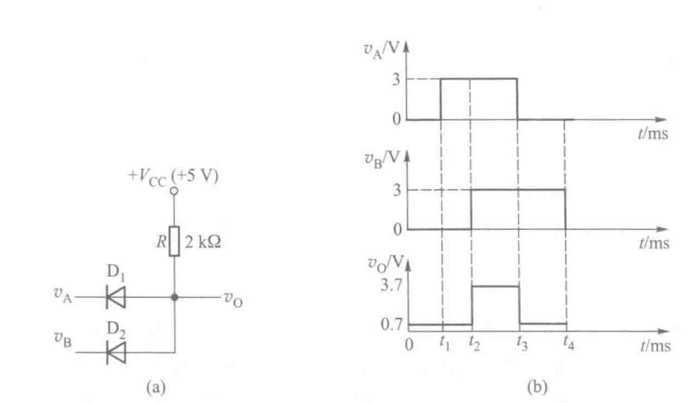
例 1.2.2 电路（左）与例 1.2.3
低压稳压电路（右）：前者验证多管“假设验证法”与逻辑与门；后者演示直流大信号定
Q 点＋交流小信号电阻分压（教材图 1.2.28、图 1.2.29）。
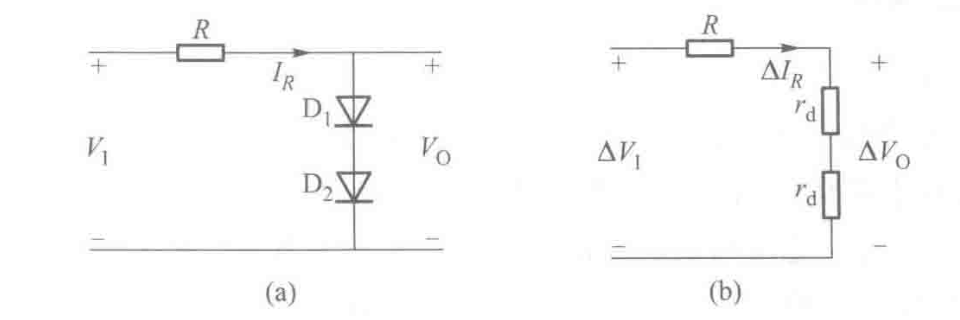
低压稳压与微变等效：直流下
V I = 12 V V_I=12\ \text{V} Δ V I = ± 1.2 V \Delta V_I=\pm1.2\ \text{V} r d r_d
逻辑与门电路 （教材 例
1.2.2，上左图 ）：V C C = 5 V V_{CC}=5\ \text{V} R = 2 k Ω R=2\ \text{k}\Omega D 1 , D 2 \text{D}_1,\text{D}_2 硅二极管 （V on = 0.7 V V_{\text{on}}=0.7\ \text{V} 输入信号
v A , v B v_A,v_B 0 V 0\ \text{V} 3 V 3\ \text{V} 跳变 。求四种输入 组合下的输出电压
v O v_O 理想开关模型 。 二极管低压稳压电路 （教材 例
1.2.3，上右图 ）：V I = 12 V V_I=12\ \text{V} 限流电阻
R = 5.1 k Ω R=5.1\ \text{k}\Omega 串联 的相同硅二极管
D 1 , D 2 \text{D}_1,\text{D}_2 V on = 0.7 V V_{\text{on}}=0.7\ \text{V} V T = 26 mV V_T=26\ \text{mV} V I V_I ± 10 % \pm10\% 叠加
Δ V I = ± 1.2 V \Delta V_I=\pm1.2\ \text{V} 扰动 ），求稳态 输出电压
V O V_O 电压 的变化量
Δ V O \Delta V_O 变化率
Δ V O / V O \Delta V_O/V_O
解。
（1）恒压降模型 ＋ 假设验证法 ：此处输入高低电平 为
3 V 3\ \text{V} 0 V 0\ \text{V} 导通 压降
0.7 V 0.7\ \text{V} 信号幅度 可比，不可 忽略，故选用大信号恒压降模型 （导通 时管压降恒为
0.7 V 0.7\ \text{V} 输入 分别判断 ：
-
v A = v B = 0 V v_A=v_B=0\ \text{V} 阴极 均为
0 V 0\ \text{V} + 5 V +5\ \text{V} 导通 ，输出 被钳在
v O = 0.7 V v_O=0.7\ \text{V} v A = 3 V , v B = 0 V v_A=3\ \text{V},\ v_B=0\ \text{V} 若先 假设
D 1 \text{D}_1 v O = 3 + 0.7 = 3.7 V v_O=3+0.7=3.7\ \text{V} D 2 \text{D}_2 3.7 V 3.7\ \text{V} 0 V 0\ \text{V} 0.7 V 0.7\ \text{V} 端压 只能
0.7 V 0.7\ \text{V} D 2 \text{D}_2 v O = 0 + 0.7 = 0.7 V v_O=0+0.7=0.7\ \text{V} D 1 \text{D}_1 0.7 V 0.7\ \text{V} 3 V 3\ \text{V} 承受 反压
− 2.3 V < 0.7 V -2.3\ \text{V}<0.7\ \text{V} 截止 ，完全自洽 ！对称 地，v A = 0 V , v B = 3 V v_A=0\ \text{V},\ v_B=3\ \text{V} v O = 0.7 V v_O=0.7\ \text{V} v A = v B = 3 V v_A=v_B=3\ \text{V} 导通 ，输出
v O = 3 + 0.7 = 3.7 V v_O=3+0.7=3.7\ \text{V} 可见 只有“全高”时输出才是高电平
3.7 V 3.7\ \text{V} 与门（AND） 功能（见图
1.2.28(b) 波形）。若错用理想模型 会得到
0 V 0\ \text{V} 3 V 3\ \text{V} 实际阈值电平 与电流分配 的准确估计 。
（2）先静态、后动态（叠加微变等效） ：面对直流
12 V 12\ \text{V} 扰动
± 1.2 V \pm1.2\ \text{V} 直流工作点 算出，再把器件 在工作点处线性化 为动态电阻
r d r_d 直流通路求
Q Q ：用恒压 降模型，V O Q = 2 × 0.7 = 1.4 V V_{OQ}=2\times0.7=1.4\ \text{V} 直流电 流为
I D Q = V I − V O Q R = 12 − 1.4 5.1 k Ω ≈ 2.08 mA . I_{DQ}=\frac{V_I-V_{OQ}}{R}=\frac{12-1.4}{5.1\ \text{k}\Omega}\approx2.08\ \text{mA}. 算小信号动态电阻 ：在
I D Q = 2.08 mA I_{DQ}=2.08\ \text{mA} 动态电阻 为
r d ≈ V T I D Q = 26 mV 2.08 mA ≈ 12.5 Ω . r_d\approx\frac{V_T}{I_{DQ}}=\frac{26\ \text{mV}}{2.08\ \text{mA}}\approx12.5\ \Omega. 画交流微变等效电路求变化量 ：直流源及恒压模型 里的
0.7 V 0.7\ \text{V} 量分析 中一律短路 置零，仅保留变化 源
Δ V I \Delta V_I 限流电阻
R R 动态电阻
2 r d 2r_d 分压 立得
Δ V O = Δ V I ⋅ 2 r d R + 2 r d = ± 1.2 V × 25 Ω 5100 Ω + 25 Ω ≈ ± 5.85 mV . \Delta V_O=\Delta V_I\cdot\frac{2r_d}{R+2r_d}=\pm1.2\ \text{V}\times\frac{25\ \Omega}{5100\ \Omega+25\ \Omega}\approx\pm5.85\ \text{mV}. 变化率 为
Δ V O V O = ± 5.85 mV 1.4 V ≈ ± 0.42 % \dfrac{\Delta V_O}{V_O}=\dfrac{\pm5.85\ \text{mV}}{1.4\ \text{V}}\approx\pm0.42\% 变化
± 10 % \pm10\% 输出 仅变
± 0.42 % \pm0.42\% 印证 了正向恒压区 也具有一定低压稳压特性 （教材“5
100”排版空格实指
5100 Ω 5100\ \Omega
定义 5 · 二极管的三种线性化电路模型
模型名称
正向导通等效
反向截止等效
适用条件与典型精度
理想开关模型 短路（v D = 0 , i D ≥ 0 v_D=0,\ i_D\ge0
开路（i D = 0 , v D ≤ 0 i_D=0,\ v_D\le0
外加电源/信号远大于
0.7 V 0.7\ \text{V} 24 V 24\ \text{V}
恒压降（大信号）模型 串联恒压源
V on V_{\text{on}} 0.7 V 0.7\ \text{V} 0.3 V 0.3\ \text{V} i D ≥ 0 i_D\ge0
开路（i D = 0 , v D < V on i_D=0,\ v_D<V_{\text{on}}
v D ≈ 0.7 V v_D\approx0.7\ \text{V}
微变（小信号）模型 仅对交流/增量 等效为动态电阻
r d = n V T I D Q r_d=\dfrac{nV_T}{I_{DQ}}
近似开路
叠加在直流工作点
Q Q | v d | ≪ n V T |v_d|\ll nV_T < 5 mV <5\ \text{mV} 仅限交流通路 ，严禁把
V on V_{\text{on}}
定理 2 ·
多二极管电路的假设验证法（Assume-and-Verify）
对含
m m 二极管 的直流/瞬态线性电阻 网络，先选定理想模型 或恒压降模型，再按以下四步严格求解 （最多
2 m 2^m 状态组合 ）：
假设状态 ：先假设各二极管 的通断组合 （常见策略 ：先假设 部分或全部导通 ，或根据直观 高/低电位差 排优先级）。替换线性电路 ：假设导通 的管子换作短路 （理想）或电压源
V on V_{\text{on}} 恒压 降）；假设截止 的管子直接断开 （开路）。 求解与逐条校验（核心） ：解出线性电路中每个假设导通管 的电流
i D i_D 截止管 的端压
v D v_D 同时 满足：
假设导通管 ：实算
i D > 0 i_D>0 电流 从正极流向负极 ）； 假设截止管 ：实算
v D < 0 v_D<0 理想模型 ）或
v D < V on v_D<V_{\text{on}} 恒压 降模型）。 矛盾即重设 ：只要任意 一条不等式 矛盾，说明假设组合错误 ，改换 下一组状态 重算，直到 唯一自洽 组出现。
易错 · 假设验证中的“共节点竞争”与小信号符号混淆
阳极并联谁先通（与门竞争） ：共阳极 或共阴极 的多只二极管 同时接不同电位时 ，绝不可能“电位 低的也同时强行导通 而各管压降 不同”。阴极电位最低 的管子最先导通 并把公共阳极 拉低，从而把阴极电位 更高的管子 全部反偏关 断（例
8
与门即此机制 ）；共阴极电路中则由阳极电位最高 的管子抢先导通 并拉高公共阴极 ，关断其余管子 。小信号计算绝不能漏剥直流 ：周金芳课件 常记
v D = V D + v d v_D=V_D+v_d i D = I D + i d i_D=I_D+i_d 大写直流 、小写交流增量 ）；V D Q + v d V_{DQ}+v_d Δ V , Δ I \Delta V,\Delta I 交流 响应时，直流量 只用来定出
I D I_D r d = n V T / I D r_d=nV_T/I_D 直流恒压源 必须置零（交流接地 ）。
习题 11 · 戴维宁等效后用假设验证法求二极管电流
练习 · 先独立作答
电路如图所示 ，二极管 D
采用大信号恒压降模型 （V on = 0.7 V V_{\text{on}}=0.7\ \text{V} 已知
V C C 1 = V C C 2 = 6 V V_{CC1}=V_{CC2}=6\ \text{V} 支路
+ V C C 1 +V_{CC1} 下负 、右支路
− V C C 2 -V_{CC2} 上负 下正）。 在下列 三组电阻参数 下，用戴维宁等效 先化简左侧网络 ，再用假设验证法 求
D 的通断状态 与正向电流
I D I_D R 1 = 2 k Ω , R 2 = 3 k Ω R_1=2\ \text{k}\Omega,R_2=3\ \text{k}\Omega （2）R 1 = R 2 = 3 k Ω R_1=R_2=3\ \text{k}\Omega R 1 = 3 k Ω , R 2 = 2 k Ω R_1=3\ \text{k}\Omega,R_2=2\ \text{k}\Omega 教材习题
1.2.3）
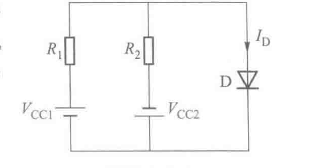
题图 1.2.3
电路：左侧两个带电阻的直流电源支路汇合后接至二极管 D 正极，注意 Vcc1 与
Vcc2 极性相反。
解析
将 D 从端口 断开，求左侧网络的戴维宁等效 电压
V th = 6 R 2 − 6 R 1 R 1 + R 2 V_{\text{th}}=\dfrac{6R_2-6R_1}{R_1+R_2} 电阻
R th = R 1 ∥ R 2 R_{\text{th}}=R_1\parallel R_2 构成 单回路验证 是否满足
V th > 0.7 V V_{\text{th}}>0.7\ \text{V} V th = 1.2 V > 0.7 V V_{\text{th}}=1.2\ \text{V}>0.7\ \text{V} I D = 1.2 − 0.7 1.2 k Ω ≈ 0.42 mA I_D=\dfrac{1.2-0.7}{1.2\ \text{k}\Omega}\approx0.42\ \text{mA} V th V_{\text{th}} 0 V 0\ \text{V} − 1.2 V -1.2\ \text{V} 小于
0.7 V 0.7\ \text{V} I D = 0 mA I_D=0\ \text{mA}
解答
把二极管 D
从电路 中暂时移走（视作外接端口 ），以下端公共导线 为参考零电位 。左侧由
+ V C C 1 = + 6 V +V_{CC1}=+6\ \text{V} R 1 R_1 − V C C 2 = − 6 V -V_{CC2}=-6\ \text{V} R 2 R_2 并联 向端口供电，开路电压与戴维宁等效 内阻为
V th = 6 R 1 + − 6 R 2 1 R 1 + 1 R 2 = 6 ⋅ R 2 − R 1 R 1 + R 2 , R th = R 1 ∥ R 2 . V_{\text{th}}=\frac{\dfrac{6}{R_1}+\dfrac{-6}{R_2}}{\dfrac{1}{R_1}+\dfrac{1}{R_2}}=6\cdot\frac{R_2-R_1}{R_1+R_2},\qquad R_{\text{th}}=R_1\parallel R_2. 接回二极管
D（正极接戴维宁正 端，负极 接地）后用假设验证法 逐一检验 ：
情况（1）R 1 = 2 k Ω , R 2 = 3 k Ω R_1=2\ \text{k}\Omega,R_2=3\ \text{k}\Omega
V th = 6 × 3 − 2 2 + 3 = + 1.2 V , R th = 2 ∥ 3 = 1.2 k Ω . V_{\text{th}}=6\times\frac{3-2}{2+3}=+1.2\ \text{V},\qquad R_{\text{th}}=2\parallel3=1.2\ \text{k}\Omega. 假设 D
截止（I D = 0 I_D=0 则
v D = V th = 1.2 V > 0.7 V v_D=V_{\text{th}}=1.2\ \text{V}>0.7\ \text{V} 导通 ，换上
0.7 V 0.7\ \text{V} 恒压 降模型得
I D = V th − V on R th = 1.2 − 0.7 1.2 k Ω = 0.5 1.2 mA ≈ 0.42 mA ( > 0 , 自洽 ) . I_D=\frac{V_{\text{th}}-V_{\text{on}}}{R_{\text{th}}}=\frac{1.2-0.7}{1.2\ \text{k}\Omega}=\frac{0.5}{1.2}\ \text{mA}\approx0.42\ \text{mA}\ (>0,\ \text{自洽}). 情况（2）R 1 = R 2 = 3 k Ω R_1=R_2=3\ \text{k}\Omega V th = 0 V V_{\text{th}}=0\ \text{V} v D = 0 V < 0.7 V v_D=0\ \text{V}<0.7\ \text{V} 截止 ，I D = 0 mA I_D=0\ \text{mA} 情况（3）R 1 = 3 k Ω , R 2 = 2 k Ω R_1=3\ \text{k}\Omega,R_2=2\ \text{k}\Omega V th = 6 × 2 − 3 5 = − 1.2 V V_{\text{th}}=6\times\dfrac{2-3}{5}=-1.2\ \text{V} 截止 得
v D = − 1.2 V < 0.7 V v_D=-1.2\ \text{V}<0.7\ \text{V} 自洽 ！故
D
截止 ，I D = 0 mA I_D=0\ \text{mA}
（注：全部结论与书后答案 一致；同一电路在教材习题 1.2.4 取
R 1 = R 2 = 3 k Ω R_1=R_2=3\ \text{k}\Omega V C C 1 = 8 V , V C C 2 = 4 V V_{CC1}=8\ \text{V},V_{CC2}=4\ \text{V} V th = 2 V , R th = 1.5 k Ω ⟹ I D = 1.3 / 1.5 ≈ 0.87 mA V_{\text{th}}=2\ \text{V},R_{\text{th}}=1.5\ \text{k}\Omega \implies I_D=1.3/1.5\approx0.87\ \text{mA}
习题 12 ·
隔直偏置二极管电路的交流小信号有效值计算
练习 · 先独立作答
某电路 由
5.7 V 5.7\ \text{V} 串联
R = 1 k Ω R=1\ \text{k}\Omega 硅二极管 正向偏置 （二极管阴极 接地、阳极经
R R + 5.7 V +5.7\ \text{V} 足够 大的隔直电容将有效值 为
10 mV 10\ \text{mV} 正弦交流 小信号
v i v_i 耦合 加在二极管阳极 节点上。 已知 二极管正向导通 压降为
0.7 V 0.7\ \text{V} 常温下 按
V T = 25 mV V_T=25\ \text{mV} n = 1 n=1 二极管 的交流小信号电流 的有效值
i d , rms i_{d,\text{rms}} 周金芳课件
1103 例题 CH06-KP2-09）
解析
隔直电容 使直流、交流 完全分离：直流通路 电容开路，I D Q = ( 5.7 − 0.7 ) / 1 k Ω = 5 mA I_{DQ}=(5.7-0.7)/1\ \text{k}\Omega=5\ \text{mA} 动态电阻
r d = V T / I D Q = 25 mV / 5 mA = 5 Ω r_d=V_T/I_{DQ}=25\ \text{mV}/5\ \text{mA}=5\ \Omega 交流通路 隔直电容短路 、5.7 V 5.7\ \text{V} 交流接地 ，因此
v i v_i 动态电阻
r d r_d 1 k Ω 1\ \text{k}\Omega i d , rms = v i , rms / r d = 10 mV / 5 Ω = 2.0 mA i_{d,\text{rms}}=v_{i,\text{rms}}/r_d=10\ \text{mV}/5\ \Omega=2.0\ \text{mA}
解答
细读原课件图 （周金芳 1103
IMG 088）：v i v_i 1 k Ω 1\ \text{k}\Omega v i v_i 5.7 V 5.7\ \text{V} 这是一个极易 画错交流通路 的经典陷阱，分步检验 如下：
直流通路求
Q Q ：隔直电容对直流开路 ，交流信号源
v i v_i 隔离开 ，仅剩
+ 5.7 V +5.7\ \text{V} R = 1 k Ω R=1\ \text{k}\Omega 二极管 供电：
I D Q = 5.7 − 0.7 1 k Ω = 5 mA . I_{DQ}=\frac{5.7-0.7}{1\ \text{k}\Omega}=5\ \text{mA}. 计算小信号参数 ：按题 设
V T = 25 mV , n = 1 V_T=25\ \text{mV},n=1 教材
26 mV 26\ \text{mV} 5.2 Ω 5.2\ \Omega r d = V T I D Q = 25 mV 5 mA = 5 Ω . r_d=\frac{V_T}{I_{DQ}}=\frac{25\ \text{mV}}{5\ \text{mA}}=5\ \Omega. 画出交流微变等效电路 ：
足够大的隔直电容 视作交流短路 ；
5.7 V 5.7\ \text{V} 理想直流电 压源交流置零（接地），因此
R = 1 k Ω R=1\ \text{k}\Omega 从二极管阳极并联到地 ；输入电压源
v i v_i 经短路 的电容直接跨接在二极管 （r d r_d 与并联电阻
R R v i v_i 动态电阻
r d r_d （R R
仅分流 输入端总电流 而不与二极管串联 分压）：
i d , rms = v i , rms r d = 10 mV 5 Ω = 2.0 mA . i_{d,\text{rms}}=\frac{v_{i,\text{rms}}}{r_d}=\frac{10\ \text{mV}}{5\ \Omega}=2.0\ \text{mA}.
易错 对比：如果题目 里
v i v_i 电容 跨接在二极管 两端，而是与
5.7 V 5.7\ \text{V} 串联 在
1 k Ω 1\ \text{k}\Omega 支路 里（像例 8(2)
的电源 波动一样），R = 1 k Ω R=1\ \text{k}\Omega r d r_d 串联 ，电流 变为
10 mV / 1005 Ω ≈ 9.95 μ A 10\ \text{mV}/1005\ \Omega\approx9.95\ \mu\text{A} 题差
200 200 画交流通路 时一定要先确认信号源 与电容接在哪个节点 上。
习题 13 · 多二极管与门与反接支路的假设验证综合
练习 · 先独立作答
在例 8(1) 的二极管与门电路基础 上，改取电源
+ V C C = + 10 V +V_{CC}=+10\ \text{V} 限流电阻
R = 2 k Ω R=2\ \text{k}\Omega 硅二极管 大信号模型
V on = 0.7 V V_{\text{on}}=0.7\ \text{V} 试确定 下列四种接法 下
D 1 , D 2 \text{D}_1,\text{D}_2 工作 状态及输出电压
v O v_O v A = + 2 V , v B = + 5 V v_A=+2\ \text{V},\ v_B=+5\ \text{V} v A = + 2 V , v B = − 2 V v_A=+2\ \text{V},\ v_B=-2\ \text{V} v A v_A v B = + 5 V v_B=+5\ \text{V} v A v_A 3 k Ω 3\ \text{k}\Omega 电阻 接地，v B v_B 教材习题 1.2.8）
解析
应用阳极电位 竞争与 KVL 检验 ：（1）阴极
+ 2 V +2\ \text{V} D 1 \text{D}_1 导通 钳位
v O = 2.7 V v_O=2.7\ \text{V} D 2 \text{D}_2 截止 ；（2）D 2 \text{D}_2 − 2 V -2\ \text{V} D 2 \text{D}_2 导通 钳位
v O = − 1.3 V v_O=-1.3\ \text{V} D 1 \text{D}_1 D 2 \text{D}_2 通路 ，D 2 \text{D}_2 导通 得
v O = 5.7 V v_O=5.7\ \text{V} D 1 \text{D}_1 串联
3 k Ω 3\ \text{k}\Omega 通路 ，先算电流
I = ( 10 − 0.7 ) / ( 2 + 3 ) = 1.86 mA I=(10-0.7)/(2+3)=1.86\ \text{mA} v O = 0.7 + 3 × 1.86 = 6.28 V v_O=0.7+3\times1.86=6.28\ \text{V}
解答
两只二极管的阳极 共同连在
v O v_O 使
v O v_O 的支路抢先导通：
v A = + 2 V , v B = + 5 V v_A=+2\ \text{V},\ v_B=+5\ \text{V} D 1 \text{D}_1 v O = v A + 0.7 = 2.7 V v_O=v_A+0.7=2.7\ \text{V} D 2 \text{D}_2 端电压
v D 2 = v O − v B = 2.7 − 5 = − 2.3 V < 0.7 V v_{D2}=v_O-v_B=2.7-5=-2.3\ \text{V}<0.7\ \text{V} 截止 ；流过
R R D 1 \text{D}_1 电流
I D 1 = ( 10 − 2.7 ) / 2 = 3.65 mA > 0 I_{D1}=(10-2.7)/2=3.65\ \text{mA}>0 D 1 \text{D}_1 D 2 \text{D}_2 v O = 2.7 V v_O=2.7\ \text{V} v A = + 2 V , v B = − 2 V v_A=+2\ \text{V},\ v_B=-2\ \text{V} D 2 \text{D}_2 v O = − 2 + 0.7 = − 1.3 V v_O=-2+0.7=-1.3\ \text{V} v D 1 = − 1.3 − 2 = − 3.3 V < 0.7 V v_{D1}=-1.3-2=-3.3\ \text{V}<0.7\ \text{V} I D 2 = ( 10 − ( − 1.3 ) ) / 2 = 5.65 mA > 0 I_{D2}=(10-(-1.3))/2=5.65\ \text{mA}>0 D 2 \text{D}_2 D 1 \text{D}_1 v O = − 1.3 V v_O=-1.3\ \text{V} v A v_A v B = + 5 V v_B=+5\ \text{V} D 1 \text{D}_1 阴极悬空开路 无电流（I D 1 = 0 I_{D1}=0 + 10 V +10\ \text{V} R R D 2 \text{D}_2 + 5 V +5\ \text{V} D 2 \text{D}_2 v O = 5 + 0.7 = 5.7 V v_O=5+0.7=5.7\ \text{V} （I D 2 = 2.15 mA I_{D2}=2.15\ \text{mA} （提示：若某 实验电路 误将二极管门 输入端悬空，等效 为接“高电平开路 ”而非接地 ！）v A v_A 3 k Ω 3\ \text{k}\Omega v B v_B D 2 \text{D}_2 电流 由
+ 10 V +10\ \text{V} R = 2 k Ω R=2\ \text{k}\Omega D 1 \text{D}_1 3 k Ω 3\ \text{k}\Omega D 1 \text{D}_1 I D 1 = 10 − 0.7 2 + 3 = 9.3 5 = 1.86 mA > 0 ⟹ v O = 0.7 + 3 × 1.86 = 6.28 V . I_{D1}=\frac{10-0.7}{2+3}=\frac{9.3}{5}=1.86\ \text{mA}>0\implies v_O=0.7+3\times1.86=6.28\ \text{V}. D 1 \text{D}_1 v O = 6.28 V v_O=6.28\ \text{V} 书后答案 一致）。
2.3 整流、限幅与稳压管电路
例 9 ·
桥式整流电路的工作过程、直流平均值与反向耐压
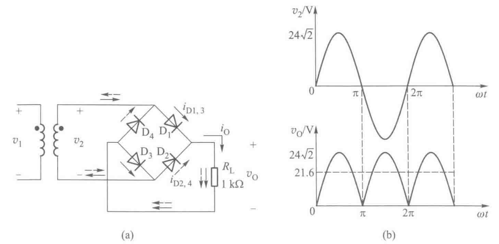
桥式整流电路（左）及变压器二次电压
v 2 v_2 v o v_o D 1 , D 3 \text{D}_1,\text{D}_3 D 2 , D 4 \text{D}_2,\text{D}_4
如图所示桥式整流电路 ，工频交流电经 变压器降压 后二次侧正弦电压 有效值为
V 2 = 24 V V_2=24\ \text{V} 负载电阻
R L = 1 k Ω R_L=1\ \text{k}\Omega 试说明正、负半周 电流路径，并估算 输出电压直流 平均值
V O V_O 二极管 承受的最大 反向峰值电压
V RM V_{\text{RM}} 课件 1103 对照）。
解。
因二次侧峰值电压
V 2 m = 24 2 ≈ 33.94 V ≫ 2 × 0.7 V V_{2m}=24\sqrt2\approx33.94\ \text{V}\gg 2\times0.7\ \text{V} 工程 上可先将四只二极管 视作理想 开关：
-
正半周 （上“+ + 下“− - 电流 从上端出发，经
D 1 → R L ( 上到下 ) → D 3 \text{D}_1 \to R_L(\text{上到下}) \to \text{D}_3 回到 下端；此时
D 2 , D 4 \text{D}_2,\text{D}_4 截止 ，各自承受的反向电压 即电源电压
v 2 v_2 反压
V RM = V 2 m = 24 2 V V_{\text{RM}}=V_{2m}=24\sqrt2\ \text{V} 负半周 （下“+ + 上“− - 电流 从下端出发，经
D 2 → R L ( 仍上到下 ) → D 4 \text{D}_2 \to R_L(\text{仍上到下}) \to \text{D}_4 回到 上端；D 1 , D 3 \text{D}_1,\text{D}_3 承受 最大反压
V RM = 24 2 V V_{\text{RM}}=24\sqrt2\ \text{V}
整个周期内负载电压 均为全波正弦脉动 波形
v o = | v 2 | = 24 2 | sin ω t | v_o=|v_2|=24\sqrt2|\sin\omega t| 缩半 为
π \pi 直流平均值 （直流分量 ）为
V O = 1 π ∫ 0 π 24 2 sin ( ω t ) d ( ω t ) = 2 2 π V 2 ≈ 0.90 V 2 = 48 2 π ≈ 21.6 V . V_O=\frac{1}{\pi}\int_0^\pi 24\sqrt2\sin(\omega t)\,d(\omega t)=\frac{2\sqrt2}{\pi}V_2\approx0.90\,V_2=\frac{48\sqrt2}{\pi}\approx21.6\ \text{V}. 补充 对比（课件
1103）：（1）若用单只二极管半波整流 ，仅半周导通 ，直流平均值 降半为
V O = 2 π V 2 ≈ 0.45 V 2 V_O=\dfrac{\sqrt2}{\pi}V_2\approx0.45\,V_2 峰值电压 仍为
V RM = 2 V 2 V_{\text{RM}}=\sqrt2\,V_2 中心 抽头双副边全波整流 ，V O ≈ 0.90 V 2 V_O\approx0.90\,V_2 截止管 因跨越两个副边绕组 须承受两倍反压
V RM = 2 2 V 2 V_{\text{RM}}=2\sqrt2\,V_2 桥式整流 后并接大容量滤波 电容
C C 输出 变为近似平稳在峰值
V 2 m V_{2m} 峰值检波器 （电容 充电时间短、通过
R L R_L 放电 ，纹波 大幅减小）；（4）若微弱毫伏信号 不能忽略二极管
0.7 V 0.7\ \text{V} 单元 的理想运放 与二极管组成精密半波整流器（Superdiode） ，靠运放 高开环增益
A A 门限 压缩到
0.7 / A ≈ μ V 0.7/A\approx\mu\text{V} v o = max ( v i , 0 ) v_o=\max(v_i,0) 精确 零死区半波整流 ！
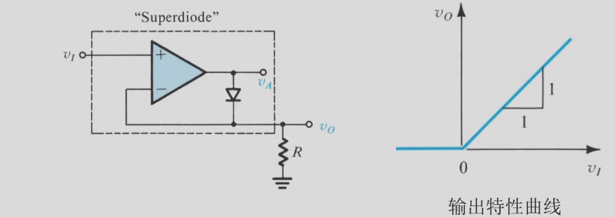
精密半波整流电路（Superdiode）及其传输特性：当
v i > 0 v_i>0 v i + V on v_i+V_{\text{on}} v o = v i v_o=v_i v i < 0 v_i<0 v o v_o
结论 6 · 三类常见整流与双向限幅电路速查
三类整流电路指标（理想二极管近似，V 2 V_2 ：
半波整流 ：V O = 2 π V 2 ≈ 0.45 V 2 V_O=\dfrac{\sqrt2}{\pi}V_2\approx0.45\,V_2 V RM = 2 V 2 V_{\text{RM}}=\sqrt2\,V_2 平均电流
I D = I O I_D=I_O 全波双绕组整流 （单相中心 抽头）：V O = 2 2 π V 2 ≈ 0.90 V 2 V_O=\dfrac{2\sqrt2}{\pi}V_2\approx0.90\,V_2 V RM = 2 2 V 2 V_{\text{RM}}=2\sqrt2\,V_2 平均电流
I D = 1 2 I O I_D=\dfrac{1}{2}I_O 桥式整流 ：V O = 2 2 π V 2 ≈ 0.90 V 2 V_O=\dfrac{2\sqrt2}{\pi}V_2\approx0.90\,V_2 V RM = 2 V 2 V_{\text{RM}}=\sqrt2\,V_2 二极管 仅导电半个周期，故平均电流
I D = 1 2 I O I_D=\dfrac{1}{2}I_O 实际硅管 还应注意两管 压降
2 V on ≈ 1.4 V 2V_{\text{on}}\approx1.4\ \text{V} 限幅与钳位判断口诀 ：二极管串联 直流电源
E E 端口 （前面串限流电阻
R R 端口 分成“二极管截止 （v o = v i v_o=v_i
直通）”与“二极管导通 （v o v_o
被钳在
E ± V on E\pm V_{\text{on}} 双向限幅 由反向并联（各自串不同参考 电压或稳压管 ）的两条钳位支路 组成，把输出波形 精确切平 在
[ V min , V max ] [V_{\min},V_{\max}] 区间内 。
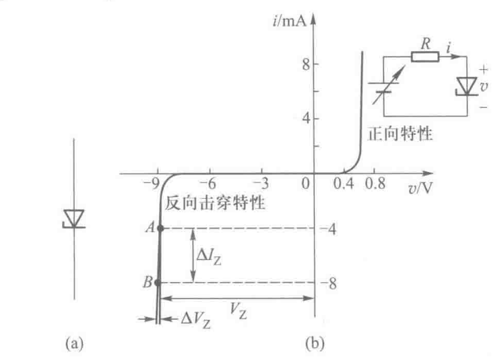
硅稳压二极管电路符号（左）与伏安特性曲线（右）：正向区与普通硅管相同；反向击穿区陡峭，I Z ∈ [ I Z min , I Z max ] I_Z\in[I_{Z\min},I_{Z\max}] V Z V_Z r z = Δ V Z / Δ I Z r_z=\Delta V_Z/\Delta I_Z
例 10 · 稳压二极管电路的三条极限约束与稳压系数
由稳压二极管
D Z \text{D}_Z 电压
V Z V_Z 电流
I Z min I_{Z\min} 功率
P Z M P_{ZM} 动态电阻
r z r_z 限流电阻
R R 并联 负载
R L R_L 基本并联稳压 电路（图见 下习题）。 已知 输入直流电 压在
[ V S min , V S max ] [V_{S\min},V_{S\max}] 波动 ，负载电流 在
[ I L min , I L max ] [I_{L\min},I_{L\max}] 变化 。写全该电路 能安全稳压 的全部约束条件 ，并推导稳压系数
S S 周金芳课件 1103）
解。
为什么必须串联限流电阻
R R 稳压管 工作在反向击穿区 时“电压 近恒、电流 剧增”。一旦电流 低于拐点
I Z min I_{Z\min} 退出击穿区 而无法稳压 ；一旦电流 超过允许 上限
I Z max = P Z M / V Z I_{Z\max}=P_{ZM}/V_Z 过热而烧毁 。电阻
R R 电压 差
V S − V Z V_S-V_Z 稳压管 的电流
I Z = I R − I L = V S − V Z R − I L I_Z=I_R-I_L=\dfrac{V_S-V_Z}{R}-I_L 安全区内 ：
I Z min < V S − V Z R − V Z R L < I Z max . I_{Z\min}<\frac{V_S-V_Z}{R}-\frac{V_Z}{R_L}<I_{Z\max}. 极端工况校核取限流电阻范围 ：
最容易退稳 （I Z I_Z
最小）：发生在输入最低
V S min V_{S\min} I L max I_{L\max} 要求
V S min − V Z R − I L max ≥ I Z min ⟹ R ≤ V S min − V Z I Z min + I L max \dfrac{V_{S\min}-V_Z}{R}-I_{L\max}\ge I_{Z\min}\implies R\le\dfrac{V_{S\min}-V_Z}{I_{Z\min}+I_{L\max}}
最容易过流 烧毁（I Z I_Z
最大）：发生在输入最高
V S max V_{S\max} I L min I_{L\min} 要求
V S max − V Z R − I L min ≤ I Z max ⟹ R ≥ V S max − V Z I Z max + I L min \dfrac{V_{S\max}-V_Z}{R}-I_{L\min}\le I_{Z\max}\implies R\ge\dfrac{V_{S\max}-V_Z}{I_{Z\max}+I_{L\min}}
小信号计算波动与稳压系数
S S 在击穿工作点附近，稳压管动态 模型为理想电压源
V Z V_Z 动态电阻
r z r_z 交流 波动通路中理想电压源
V Z V_Z 仅剩
r z ∥ R L r_z\parallel R_L 限流电阻
R R Δ V S \Delta V_S Δ V O = r z ∥ R L R + r z ∥ R L Δ V S , S = Δ V O / V O Δ V S / V S = r z ∥ R L R + r z ∥ R L ⋅ V S V O . \Delta V_O=\frac{r_z\parallel R_L}{R+r_z\parallel R_L}\,\Delta V_S,\qquad S=\frac{\Delta V_O/V_O}{\Delta V_S/V_S}=\frac{r_z\parallel R_L}{R+r_z\parallel R_L}\cdot\frac{V_S}{V_O}. r z r_z R R 输出 电压对电源波纹 的抑制能力 越强。注意：正向偏置时稳压管等同于普通硅二极管（V on ≈ 0.7 V V_{\text{on}}\approx0.7\ \text{V} ，因此反向 击穿稳压 接法必须“正极接地 （低电位 ）、负极接输出高电位 ”！
习题 14 · 桥式整流输出指标与管均流常见错误辩析
练习 · 先独立作答
在图 1.2.27(a)
所示桥式整流电路 中，设四只二极管 均为理想器件 ，变压器 一、二次绕组 匝比
n = N 1 / N 2 = 11 n=N_1/N_2=11 电压
v 1 = 220 2 sin ( 100 π t ) V v_1=220\sqrt2\sin(100\pi t)\ \text{V} 负载电阻
R L = 1 k Ω R_L=1\ \text{k}\Omega 试求：（1）负载上直流电 压
V O V_O 直流电流
I O I_O 平均电流
I D I_D 承受 的最大反向电压
V RM V_{\text{RM}} 教材习题
1.2.5）
解析
二次电压有效值
V 2 = 220 / 11 = 20 V V_2=220/11=20\ \text{V} V 2 m = 20 2 V V_{2m}=20\sqrt2\ \text{V} 直流 平均电压
V O = 2 2 π V 2 = 40 2 π ≈ 18.0 V V_O=\dfrac{2\sqrt2}{\pi}V_2=\dfrac{40\sqrt2}{\pi}\approx18.0\ \text{V} 直流电流
I O = V O / R L = 18.0 mA I_O=V_O/R_L=18.0\ \text{mA} 反压
V RM = V 2 m = 20 2 V V_{\text{RM}}=V_{2m}=20\sqrt2\ \text{V} 桥式整流 每对二极管 在每周期内只轮流导通 半个周期（占空比
1 / 2 1/2 平均电流 必为
I D = I O / 2 = 9.0 mA I_D=I_O/2=9.0\ \text{mA} 课本答案 误印成
18 mA 18\ \text{mA} 因子
1 / 2 1/2
解答
求二次侧电压参数 ：由匝比
N 1 / N 2 = 11 N_1/N_2=11 理想变压器 二次电压 为
v 2 = v 1 11 = 20 2 sin ( 100 π t ) V , V 2 = 20 V ( 有效值 ) , V 2 m = 20 2 V ( 峰值 ) . v_2=\frac{v_1}{11}=20\sqrt2\sin(100\pi t)\ \text{V},\qquad V_2=20\ \text{V}\ (\text{有效值}),\qquad V_{2m}=20\sqrt2\ \text{V}\ (\text{峰值}). 输出直流电压与负载电流 ：按桥式整流 全波平均值公式 ：
V O = 2 π V 2 m = 40 2 π ≈ 18.0 V , I O = V O R L = 18.0 V 1 k Ω = 18.0 mA . V_O=\frac{2}{\pi}V_{2m}=\frac{40\sqrt2}{\pi}\approx18.0\ \text{V},\qquad I_O=\frac{V_O}{R_L}=\frac{18.0\ \text{V}}{1\ \text{k}\Omega}=18.0\ \text{mA}. 单只二极管的平均电流
I D I_D V RM V_{\text{RM}}
正半周
0 — π 0\text{—}\pi D 1 , D 3 \text{D}_1,\text{D}_3 导通 而
D 2 , D 4 \text{D}_2,\text{D}_4 电流 为
0 0 负半周
π — 2 π \pi\text{—}2\pi D 2 , D 4 \text{D}_2,\text{D}_4 导通 而
D 1 , D 3 \text{D}_1,\text{D}_3 二极管 仅在一个周期的半个时段导电 ，其一周期内的平均电流 为负载平均值 的一半：
I D = 1 2 π ∫ 0 π V 2 m R L sin ( ω t ) d ( ω t ) = 1 2 I O = 9.0 mA . I_D=\frac{1}{2\pi}\int_0^\pi \frac{V_{2m}}{R_L}\sin(\omega t)\,d(\omega t)=\frac{1}{2}I_O=9.0\ \text{mA}. 截止管 承受的反向峰值电压 等于变压器 二次侧峰值 ：
V RM = V 2 m = 20 2 ≈ 28.3 V . V_{\text{RM}}=V_{2m}=20\sqrt2\approx28.3\ \text{V}.
纠错 提醒：教材书后习题 1.2.5 答案 将
I D I_D 18 mA 18\ \text{mA} 混淆 了总负载平均电流
I O I_O 流过 单只二极管的平均电流
I D I_D 半波整流 才满足
I D = I O I_D=I_O 桥式整流 均须除以
2 2
习题 15 · 单向与双向二极管限幅电路分析
练习 · 先独立作答
图（a）、（b）、（c）所示电路 中，输入
v i = 12 sin ω t V v_i=12\sin\omega t\ \text{V} 二极管 均为理想二极管 （V on = 0 V_{\text{on}}=0 求各电路输出
v o v_o 范围 、二极管电流 峰值
i D m i_{Dm} 承受 的最大反向峰值电压
V D R m V_{DRm} 教材习题
1.2.6）
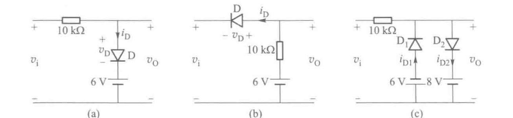
题图
1.2.6：三种二极管限幅电路。（a）并联上限幅到 6
V；（b）串联正向通过、高于 6 V 导通；（c）双向限幅钳位到 [-8 V, 6
V]。
解析
按理想二极管 “正通 反断”分阈值 讨论：（a）仅当
v i > 6 V v_i>6\ \text{V} 导通 钳位
v o = 6 V v_o=6\ \text{V} v o = v i v_o=v_i i D m = ( 12 − 6 ) / 10 k Ω = 0.6 mA i_{Dm}=(12-6)/10\ \text{k}\Omega=0.6\ \text{mA} V D R m = 6 − ( − 12 ) = 18 V V_{DRm}=6-(-12)=18\ \text{V} （b）注意二极管箭头 向左（阳极 接
v o v_o 阴极 接
v i v_i v i < 6 V v_i<6\ \text{V} 导通 得
v o = v i v_o=v_i i D m = ( 6 − ( − 12 ) ) / 10 k Ω = 1.8 mA i_{Dm}=(6-(-12))/10\ \text{k}\Omega=1.8\ \text{mA} v i ≥ 6 V v_i\ge6\ \text{V} 截止 得
v o = 6 V v_o=6\ \text{V} V D R m = 12 − 6 = 6 V V_{DRm}=12-6=6\ \text{V} （c）双向限幅 ：v o v_o [ − 8 V , + 6 V ] [-8\ \text{V},+6\ \text{V}] i D 1 m = 0.6 mA , i D 2 m = 0.4 mA i_{D1m}=0.6\ \text{mA},i_{D2m}=0.4\ \text{mA} 两管 反压各达
14 V 14\ \text{V}
解答
图（a）并联上限幅电路 ：
当
v i > 6 V v_i>6\ \text{V} 导通 ，v o = 6 V v_o=6\ \text{V} 二极管峰值 电流出现在
v i = + 12 V v_i=+12\ \text{V} i D m = 12 − 6 10 k Ω = 0.6 mA . i_{Dm}=\frac{12-6}{10\ \text{k}\Omega}=0.6\ \text{mA}.
当
v i ≤ 6 V v_i\le6\ \text{V} 10 k Ω 10\ \text{k}\Omega 电流 ，故
v o = v i v_o=v_i 反压 出现在负峰值
v i = − 12 V v_i=-12\ \text{V} v D = v o − 6 = v i − 6 v_D=v_o-6=v_i-6 V D R m = 6 − ( − 12 ) = 18 V . V_{DRm}=6-(-12)=18\ \text{V}.
图（b）串联下限幅电路 ：仔细核对题图（b）二极管朝向与电阻位置——二极管
D 阴极朝左接
v i v_i v o v_o （注意
v D v_D v o v_o 10 k Ω 10\ \text{k}\Omega + 6 V +6\ \text{V}
当
v i < 6 V v_i<6\ \text{V} + 6 V +6\ \text{V} 电位 高于左端
v i v_i 导通 （把
v o v_o 拉低 跟随
v i v_i v o = v i v_o=v_i 电流 从右向左流经
D！）；负峰值
v i = − 12 V v_i=-12\ \text{V} i D m i_{Dm} i D m = 6 − ( − 12 ) 10 k Ω = 18 10 k Ω = 1.8 mA . i_{Dm}=\frac{6-(-12)}{10\ \text{k}\Omega}=\frac{18}{10\ \text{k}\Omega}=1.8\ \text{mA}.
当
v i ≥ 6 V v_i\ge6\ \text{V} 电位 高于
+ 6 V +6\ \text{V} 截止 ，10 k Ω 10\ \text{k}\Omega 电流 为零，故
v o = + 6 V v_o=+6\ \text{V} 限幅 ！）。正峰值
v i = + 12 V v_i=+12\ \text{V} 时二极管 承受最大反压 ：
V D R m = 12 − 6 = 6 V . V_{DRm}=12-6=6\ \text{V}.
（注意读图 先看清三角形箭头 朝向！ （b）中二极管箭头 指向左边！）
图（c）双向限幅电路 ：D 1 \text{D}_1 v o v_o + 6 V +6\ \text{V} D 2 \text{D}_2 v o v_o − 8 V -8\ \text{V} D 2 \text{D}_2 − 8 V -8\ \text{V}
当
v i > 6 V v_i>6\ \text{V} D 1 \text{D}_1 （D 2 \text{D}_2
截止），v o = 6 V v_o=6\ \text{V} i D 1 m = 12 − 6 10 k Ω = 0.6 mA i_{D1m}=\dfrac{12-6}{10\ \text{k}\Omega}=0.6\ \text{mA}
当
v i < − 8 V v_i<-8\ \text{V} D 2 \text{D}_2 （D 1 \text{D}_1
截止），v o = − 8 V v_o=-8\ \text{V} i D 2 m = − 8 − ( − 12 ) 10 k Ω = 0.4 mA i_{D2m}=\dfrac{-8-(-12)}{10\ \text{k}\Omega}=0.4\ \text{mA}
当
− 8 V ≤ v i ≤ 6 V -8\ \text{V}\le v_i\le6\ \text{V} 截止 ，v o = v i v_o=v_i
最大反压 ：负峰
v o = − 8 V v_o=-8\ \text{V} D 1 \text{D}_1 6 − ( − 8 ) = 14 V 6-(-8)=14\ \text{V} v o = + 6 V v_o=+6\ \text{V} D 2 \text{D}_2 6 − ( − 8 ) = 14 V 6-(-8)=14\ \text{V} 书后参考答案
0.6 mA , 18 V ; 1.8 mA , 6 V ; 0.6 mA , 0.4 mA , 14 V , 14 V 0.6\ \text{mA},18\ \text{V};\ 1.8\ \text{mA},6\ \text{V};\ 0.6\ \text{mA},0.4\ \text{mA},14\ \text{V},14\ \text{V} 完全一致 。）
习题 16 ·
稳压二极管电路的电流分配、波动计算与安全边界
练习 · 先独立作答
如图电路 中，稳压二极管 2CW16 的稳定电压
V Z = 9 V V_Z=9\ \text{V} 功率
P Z M = 250 mW P_{ZM}=250\ \text{mW} 稳压电流 下限
I Z min = 1 mA I_{Z\min}=1\ \text{mA} 动态电阻
r z ≤ 20 Ω r_z\le20\ \Omega 已知
V I = 20 V V_I=20\ \text{V} R = 510 Ω R=510\ \Omega R L = 1 k Ω R_L=1\ \text{k}\Omega 标称 输入下
I R I_R I Z I_Z I L I_L 电源电压
V I V_I ± 20 % \pm20\% 不利
r z = 20 Ω r_z=20\ \Omega 计算 输出电压 变化量
Δ V O \Delta V_O 变化率
Δ V O / V O \Delta V_O/V_O 校核 波动期间稳压管 是否一直安全 工作在稳压区 。（教材习题
1.2.10）
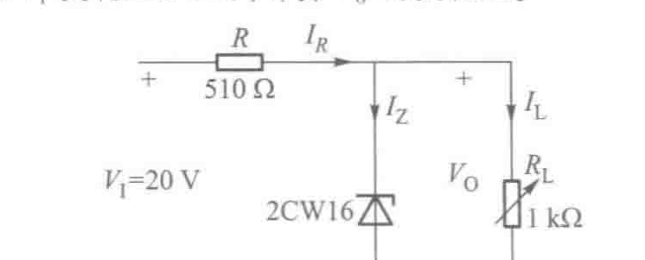
题图 1.2.10 电路：20 V 电源经 510 Ω
限流电阻接入 2CW16 稳压管与 1 kΩ 负载电阻并联支路。
解析
（1）由
V O ≈ V Z = 9 V V_O\approx V_Z=9\ \text{V} I R = ( 20 − 9 ) / 510 ≈ 21.6 mA I_R=(20-9)/510\approx21.6\ \text{mA} I L = 9 / 1 k Ω = 9.0 mA I_L=9/1\ \text{k}\Omega=9.0\ \text{mA} I Z = I R − I L ≈ 12.6 mA I_Z=I_R-I_L\approx12.6\ \text{mA} Δ V I = ± 4 V \Delta V_I=\pm4\ \text{V} R R r z ∥ R L ≈ 19.6 Ω r_z\parallel R_L\approx19.6\ \Omega 分压 得
Δ V O ≈ ± 148 mV \Delta V_O\approx\pm148\ \text{mV} 波动
± 1.64 % \pm1.64\% 电流 上限
I Z max = 250 / 9 ≈ 27.8 mA I_{Z\max}=250/9\approx27.8\ \text{mA} V I = 16 — 24 V V_I=16\text{—}24\ \text{V} I Z ∈ [ 4.7 , 20.4 ] mA I_Z\in[4.7,20.4]\ \text{mA} 安全 落在
[ 1 mA , 27.8 mA ] [1\ \text{mA},27.8\ \text{mA}]
解答
静态电流分配 （假设工作在稳压区 ，V O ≈ V Z = 9 V V_O\approx V_Z=9\ \text{V} I R = V I − V Z R = 20 − 9 510 Ω ≈ 21.57 mA , I L = V Z R L = 9 V 1 k Ω = 9.00 mA , I_R=\frac{V_I-V_Z}{R}=\frac{20-9}{510\ \Omega}\approx21.57\ \text{mA},\qquad I_L=\frac{V_Z}{R_L}=\frac{9\ \text{V}}{1\ \text{k}\Omega}=9.00\ \text{mA}, I Z = I R − I L ≈ 21.57 − 9.00 = 12.57 mA ( 约 12.6 mA ) . I_Z=I_R-I_L\approx21.57-9.00=12.57\ \text{mA}\ (\text{约 }12.6\ \text{mA}). 电源波动
± 20 % \pm20\% ：输入变化 量
Δ V I = ± 20 % × 20 V = ± 4 V \Delta V_I=\pm20\%\times20\ \text{V}=\pm4\ \text{V} 交流 波动等效电阻 为
r z ∥ R L = 20 ∥ 1000 ≈ 19.61 Ω r_z\parallel R_L=20\parallel1000\approx19.61\ \Omega 微变分 压公式（注意分母 写全
R + r z ∥ R L R+r_z\parallel R_L Δ V O = Δ V I ⋅ r z ∥ R L R + r z ∥ R L = ± 4 V × 19.61 510 + 19.61 ≈ ± 0.1481 V = ± 148 mV , \Delta V_O=\Delta V_I\cdot\frac{r_z\parallel R_L}{R+r_z\parallel R_L}=\pm4\ \text{V}\times\frac{19.61}{510+19.61}\approx\pm0.1481\ \text{V}=\pm148\ \text{mV}, Δ V O V O = ± 0.148 V 9 V ≈ ± 1.64 % . \frac{\Delta V_O}{V_O}=\frac{\pm0.148\ \text{V}}{9\ \text{V}}\approx\pm1.64\%. 安全工作区校核 ：最大允许稳压电流
I Z max = P Z M V Z = 250 mW 9 V ≈ 27.8 mA I_{Z\max}=\dfrac{P_{ZM}}{V_Z}=\dfrac{250\ \text{mW}}{9\ \text{V}}\approx27.8\ \text{mA}
当
V I V_I 最低
16 V 16\ \text{V} I Z ≈ 16 − 9 0.51 − 9 = 13.73 − 9 = 4.73 mA > I Z min = 1 mA I_Z\approx\dfrac{16-9}{0.51}-9=13.73-9=4.73\ \text{mA}>I_{Z\min}=1\ \text{mA} 退稳 ；
当
V I V_I 升至 最高
24 V 24\ \text{V} I Z ≈ 24 − 9 0.51 − 9 = 29.41 − 9 = 20.41 mA < I Z max = 27.8 mA I_Z\approx\dfrac{24-9}{0.51}-9=29.41-9=20.41\ \text{mA}<I_{Z\max}=27.8\ \text{mA} 过流 烧毁。
(同时也可看到稳压系数
S = 1.64 % 20 % ≈ 0.082 S=\dfrac{1.64\%}{20\%}\approx0.082
更多课本习题 · 第一篇第 2 章 §1.2.1—1.2.2（二极管部分，题 1.2.1—1.2.10）
本组各题均按大信号模型/理想开关模型 ＋
假设验证法 求解；已在正文 作为独立习题 详讲的题目 此处标明 位置，其余题逐题 给出要点 与核对结果：
习题 1.2.1 （锗二极管伏安 特性及
R = 300 Ω , V S = 0.6 V R=300\ \Omega,V_S=0.6\ \text{V} R = 150 Ω , V S = 0.9 V R=150\ \Omega,V_S=0.9\ \text{V} 图解 工作点）：(1) 直接正接
1.5 V 1.5\ \text{V} 电池 因正向过流 而烧毁；(2) 反接
30 V 30\ \text{V} 耐压 （图题 1.2.1 约
− 25 V -25\ \text{V} 反向 击穿损坏；(3)(4)
连结
( V S , 0 ) (V_S,0) ( 0 , V S / R ) (0,V_S/R) 交点
R D = V D / I D ≈ 0.3 k Ω R_D=V_D/I_D\approx0.3\ \text{k}\Omega V S = 0.6 V_S=0.6 0.3 k Ω 0.3\ \text{k}\Omega 0.1 k Ω 0.1\ \text{k}\Omega 原理 同正文
2.1 节习题 10）。习题 1.2.2 （硅二极管伏安 特性及
V S = 0.9 V , R = 300 Ω V_S=0.9\ \text{V},R=300\ \Omega V S = 2.0 V , R = 400 Ω V_S=2.0\ \text{V},R=400\ \Omega 工作 点与
R D , r d R_D,r_d 正接
1.5 V 1.5\ \text{V} 反接
100 V 100\ \text{V} 反向 击穿；(3)
R D ≈ 0.61 k Ω , r d ≈ 26 Ω R_D\approx0.61\ \text{k}\Omega,r_d\approx26\ \Omega I D ≈ 1 mA I_D\approx1\ \text{mA} R D ≈ 225 Ω , r d ≈ 8.1 Ω R_D\approx225\ \Omega,r_d\approx8.1\ \Omega I D ≈ 3.2 mA I_D\approx3.2\ \text{mA} 原理 同
2.1 节习题 10）。习题 1.2.3 （图题 1.2.3
三组电阻 下的二极管 通断与电流）：已在上文 2.2 节习题 11
作完整解答 （0.42 mA , 0 , 0 0.42\ \text{mA},0,0 习题 1.2.4 （同图题
1.2.3，R 1 = R 2 = 3 k Ω R_1=R_2=3\ \text{k}\Omega 电源电压 ）：戴维宁电压
V th = ( V C C 1 − V C C 2 ) / 2 V_{\text{th}}=(V_{CC1}-V_{CC2})/2 R th = 1.5 k Ω R_{\text{th}}=1.5\ \text{k}\Omega V C C 1 = 8 V , V C C 2 = 4 V ⟹ V th = 2 V > 0.7 V V_{CC1}=8\ \text{V},V_{CC2}=4\ \text{V}\implies V_{\text{th}}=2\ \text{V}>0.7\ \text{V} I D = 2 − 0.7 1.5 k Ω ≈ 0.87 mA I_D=\dfrac{2-0.7}{1.5\ \text{k}\Omega}\approx0.87\ \text{mA} V C C 1 = V C C 2 = 6 V ⟹ V th = 0 V V_{CC1}=V_{CC2}=6\ \text{V}\implies V_{\text{th}}=0\ \text{V} I D = 0 I_D=0 V C C 1 = 6 V , V C C 2 = 8 V ⟹ V th = − 1 V V_{CC1}=6\ \text{V},V_{CC2}=8\ \text{V}\implies V_{\text{th}}=-1\ \text{V} I D = 0 I_D=0 习题 1.2.5 （桥式整流 计算与书答漏因子
1 / 2 1/2 习题 14
作完整解答 （V O = 18.0 V , I O = 18 mA , I D = 9 mA , V RM = 20 2 V V_O=18.0\ \text{V},I_O=18\ \text{mA},I_D=9\ \text{mA},V_{\text{RM}}=20\sqrt2\ \text{V} 习题 1.2.6 （三种单向与双向限幅 电路）：已在上文 2.3
节习题 15 作完整解答。习题
1.2.7 （硅管二极管 与门电路，+ 10 V , R = 2 k Ω +10\ \text{V},R=2\ \text{k}\Omega 方波
0 / 5 V 0/5\ \text{V} 原理 ，只要
v A v_A v B v_B 0 V 0\ \text{V} v o = 0.7 V v_o=0.7\ \text{V} v A = v B = 5 V v_A=v_B=5\ \text{V} 时段 输出才跳为
v o = 5.7 V v_o=5.7\ \text{V} 时段 保持
0.7 V 0.7\ \text{V} 习题 1.2.8 （图题 1.2.7
四种输入 连接下的输出电压 ）：已在上文 2.2 节习题 13 作完整解答。习题
1.2.9 （稳压管双向限幅 ，v I = ( 3 + 10 sin ω t ) V v_I=(3+10\sin\omega t)\ \text{V} V Z 1 = 5 V , V Z 2 = 7 V , V on = 0.7 V V_{Z1}=5\ \text{V},V_{Z2}=7\ \text{V},V_{\text{on}}=0.7\ \text{V} 反串 接（按实图
D Z 1 \text{D}_{Z1} 箭头 朝下即阴极 朝下，D Z 2 \text{D}_{Z2} 箭头 朝上即阴极 朝上）：正半周
v I > 0 v_I>0 D Z 1 \text{D}_{Z1} 正向导通 （0.7 V 0.7\ \text{V} 且
D Z 2 \text{D}_{Z2} 反向 击穿（V Z 2 = 7 V V_{Z2}=7\ \text{V} 上限幅 在
+ ( V Z 2 + 0.7 ) = + 7.7 V +(V_{Z2}+0.7)=+7.7\ \text{V} 负半周
v I < 0 v_I<0 D Z 2 \text{D}_{Z2} 正向导通 （0.7 V 0.7\ \text{V} 且
D Z 1 \text{D}_{Z1} 反向 击穿（V Z 1 = 5 V V_{Z1}=5\ \text{V} 下限 幅在
− ( V Z 1 + 0.7 ) = − 5.7 V -(V_{Z1}+0.7)=-5.7\ \text{V} v I ∈ [ − 7 , + 13 ] V v_I\in[-7,+13]\ \text{V} 触发 削波，仅
v I ∈ [ − 5.7 , + 7.7 ] V v_I\in[-5.7,+7.7]\ \text{V} 截流
i Z = 0 , v o = v I i_Z=0,v_o=v_I 阴极 均朝上：正半周 两者均反向稳压 ，先被稳压值 较低的
D Z 1 \text{D}_{Z1} + 5 V +5\ \text{V} D Z 2 \text{D}_{Z2} 不到
7 V 7\ \text{V} 负半周 两者同时正偏导通 ，并行钳位 在
− 0.7 V -0.7\ \text{V} 平分电流 ）。习题 1.2.10 （2CW16 稳压管稳压 电路与
± 20 % \pm20\% 在上文 2.3 节习题 16 作完整解答。
二极管 只有两个端子 ，只能做开关 、整流或限幅 ，不能用微弱 控制电流 去支配更大的电源功率 。结背靠背 极薄地做在同一块半导体基片 上，就得到了三端有源器件 ——双极型晶体管（BJT，简称三极管） 。本单元 按《集成电子技术 基础教程》§1.2.3、第
3 章（§1.3.1—1.3.5）和第 2.1.4 节耦合 概念，结合周金芳老师 11 月 5 日—12
日课堂内容 ，覆盖 BJT
直流工作区 、分压偏置与图解法 、微变等效电路 与单管三种基本组态 （重点 讲透期末真题
f2526 一(10) 的无旁路电容
R e R_e
共射放大器 ），最后衔接 多级放大 与镜像电流源。
3.1 BJT
结构、载流子传输与三区工作判断
例 11 · 由三端对地电位反推 BJT
管型（NPN/PNP）与各电极
测得某放大 电路中处于 放大状态 的硅 BJT 三个引脚
A、B、C 的对地直流电 位分别为：
V A = − 9 V , V B = − 6 V , V C = − 6.7 V . V_A=-9\ \text{V},\qquad V_B=-6\ \text{V},\qquad V_C=-6.7\ \text{V}. 判断 A、B、C 分别对应 基极 b、发射极 e 还是集电极 c，并说明该管是 NPN
型还是 PNP 型。（周金芳课件 1105 例 CH07-KP1-02，同教材习题
1.2.11 思路）
解。
处于放大状态 的硅 BJT 必须同时满足 发射结
J e J_e （| V B E | ≈ 0.7 V |V_{BE}|\approx0.7\ \text{V} 且集电结
J c J_c ，其直流规律 可立即用于 “抓引脚 ”： 1. 找差
0.7 V 0.7\ \text{V} ：比较三对电压 差，仅
V B − V C = − 6 − ( − 6.7 ) = + 0.7 V V_B-V_C=-6-(-6.7)=+0.7\ \text{V} | V B − V C | = 0.7 V |V_B-V_C|=0.7\ \text{V} 发射极 e 与基极 b（至于谁是 b、谁是 e，由第 3
个电极 决定），A 必为集电极 c 。 2.
用第三极电位定 NPN 还是 PNP ：A 极电位
− 9 V -9\ \text{V} 最高 为
− 6 V -6\ \text{V} 放大状态 ，集电极电流 只能从最高电位流向 最低电位 ：
- 若为 NPN 管，集电极 c 须是三极中电位最高 者； - 若为
PNP 管 ，集电极 c
须是三极中电位最低 者。 因此该管必为 PNP
型硅管 ！ 3. 验证发射结正偏（P 区高于 N 区
0.7 V 0.7\ \text{V} ：PNP
管的发射区 是 P、基区 是 N，放大 时要求
V E > V B V_E>V_B V E − V B ≈ 0.7 V V_E-V_B\approx0.7\ \text{V} V B = − 6 V > V C = − 6.7 V V_B=-6\ \text{V}>V_C=-6.7\ \text{V} B 为发射极
e（− 6 V -6\ \text{V} C
为基极
b（− 6.7 V -6.7\ \text{V} A
为集电极
c（− 9 V -9\ \text{V} 。检验 结偏压：V E B = 0.7 V > 0 V_{EB}=0.7\ \text{V}>0 J e J_e 集电结
J c J_c 基区 N 高于集电区 P 达
V B C = − 6.7 − ( − 9 ) = + 2.3 V > 0 V_{BC}=-6.7-(-9)=+2.3\ \text{V}>0 J c J_c 自洽 。
定义 6 · BJT
内部结构、电路符号与放大状态电流分配关系
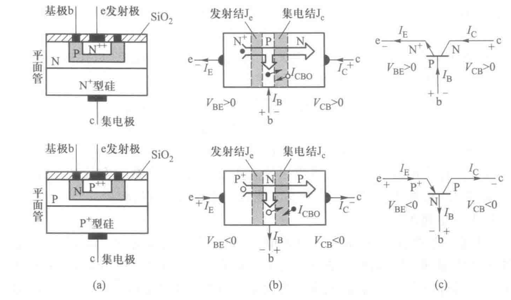
NPN 型与 PNP
型平面管结构、放大状态内部载流子传输及电路符号（教材图
1.2.35）：发射极箭头始终表示发射结正偏时管内实际电流方向（NPN 流出
e、PNP 流入 e）。
为什么工艺结构必须不对称（且为何叫“双极型”）？ 由图可见，BJT
内部含发射区、基区、集电区及发射结
J e J_e J c J_c
发射区高掺杂 ：提供海量 待注入的多子；基区极薄（仅几微米）且低掺杂 ：使注入基区 的非平衡少子 几乎来不及 复合就扩散到集电结边缘 （因而发射极 与集电极不可互换使用 ）；集电区面积大且掺杂较低 ：耐压 高，便于 强反偏电场 高效地把扩散 过来的载流子 悉数拉收集成
I C I_C 双极（Bipolar） ：电子 和空穴两种极性的载流子 都参与导电过程 （对比后续课程 的
MOSFET 属单极 型器件）。 放大状态下的三大电流关系 （参考方向 均取流入集电极 /基极、流出 发射极，NPN
与 PNP 对偶反号 ）：
I E = I C + I B , I C = β I B , I E = ( 1 + β ) I B , α = β 1 + β ( 或 β = α 1 − α ) . I_E=I_C+I_B,\qquad I_C=\bar\beta I_B,\qquad I_E=(1+\bar\beta)I_B,\qquad \alpha=\frac{\bar\beta}{1+\bar\beta}\ \Big(\text{或 }\bar\beta=\frac{\alpha}{1-\alpha}\Big).
更本质的物理机制 是基射电压
v B E v_{BE} （电压 控制电流，再伴生小基极 复合/反注电流
i B = i C / β i_B=i_C/\beta i C = I S e v B E / V T , I C E O = ( 1 + β ) I C B O . i_C=I_Se^{v_{BE}/V_T},\qquad I_{CEO}=(1+\bar\beta)I_{CBO}.
其中
α ≈ 0.98 — 0.995 \alpha\approx0.98\text{—}0.995 直流电流 放大系数，β \bar\beta 直流电流 放大系数（工程 通常在
50 — 200 50\text{—}200 不计细微差别 时常与交流
β \beta 统一 记为
β \beta I C B O I_{CBO} 发射极开路时 集电结反向漏电流 ，I C E O I_{CEO} 基极开路时 的穿透电流（常温硅管 很小常忽略，高温下会显著增大 ）。
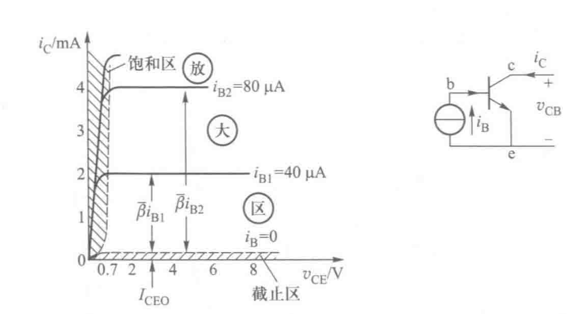
NPN
型硅晶体管共射极输出特性曲线与三区划分：横轴为
v C E v_{CE} i C i_C i B i_B v C E ≤ 0.7 V v_{CE}\le0.7\ \text{V} （i B ≤ 0 i_B\le0 （教材图
1.2.39）。
定义 7 · BJT 的三个工作区与中/英教材判据对照
按发射结
J e J_e 集电结
J c J_c 组合 ，BJT 的工作 状态分为三区 （NPN 硅管 为例，PNP
所有电位不等号 反向即可）：
工作区
J e J_e J c J_c 核心伏安特征
国内教材判据（《集成电子》）
英文教材/课件对照（Razavi / 课件 1105）
截止区 反偏（或零偏）
反偏
I B = 0 , I C ≈ 0 I_B=0,\ I_C\approx0 V B E ≤ 0.5 V V_{BE}\le0.5\ \text{V} J e J_e v B E < 0.5 — 0.7 V v_{BE}<0.5\text{—}0.7\ \text{V}
放大区 正偏
反偏
V B E ≈ 0.7 V , I C = β I B V_{BE}\approx0.7\ \text{V},\ I_C=\beta I_B V B E ≈ 0.7 V V_{BE}\approx0.7\ \text{V} V C E > V C E S ( 0.7 V ) V_{CE}>V_{CES}\ (0.7\ \text{V}) v B E ≈ 0.7 V v_{BE}\approx0.7\ \text{V} v B C < 0.4 V ⇔ v C E > 0.3 V v_{BC}<0.4\ \text{V}\iff v_{CE}>0.3\ \text{V}
饱和区 正偏
正偏
c-e
间呈低阻压降，I C < β I B I_C<\beta I_B β \beta
V C E ≤ 0.7 V V_{CE}\le0.7\ \text{V} V C E S ≈ 0.3 V V_{CES}\approx0.3\ \text{V} 0.1 V 0.1\ \text{V} v B C > 0.4 — 0.5 V ⇔ v C E < 0.2 — 0.3 V v_{BC}>0.4\text{—}0.5\ \text{V}\iff v_{CE}<0.2\text{—}0.3\ \text{V} v C E , sat = 0.2 V v_{CE,\text{sat}}=0.2\ \text{V}
特别注意：若
J e J_e J c J_c 倒置状态 ，电流放大 能力极差，一般不用于放大 电路。
结论 7 · Early 效应（基区宽度调制效应）与输出电阻
r c e r_{ce}
实际 共射输出特性曲线在放大区 并非绝对水平 ，而是随
v C E v_{CE} 增大 略微上翘，称为 Early 效应 （周金芳课件 1105_2—1110
重点 推导）：随着集射电压
v C E v_{CE} 集电结
J c J_c 耗尽 区变宽，有效基区宽度
W W 基区少子 浓度梯度增大 且复合减少，于是相同
v B E v_{BE} i C i_C v C E v_{CE} 线性 微增：
i C = I S e v B E / V T ( 1 + v C E V A ) , r c e ( 或 r o ) = ( ∂ i C ∂ v C E ) − 1 ≈ V A I C Q . i_C=I_Se^{v_{BE}/V_T}\!\left(1+\frac{v_{CE}}{V_A}\right),\qquad r_{ce}\ (\text{或 }r_o)=\left(\frac{\partial i_C}{\partial v_{CE}}\right)^{-1}\approx\frac{V_A}{I_{CQ}}. 其中
V A V_A 厄尔利电压 （通常
50 — 150 V 50\text{—}150\ \text{V} 特性线 反向延长必在横轴 交于
− V A -V_A r c e r_{ce} 分立阻容放大 手算 中常因远大于集电极 负载电阻
R c R_c V A → ∞ V_A\to\infty 有源负载 电路（3.4
节 ）中是决定高输出电阻 的关键参数。
习题 17 · 由对地电位判别 BJT
管型、材料、工作状态与损坏结
练习 · 先独立作答
测得电路 中四只晶体管 三个电极（左为基极 b、上为集电极 c、下为发射极
e）对地直流电 位如下（括号 内为晶体管型号 标注）： -
（a）3DK2B：V b = 2.73 V , V c = 2.3 V , V e = 2 V V_b=2.73\ \text{V},\ V_c=2.3\ \text{V},\ V_e=2\ \text{V}
-
（b）3AX31C：V b = − 0.3 V , V c = − 5 V , V e = 0 V V_b=-0.3\ \text{V},\ V_c=-5\ \text{V},\ V_e=0\ \text{V} 3AG24：V b = 3 V , V c = 12 V , V e = 0 V V_b=3\ \text{V},\ V_c=12\ \text{V},\ V_e=0\ \text{V}
-
（d）3DG8C：V b = − 7.8 V , V c = − 3 V , V e = − 8.5 V V_b=-7.8\ \text{V},\ V_c=-3\ \text{V},\ V_e=-8.5\ \text{V} 题图 （d）将晶体管 倒置绘制，带箭头的发射极 在上方、集电极 在下方）。
按电压 关系逐只判断 ：（1）NPN 型还是 PNP
型；（2）硅管 还是锗管；（3）处于放大 、饱和、截止 中的哪种状态，抑或某个
PN 结已烧断/短路 ？（教材习题 1.2.11 精选四问）
解析
判断规律 ：在放大区 ，硅管
| V B E | ≈ 0.7 V |V_{BE}|\approx0.7\ \text{V} | V B E | ≈ 0.2 — 0.3 V |V_{BE}|\approx0.2\text{—}0.3\ \text{V} | V C E | > 0.7 V |V_{CE}|>0.7\ \text{V} 饱和区
| V C E | ≤ 0.7 V |V_{CE}|\le0.7\ \text{V} | V B E | |V_{BE}| 0.7 V 0.7\ \text{V} 管子 无破坏电流 说明发射结已开路 （烧断）。结论：（a）NPN
硅管，饱和；（b）PNP 锗管，放大；（c）PNP 锗高频管，发射结
J e J_e
解答
先按三极电位差 和半导体材料压降 （硅
0.7 V 0.7\ \text{V} 0.3 V 0.3\ \text{V} 校验 （对照教材图题
1.2.11 发射极箭头 朝向与电位 标注）：
（a）3DK2B （NPN
符号）：V B E = 2.73 − 2 = 0.73 V ≈ 0.7 V V_{BE}=2.73-2=0.73\ \text{V}\approx0.7\ \text{V} 硅管、NPN
型 ，发射结 正偏），而
V C E = 2.3 − 2 = 0.3 V < 0.7 V V_{CE}=2.3-2=0.3\ \text{V}<0.7\ \text{V} V B C = 2.73 − 2.3 = + 0.43 V > 0 V_{BC}=2.73-2.3=+0.43\ \text{V}>0 集电结 也正偏）。故处于饱和状态 。（b）3AX31C （PNP
符号）：V E B = 0 − ( − 0.3 ) = 0.3 V V_{EB}=0-(-0.3)=0.3\ \text{V} 锗管、PNP
型 ，发射结 正偏），V E C = 0 − ( − 5 ) = 5 V > 0.7 V V_{EC}=0-(-5)=5\ \text{V}>0.7\ \text{V} V B C = − 0.3 − ( − 5 ) = + 4.7 V V_{BC}=-0.3-(-5)=+4.7\ \text{V} J c J_c 放大状态 。（c）3AG24 （PNP
符号，实为 锗高频小功率管 ）：V b = 3 V V_b=3\ \text{V} V e = 0 V V_e=0\ \text{V} 3 V 3\ \text{V} 发射结 正偏的电路 中出现高达
3 V 3\ \text{V} 反向 压降且同时
V c = + 12 V V_c=+12\ \text{V} 远高于基极 ，说明发射结
J e J_e 。（d）3DG8C （注意图题 1.2.11(d) 将 NPN
符号 上下倒画，带向外箭头 的发射极在上方标
− 8.5 V -8.5\ \text{V} 集电极 在下方标
− 3 V -3\ \text{V} V B E = − 7.8 − ( − 8.5 ) = + 0.7 V V_{BE}=-7.8-(-8.5)=+0.7\ \text{V} 硅管、NPN
型 ，发射结 正偏），V C E = − 3 − ( − 8.5 ) = + 5.5 V > 0.7 V V_{CE}=-3-(-8.5)=+5.5\ \text{V}>0.7\ \text{V} 集电结 反偏
V B C = − 4.8 V < 0 V_{BC}=-4.8\ \text{V}<0 放大状态 。
习题 18 · BJT 器件特性、NPN/PNP
对比与受控源本质辨析（思考题）
练习 · 先独立作答
判断 下列说法是否正确 并简要说明原因 ：（1）同一电路 中的 NPN 管与 PNP
管，直流偏置极性 和电压/电流方向相反 ，因此交流小信号微变 等效电路也要全部反号 ；放大状态 下
BJT 既可看作
i C = β i B i_C=\beta i_B 电流源 ，也可看作
i C = I S e v B E / V T i_C=I_Se^{v_{BE}/V_T} 电流源 ，两种小信号模型 在推导上等价 ；（3）把三极管 的集电结与发射结 对调（即互换
c 极和 e 极），管子 仍可获得完全相同的放大 倍数
β \beta
解析
（1）错：交流小信号模型 描述的是变化 量
Δ i C \Delta i_C Δ v b e \Delta v_{be} Δ i b \Delta i_b 斜率 关系，NPN 与 PNP
的小信号等效电路拓扑与符号方向完全一致 （如周金芳
1105_2/1110 强调）；（2）对：基极小信号电流
Δ i b \Delta i_b 电压
Δ v b e \Delta v_{be} 输入电阻
r b e r_{be} r π r_\pi β i b = g m v b e \beta i_b=g_m v_{be} 发射区高掺杂 而集电区低掺杂 、面积 不对称，倒置 使用时反向
β R \beta_R 0.1 — 2 0.1\text{—}2 放大 。
解答
错误 。NPN 与 PNP
管仅在直流静态工作点 的电压极性 与电流实际流向相反 ；小信号 微变模型 反映的是工作 点附近的增量 变化量（如从
b 流向 e 的增量
i b i_b 流向 e 的增量
i c = β i b i_c=\beta i_b 电流 减小同样对应 于从 c 流向 e 的正增量 ），因此 NPN 与
PNP 管的交流微变等效模型完全相同 。正确 。物理上发射结 正偏电压
v B E v_{BE} 指数 支配注入少子 形成
i C = I S e v B E / V T i_C=I_Se^{v_{BE}/V_T} 微变 斜率即跨导
g m = I C Q / V T g_m=I_{CQ}/V_T π \pi 电流源
g m v b e g_mv_{be} 电路端口 表现上复合 与反注形成比例电流
i B = i C / β i_B=i_C/\beta 基极电流 着眼又写成 流控电流源
β i b \beta i_b 两者 通过
v b e = i b r π v_{be}=i_b r_\pi 等价 （参见 3.3 节模型 对照）。错误 。BJT 结构高度 不对称，c 与 e
互换 后进入倒置模式 ，收集效率 骤降，不能互换 。
3.2 偏置电路、直流通路与静态工作点
Q Q
要让晶体管 把交流输入信号 忠实地放大 而不产生 非线性削波失真 ，必须先靠直流偏置电路 把晶体管稳稳 固定在放大区 的某个合适 静态工作点
Q ( I B Q , I C Q , V C E Q ) Q(I_{BQ},I_{CQ},V_{CEQ})
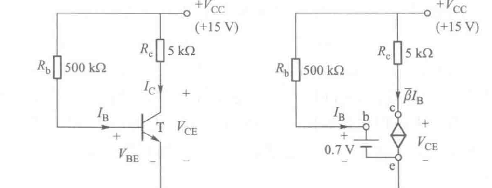
放大状态直流通路与直流模型：将交流置零（隔直电容开路）后，把放大态
BJT 替换为
0.7 V 0.7\ \text{V} β I B \bar\beta I_B
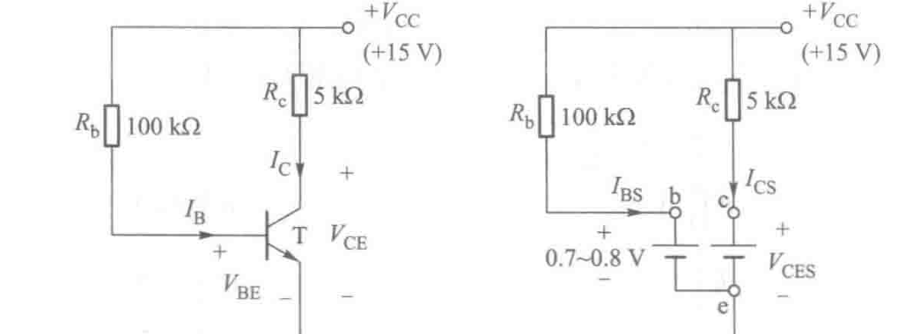
饱和状态验证与重算模型：若先按放大假设算出
V C E < 0.7 V V_{CE}<0.7\ \text{V} V C E Q = V C E S ≈ 0.3 V V_{CEQ}=V_{CES}\approx0.3\ \text{V} I C = β I B I_C=\beta I_B
例 12 · 先假定放大再验
V C E V_{CE}
如图两电路 中均为 NPN 硅
BJT，β = 50 \bar\beta=50 V C C = 15 V V_{CC}=15\ \text{V} V B E = 0.7 V V_{BE}=0.7\ \text{V} V C E S = 0.3 V V_{CES}=0.3\ \text{V} R c = 5 k Ω R_c=5\ \text{k}\Omega 仅基极偏置电阻 不同：（1）图
1.2.46 中
R b = 500 k Ω R_b=500\ \text{k}\Omega 减小
R b R_b 100 k Ω 100\ \text{k}\Omega 静态工作点
I B Q I_{BQ} I C Q I_{CQ} V C E Q V_{CEQ} 工作 状态。（教材 例 1.2.4、例 1.2.5；另例 1.2.6 外加
V B B = 0.5 V V_{BB}=0.5\ \text{V} 导通 门槛时直接截止 ，I B = I C = 0 , V C E = V C C = 15 V I_B=I_C=0,V_{CE}=V_{CC}=15\ \text{V}
解。
统一流程：先判发射结，再假设放大、计算
V C E Q V_{CEQ}
（1）R b = 500 k Ω R_b=500\ \text{k}\Omega ：
- 发射结经
R b R_b + 15 V +15\ \text{V} 成立 ，取
V B E Q = 0.7 V V_{BEQ}=0.7\ \text{V} I B Q = V C C − V B E Q R b = 15 − 0.7 500 k Ω = 28.6 μ A . I_{BQ}=\frac{V_{CC}-V_{BEQ}}{R_b}=\frac{15-0.7}{500\ \text{k}\Omega}=28.6\ \mu\text{A}. 放大区 ，用
I C Q = β I B Q I_{CQ}=\bar\beta I_{BQ} I C Q = 50 × 28.6 μ A = 1.43 mA , V C E Q = V C C − I C Q R c = 15 − 1.43 × 5 = 7.85 V . I_{CQ}=50\times28.6\ \mu\text{A}=1.43\ \text{mA},\qquad V_{CEQ}=V_{CC}-I_{CQ}R_c=15-1.43\times5=7.85\ \text{V}. 检验 ：V C E Q = 7.85 V > 0.7 V V_{CEQ}=7.85\ \text{V}>0.7\ \text{V} 集电结 反偏
V B C = 0.7 − 7.85 = − 7.15 V < 0 V_{BC}=0.7-7.85=-7.15\ \text{V}<0 放大假设成立！
（2）R b = 100 k Ω R_b=100\ \text{k}\Omega ⟹ \implies ： - 若仍套用放大 公式：
I B Q = 15 − 0.7 100 k Ω = 143 μ A ⟹ I C = 50 × 0.143 = 7.15 mA ⟹ V C E = 15 − 7.15 × 5 = − 20.75 V ! I_{BQ}=\frac{15-0.7}{100\ \text{k}\Omega}=143\ \mu\text{A}\implies I_C=50\times0.143=7.15\ \text{mA}\implies V_{CE}=15-7.15\times5=-20.75\ \text{V}! 发现矛盾！ 单正电源下
V C E V_{CE} 低于
0 V 0\ \text{V} 事实上 即使
V C E = 0 V_{CE}=0 R c = 5 k Ω R_c=5\ \text{k}\Omega 流过
15 / 5 = 3 mA 15/5=3\ \text{mA} 临界饱和 法也可直接验证 ：集电极临界饱和 电流
I C S = 15 − 0.7 5 k Ω = 2.86 mA I_{CS}=\dfrac{15-0.7}{5\ \text{k}\Omega}=2.86\ \text{mA} 临界饱和 电流
I B S = I C S β = 2.86 mA 50 = 57.2 μ A < I B Q = 143 μ A I_{BS}=\dfrac{I_{CS}}{\bar\beta}=\dfrac{2.86\ \text{mA}}{50}=57.2\ \mu\text{A}<I_{BQ}=143\ \mu\text{A}
-
故管子必然处于深度饱和状态 ，I C = β I B I_C=\bar\beta I_B 由饱和模型
V C E Q = V C E S = 0.3 V V_{CEQ}=V_{CES}=0.3\ \text{V} 计算 ：
I B Q = 143 μ A , V C E Q = 0.3 V , I C Q = V C C − V C E S R c = 15 − 0.3 5 k Ω = 2.94 mA . I_{BQ}=143\ \mu\text{A},\qquad V_{CEQ}=0.3\ \text{V},\qquad I_{CQ}=\frac{V_{CC}-V_{CES}}{R_c}=\frac{15-0.3}{5\ \text{k}\Omega}=2.94\ \text{mA}.
定理 3 · 常见偏置电路的精确
Q Q
固定偏置 （I B Q = ( V C C − V B E Q ) / R b I_{BQ}=(V_{CC}-V_{BEQ})/R_b 的
I C Q = β I B Q I_{CQ}=\beta I_{BQ} 管子
β \beta 分散性 和温度急剧漂移 ，工程中最常用分压式射极稳定偏置电路 （R b 1 R_{b1}
上偏接
V C C V_{CC} R b 2 R_{b2} 接地 ，发射极 串电阻
R e R_e
精确戴维宁等效法（考试通解，永不出错） ：断开晶体管基极 ，把左侧
V C C V_{CC} R b 1 R_{b1} R b 2 R_{b2} 戴维宁电源
V B = R b 2 R b 1 + R b 2 V C C , R B = R b 1 ∥ R b 2 . V_B=\frac{R_{b2}}{R_{b1}+R_{b2}}V_{CC},\qquad R_B=R_{b1}\parallel R_{b2}.
再列基极 —发射极 回路 KVL（记
I E Q = ( 1 + β ) I B Q I_{EQ}=(1+\beta)I_{BQ} V B = I B Q R B + V B E Q + ( 1 + β ) I B Q R e ⟹ I B Q = V B − V B E Q R B + ( 1 + β ) R e , I C Q = β I B Q , V_B=I_{BQ}R_B+V_{BEQ}+(1+\beta)I_{BQ}R_e \implies I_{BQ}=\frac{V_B-V_{BEQ}}{R_B+(1+\beta)R_e},\qquad I_{CQ}=\beta I_{BQ}, V C E Q = V C C − I C Q R c − I E Q R e ≈ V C C − I C Q ( R c + R e ) . V_{CEQ}=V_{CC}-I_{CQ}R_c-I_{EQ}R_e\approx V_{CC}-I_{CQ}(R_c+R_e). 近似估算法的条件与边界 ：仅当基极偏置支路 电流远大于
I B Q I_{BQ} 等价 于
( 1 + β ) R e ≫ R B (1+\beta)R_e\gg R_B ≥ 10 R B \ge10\,R_B I B Q R B I_{BQ}R_B 近似 取
V B Q ≈ V B ⟹ I E Q ≈ V B − V B E Q R e V_{BQ}\approx V_B\implies I_{EQ}\approx\dfrac{V_B-V_{BEQ}}{R_e} 若不满足
10 10 f2526 一(10)
中），必须用上面精确戴维宁公式！ 稳定
Q Q ：当温度 升高或更换 更大
β \beta 管子时 ：
T ↑ 或 β ↑ ⟹ I C ↑ ⟹ V E = I E R e ↑ → 基极电位 V B 基本固定 V B E = V B − V E ↓ ⟹ I B ↓ ⟹ I C ↓ . T\uparrow\ \text{或}\ \beta\uparrow\ \implies I_C\uparrow\ \implies V_E=I_E R_e\uparrow\ \xrightarrow{\text{基极电位 }V_B\text{ 基本固定}}\ V_{BE}=V_B-V_E\downarrow\ \implies I_B\downarrow\ \implies I_C\downarrow.
R e R_e I C Q I_{CQ} 波动 自动拉回原设定值 ，大大提高了静态工作点 稳定性。
例 13 · 图解法、交直流负载线与最大不失真输出电压幅度
V o m V_{om}
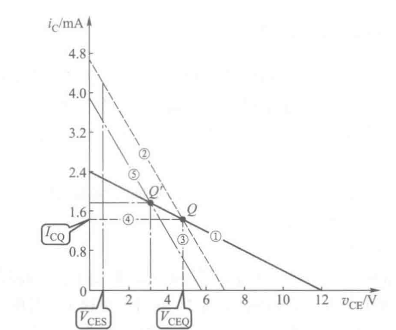
例 1.3.5
输出特性图解与交直流负载线：直线①为直流通路约束
v C E = V C C − i C ( R c + R e ) v_{CE}=V_{CC}-i_C(R_c+R_e) Q Q − 1 / R L ′ -1/R_L' Q Q Q ′ Q'
对某电容 耦合分压偏置共射放大器 （R e R_e
已被旁路电容
C e C_e 静态工作点
I C Q = 1.43 mA I_{CQ}=1.43\ \text{mA} V C E Q = 4.85 V V_{CEQ}=4.85\ \text{V} V C E S = 0.7 V V_{CES}=0.7\ \text{V} 集电极电阻
R c = 3 k Ω R_c=3\ \text{k}\Omega R L = 3 k Ω R_L=3\ \text{k}\Omega R e = 2 k Ω R_e=2\ \text{k}\Omega V C C = 12 V V_{CC}=12\ \text{V} 试解释 为何直流与交流负载线 不同，并计算放大 电路的最大不失真 输出电压幅度
V o m V_{om}
解。
直流负载线 vs 交流负载线 ：
直流 负载线（图线①）受直流通路 约束：v C E = V C C − i C ( R c + R e ) = 12 − 5 i C ( k Ω , mA ) v_{CE}=V_{CC}-i_C(R_c+R_e)=12-5i_C\ (\text{k}\Omega,\text{mA}) − 1 / ( R c + R e ) = − 0.2 mA/V -1/(R_c+R_e)=-0.2\ \text{mA/V} Q Q 加上交流信号时 ，因耦合 电容
C 2 C_2 导通 使
R L R_L 集电极 ，且旁路电容
C e C_e R e R_e 交流短路 ，动态 等效负载变为
R L ′ = R c ∥ R L = 3 ∥ 3 = 1.5 k Ω R_L'=R_c\parallel R_L=3\parallel3=1.5\ \text{k}\Omega 微变 增量满足
Δ v c e = − Δ i c R L ′ \Delta v_{ce}=-\Delta i_c R_L' 故动态 工作点沿过
Q Q 斜率 为
− 1 / R L ′ = − 2 / 3 mA/V -1/R_L'=-2/3\ \text{mA/V} 交流负载线 （图线②）上下摆动 ！
对称最大不失真输出幅度
V o m V_{om} 以正弦输出不削波为限（图
1.3.19 线段④与③）：
向饱和区 左摆的最大 不失真幅值 ：V sat,max = V C E Q − V C E S = 4.85 − 0.7 = 4.15 V V_{\text{sat,max}}=V_{CEQ}-V_{CES}=4.85-0.7=4.15\ \text{V} 放大 反相，当输入 信号正半周 过大引起
i C i_C 饱和区 时，v o v_o 负半周底部削顶 ，称为饱和失真 ）；
向截止区 右摆的最大 不失真幅值 ：V cut,max = I C Q R L ′ = 1.43 × 1.5 = 2.145 V ≈ 2.15 V V_{\text{cut,max}}=I_{CQ}R_L'=1.43\times1.5=2.145\ \text{V}\approx2.15\ \text{V} 负半周 过大引起
i B , i C → 0 i_B,i_C\to0 v o v_o 正半周顶部削平 ，称为截止失真 ）。
因为先碰到 较小的限度 ，该电路将首先出现截止失真 ，最大对称 不失真输出电压幅度 （峰值）为
V o m = min ( V C E Q − V C E S , I C Q R L ′ ) = min ( 4.15 V , 2.15 V ) = 2.15 V . V_{om}=\min\!\big(V_{CEQ}-V_{CES},\ I_{CQ}R_L'\big)=\min(4.15\ \text{V},\ 2.15\ \text{V})=2.15\ \text{V}. 有效值 为
2.15 / 2 ≈ 1.52 V 2.15/\sqrt2\approx1.52\ \text{V} 若想 在
R L ′ R_L' 增大
V o m V_{om} 减小
R b R_b I C Q I_{CQ} V C E Q V_{CEQ} Q Q 直流 负载线向中点
Q ′ Q' 移动 直至
I C Q R L ′ = V C E Q − V C E S I_{CQ}R_L'=V_{CEQ}-V_{CES}
易错 · 静态分析与波形失真必避三坑
“先乘
β \beta V C E V_{CE} ：只要算出
V C E < V C E S V_{CE}<V_{CES} 负值 ），I C = β I B I_C=\beta I_B 作废 ，必须重算饱和电流 。判断先发生饱和失真还是截止失真，不能只看
V C E Q V_{CEQ} V C C / 2 V_{CC}/2 ！交流负载线 比直流负载 线更陡（R L ′ < R c + R e R_L'<R_c+R_e 即使
V C E Q < V C C / 2 V_{CEQ}<V_{CC}/2 本例 这样先发生 截止失真 （因
I C Q R L ′ I_{CQ}R_L' 要算 并比较
V C E Q − V C E S V_{CEQ}-V_{CES} I C Q R L ′ I_{CQ}R_L' 分压偏置不可盲目省略基极电流 ：只有
( 1 + β ) R e ≥ 10 ( R b 1 ∥ R b 2 ) (1+\beta)R_e\ge10(R_{b1}\parallel R_{b2}) 适用
V B Q ≈ V B V_{BQ}\approx V_B 近似估算 ；考试 遇到具体数值直接套戴维宁 精确公式 只多一步，零风险 。
习题 19 ·
六种偏置电路的静态工作点与工作状态判别
练习 · 先独立作答
如图（a）—（f）所示各电路中晶体管 均为硅管 ，设
V B E ≈ 0.7 V V_{BE}\approx0.7\ \text{V} β = 50 \bar\beta=50 V C E S = 0.3 V V_{CES}=0.3\ \text{V} I C E O I_{CEO} 忽略不计 。 估算各电路的
I B I_B I C I_C V C E V_{CE} 工作 状态。（教材习题 1.2.12）
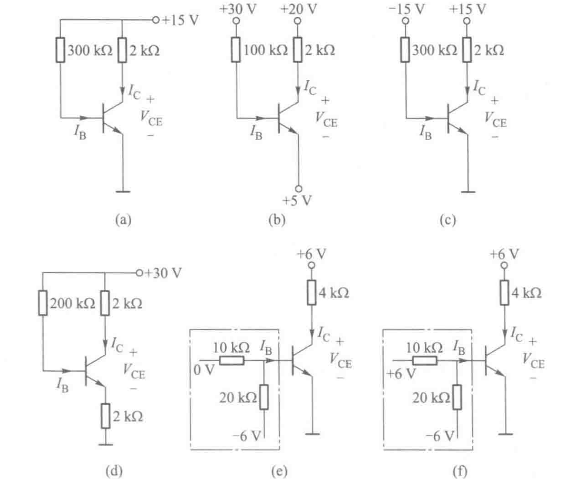
题图
1.2.12：六种变形偏置电路，包含双电源供电、高发射极电位、射极反馈电阻与分压反偏情形。
解析
统一“先看
V B V_B V E V_E 能否 正偏
⟹ \implies 放大 算
I B , I C , V C E I_B,I_C,V_{CE} ⟹ \implies V C E > 0.7 V V_{CE}>0.7\ \text{V} （48 μ A , 2.4 mA , 10.2 V 48\ \mu\text{A},2.4\ \text{mA},10.2\ \text{V} （b）饱和（I B = 243 μ A , I C = 7.35 mA , V C E = 0.3 V I_B=243\ \mu\text{A},I_C=7.35\ \text{mA},V_{CE}=0.3\ \text{V} （c）基极 接
− 15 V -15\ \text{V} 截止 （0 , 0 , 15 V 0,0,15\ \text{V} （d）含
R e = 2 k Ω R_e=2\ \text{k}\Omega （97 μ A , 4.85 mA , 10.4 V 97\ \mu\text{A},4.85\ \text{mA},10.4\ \text{V} （e）戴维宁开路 电压
V B = − 2 V < 0 V_B=-2\ \text{V}<0 （0 , 0 , 6 V 0,0,6\ \text{V} （f）戴维宁开路
V B = + 2 V V_B=+2\ \text{V} I B = 195 μ A I_B=195\ \mu\text{A} 饱和 （V C E = 0.3 V , I C ≈ 1.43 mA V_{CE}=0.3\ \text{V},I_C\approx1.43\ \text{mA}
解答
（a）固定偏置
NPN （V C C = 15 V , R b = 300 k Ω , R c = 2 k Ω V_{CC}=15\ \text{V},R_b=300\ \text{k}\Omega,R_c=2\ \text{k}\Omega
I B = 15 − 0.7 300 k Ω ≈ 47.7 μ A I_B=\dfrac{15-0.7}{300\ \text{k}\Omega}\approx47.7\ \mu\text{A} 48 μ A 48\ \mu\text{A} 放大 得
I C = 50 × 47.7 μ A ≈ 2.38 mA I_C=50\times47.7\ \mu\text{A}\approx2.38\ \text{mA} 2.4 mA 2.4\ \text{mA} V C E = 15 − 2.38 × 2 ≈ 10.23 V > 0.7 V V_{CE}=15-2.38\times2\approx10.23\ \text{V}>0.7\ \text{V} 放大状态 。（b）抬高发射极电位 （基极经
100 k Ω 100\ \text{k}\Omega + 30 V +30\ \text{V} 集电极经
2 k Ω 2\ \text{k}\Omega + 20 V +20\ \text{V} 发射极 接
+ 5 V +5\ \text{V} I B = 30 − ( 5 + 0.7 ) 100 k Ω = 24.3 100 = 0.243 mA I_B=\dfrac{30-(5+0.7)}{100\ \text{k}\Omega}=\dfrac{24.3}{100}=0.243\ \text{mA} 0.24 mA 0.24\ \text{mA} 放大 算
I C = 50 × 0.243 = 12.15 mA I_C=50\times0.243=12.15\ \text{mA} V C = 20 − 12.15 × 2 = − 4.3 V < V E = + 5 V V_C=20-12.15\times2=-4.3\ \text{V}<V_E=+5\ \text{V} 饱和状态 ：V C E = V C E S = 0.3 V V_{CE}=V_{CES}=0.3\ \text{V} V C = 5 + 0.3 = 5.3 V V_C=5+0.3=5.3\ \text{V} I C = 20 − 5.3 2 k Ω = 7.35 mA I_C=\dfrac{20-5.3}{2\ \text{k}\Omega}=7.35\ \text{mA} （c）基极反偏截止 （基极经
300 k Ω 300\ \text{k}\Omega − 15 V -15\ \text{V} 发射极 接地，集电极经
2 k Ω 2\ \text{k}\Omega + 15 V +15\ \text{V} J e J_e 截止状态 ：I B = 0 , I C = 0 , V C E = 15 V I_B=0,\ I_C=0,\ V_{CE}=15\ \text{V} （d）带射极电阻固定偏置 （V C C = 30 V , R b = 200 k Ω , R c = 2 k Ω , R e = 2 k Ω V_{CC}=30\ \text{V},R_b=200\ \text{k}\Omega,R_c=2\ \text{k}\Omega,R_e=2\ \text{k}\Omega
I B = 30 − 0.7 200 + 51 × 2 mA = 29.3 302 ≈ 97.0 μ A I_B=\dfrac{30-0.7}{200+51\times2}\ \text{mA}=\dfrac{29.3}{302}\approx97.0\ \mu\text{A} I C = 50 × 97.0 μ A ≈ 4.85 mA I_C=50\times97.0\ \mu\text{A}\approx4.85\ \text{mA} I E = 51 × 97.0 μ A ≈ 4.95 mA I_E=51\times97.0\ \mu\text{A}\approx4.95\ \text{mA} V C E = 30 − 4.85 × 2 − 4.95 × 2 = 10.40 V > 0.7 V V_{CE}=30-4.85\times2-4.95\times2=10.40\ \text{V}>0.7\ \text{V} 放大状态 （书答略取
I E ≈ I C I_E\approx I_C 10.6 V 10.6\ \text{V} （e）基极电阻接
0 V 0\ \text{V} − 6 V -6\ \text{V}
先对基极 左侧电阻网络作戴维宁等效 ：V B = 0 + 10 10 + 20 ( − 6 ) = − 2 V < 0 V_B=0+\dfrac{10}{10+20}(-6)=-2\ \text{V}<0 J e J_e 截止状态 ：I B = 0 , I C = 0 , V C E = 6 V I_B=0,\ I_C=0,\ V_{CE}=6\ \text{V} （f）基极电阻接
+ 6 V +6\ \text{V} − 6 V -6\ \text{V}
基极戴维宁等效 ：V B = 20 × 6 + 10 × ( − 6 ) 10 + 20 = + 2 V V_B=\dfrac{20\times6+10\times(-6)}{10+20}=+2\ \text{V} R B = 10 ∥ 20 = 20 3 ≈ 6.67 k Ω R_B=10\parallel20=\dfrac{20}{3}\approx6.67\ \text{k}\Omega I B = 2 − 0.7 6.67 k Ω = 195 μ A I_B=\dfrac{2-0.7}{6.67\ \text{k}\Omega}=195\ \mu\text{A} 放大 则
I C = 50 × 0.195 = 9.75 mA I_C=50\times0.195=9.75\ \text{mA} 饱和 上限
6 / 4 = 1.5 mA 6/4=1.5\ \text{mA} 饱和状态 ：V C E = V C E S = 0.3 V V_{CE}=V_{CES}=0.3\ \text{V} I C = 6 − 0.3 4 k Ω ≈ 1.43 mA I_C=\dfrac{6-0.3}{4\ \text{k}\Omega}\approx1.43\ \text{mA} 教材书后答案 印作
1.33 mA 1.33\ \text{mA} V C E = 0.7 V V_{CE}=0.7\ \text{V} ( 6 − 0.7 ) / 4 (6-0.7)/4 按题 设
V C E S = 0.3 V V_{CES}=0.3\ \text{V} 1.43 mA 1.43\ \text{mA}
习题 20 ·
放大电路参数改变与温度漂移引起的失真判别
练习 · 先独立作答
固定偏置 共射放大 电路如图 1.2.46(a) 类型：基极偏置电阻
R b R_b 集电极 或电源之间； 已知若换为集电极 馈电偏置 （即
R b R_b 集电极 c 与基极 b 之间，见教材图题
1.3.11），发射极 直接接地、集电极电阻
R c R_c + V C C +V_{CC} 耦合 电容接负载
R L R_L 分析 ：（1）若换用
β \beta 硅管 ，静态工作点
I B Q I_{BQ} V C E Q V_{CEQ} | A ̇ v | |\dot A_v| 变化 ？（2）若该电路 在室温下工作 正常，放入
60 ∘ C 60\,^\circ\text{C} 恒温箱 后发现输出波形 严重削波，判别出现的是饱和失真 还是截止失真 ，并说明根本原因 。（教材习题
1.3.11 改编）
解析
（1）由直流 关系
V C C − I C R c − I B R b − V B E = 0 V_{CC}-I_CR_c-I_BR_b-V_{BE}=0 I C = β I B I_C=\beta I_B I B Q = V C C − V B E R b + ( 1 + β ) R c I_{BQ}=\dfrac{V_{CC}-V_{BE}}{R_b+(1+\beta)R_c} 注意集电极 反馈里当
β \beta 减小 时，I B Q I_{BQ} 固定
V C C V_{CC} I B Q I_{BQ} 基本 不变），无论如何
I C Q = β I B Q I_{CQ}=\beta I_{BQ} 减小 ，故
V C E Q = V C C − I E Q R c V_{CEQ}=V_{CC}-I_{EQ}R_c | A v | = β R L ′ / r b e |A_v|=\beta R_L'/r_{be} （2）温度 升至
60 ∘ C 60\,^\circ\text{C} V B E V_{BE} I S I_S β \beta I C E O I_{CEO} 增大 ，I C Q I_{CQ} 上升 使
Q Q 负载 线向左上移动 并压低
V C E Q V_{CEQ} 饱和区 ，故首先出现饱和失真 。
解答
集电极反馈偏置对换管（β \beta
减小）的影响 ： 对直流基极 回路列 KVL（流过
R c R_c 电流 为
I C + I B = ( 1 + β ) I B I_C+I_B=(1+\beta)I_B V C C = ( 1 + β ) I B Q R c + I B Q R b + V B E Q ⟹ I B Q = V C C − V B E Q R b + ( 1 + β ) R c , V_{CC}=(1+\beta)I_{BQ}R_c+I_{BQ}R_b+V_{BEQ} \implies I_{BQ}=\frac{V_{CC}-V_{BEQ}}{R_b+(1+\beta)R_c}, I C Q = β I B Q = V C C − V B E Q R c + R b / β . I_{CQ}=\beta I_{BQ}=\frac{V_{CC}-V_{BEQ}}{R_c+R_b/\beta}. β \beta 晶体管时 ：I B Q I_{BQ} 略有增大 （通常因
R b ≫ ( 1 + β ) R c R_b\gg(1+\beta)R_c 不变 ），但
I C Q I_{CQ} 明显减小 ，集电极电位
V C E Q = V C C − ( I C Q + I B Q ) R c V_{CEQ}=V_{CC}-(I_{CQ}+I_{BQ})R_c 增大 。动态 方面，因为
I E Q I_{EQ} 减小 使
r b e = r b b ′ + ( 1 + β ) V T / I E Q r_{be}=r_{bb'}+(1+\beta)V_T/I_{EQ} β \beta 比值 同时改变，通常分压 主项
β / r b e ≈ g m = I C Q / V T \beta/r_{be}\approx g_m=I_{CQ}/V_T I C Q I_{CQ} 下降 而变小，故电压放大倍数
| A ̇ v | |\dot A_v| 下降 （书答按
I B Q I_{BQ} 不变 简判为
I B Q I_{BQ} 基本 不变、V C E Q V_{CEQ} | A v | |A_v| 高温（60 ∘ C 60\,^\circ\text{C} 引发饱和失真 ：
温度 每升高
10 ∘ C 10\,^\circ\text{C} 穿透电流
I C E O I_{CEO} V B E V_{BE} − 2.5 mV / ∘ C -2.5\ \text{mV}/^\circ\text{C} β \beta 增大 。这些热效应 共同推动静态集电极 电流
I C Q I_{CQ} 显著增大 ，使
Q Q 左上方饱和区 移动（V C E Q = V C C − I E Q R c V_{CEQ}=V_{CC}-I_{EQ}R_c
急剧减小 ），从而导致 输出波形 出现饱和失真 。
3.3
微变等效模型与单管三种基本组态放大电路
确立了直流工作点
Q Q 管子 在线性放大区 内之后，就可以“剥离直流 、保留交流 ”，把非线性三极管 在
Q Q 线性化成 受控源线性电路 ，像04
电子电路·电路原理 的线性交流 分析那样直接求出电压增益
A ̇ v \dot A_v 输入电阻
R i R_i 输出电阻
R o R_o 本节用期末核心真题
f2526 一(10)
开篇，先把公式结构 和算例练通 ，再系统 梳理模型、符号 对照与三种组态 。
例 14 · 【真题】分压偏置共射放大电路（无旁路电容
C e C_e Q Q
2025—2026 秋冬期末回忆 卷 · 第四题（即真题
f2526 一(10)）· 建议 用时 15 分钟
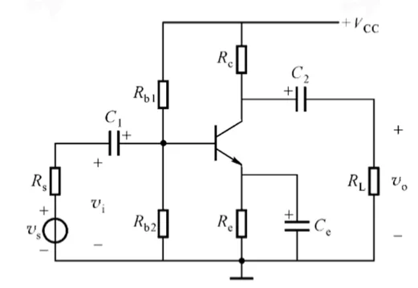
期末第四题参考电路图：典型分压偏置共射放大电路（注意：原考题文字说明电路类似该参考图，但实际电路在发射极电阻
R e R_e 没有 并联旁路电容
C e C_e
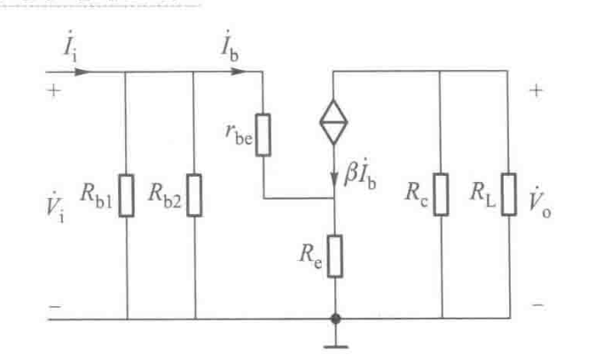
无旁路电容
C e C_e V C C V_{CC} R e R_e
如图类似 参考电路 的单管共射放大 电路（关键区别：发射极电阻
R E R_E C e C_e 已知
V C C = 12 V V_{CC}=12\ \text{V} β = 50 \beta=50 V B E Q = 0.7 V V_{BEQ}=0.7\ \text{V} 电路元件符号 推导静态工作点 （V B , I E Q , I C Q , V C E Q V_B,I_{EQ},I_{CQ},V_{CEQ} 以及中频微变小信号参数
r b e r_{be} 电压放大倍数
A ̇ v = V ̇ o / V ̇ i \dot A_v=\dot V_o/\dot V_i 输入电阻
R i R_i 输出电阻
R o R_o r c e r_{ce} 未记录元件 阻值，现取 一组典型参数代入 核对数值 计算：R B 1 = 60 k Ω R_{B1}=60\ \text{k}\Omega R B 2 = 20 k Ω R_{B2}=20\ \text{k}\Omega R C = 3 k Ω R_C=3\ \text{k}\Omega R E = 1 k Ω R_E=1\ \text{k}\Omega R L = 6 k Ω R_L=6\ \text{k}\Omega 常规 取值
r b b ′ = 200 Ω r_{bb'}=200\ \Omega V T = 26 mV V_T=26\ \text{mV} 对比 说明若电路 中实际接了旁路电容
C e C_e 动态指标 会有多大量 级的改变。
解。
（1）符号通式推导（先静态、后动态） -
静态工作点（精确戴维宁法） ：基极 向左戴维宁等效 ：V th = V C C R B 2 R B 1 + R B 2 V_{\text{th}}=V_{CC}\dfrac{R_{B2}}{R_{B1}+R_{B2}} R B = R B 1 ∥ R B 2 R_B=R_{B1}\parallel R_{B2} V th = I B Q R B + V B E Q + ( 1 + β ) I B Q R E V_{\text{th}}=I_{BQ}R_B+V_{BEQ}+(1+\beta)I_{BQ}R_E I B Q = V th − V B E Q R B + ( 1 + β ) R E , I E Q = ( 1 + β ) I B Q , I C Q = β I B Q , I_{BQ}=\frac{V_{\text{th}}-V_{BEQ}}{R_B+(1+\beta)R_E},\qquad I_{EQ}=(1+\beta)I_{BQ},\qquad I_{CQ}=\beta I_{BQ}, V C E Q = V C C − I C Q R C − I E Q R E ≈ V C C − I C Q ( R C + R E ) . V_{CEQ}=V_{CC}-I_{CQ}R_C-I_{EQ}R_E\approx V_{CC}-I_{CQ}(R_C+R_E). 满足
( 1 + β ) R E ≫ R B (1+\beta)R_E\gg R_B 粗估
V B ≈ V th , I E Q ≈ V th − V B E Q R E V_B\approx V_{\text{th}},I_{EQ}\approx\dfrac{V_{\text{th}}-V_{BEQ}}{R_E} 动态小信号指标（无
C e C_e ：由
Q Q 点算 出
r b e = r b b ′ + ( 1 + β ) V T I E Q . r_{be}=r_{bb'}+(1+\beta)\frac{V_T}{I_{EQ}}. 等效电路 （图
1.3.29）：C 1 , C 2 C_1,C_2 V C C V_{CC} R E R_E 留在发射极回路 ，集电极 总交流负载
R L ′ = R C ∥ R L R_L'=R_C\parallel R_L 输入 回路与输出回路方程 ：
V ̇ i = I ̇ b r b e + ( 1 + β ) I ̇ b R E = I ̇ b [ r b e + ( 1 + β ) R E ] , V ̇ o = − β I ̇ b R L ′ . \dot V_i=\dot I_b r_{be}+(1+\beta)\dot I_b R_E=\dot I_b\big[r_{be}+(1+\beta)R_E\big],\qquad \dot V_o=-\beta\dot I_b R_L'. I ̇ b \dot I_b 反相 ）：
A ̇ v = V ̇ o V ̇ i = − β ( R C ∥ R L ) r b e + ( 1 + β ) R E , \dot A_v=\frac{\dot V_o}{\dot V_i}=-\frac{\beta(R_C\parallel R_L)}{r_{be}+(1+\beta)R_E}, 基极 看入阻值
R i ′ = r b e + ( 1 + β ) R E R_i'=r_{be}+(1+\beta)R_E 并联偏置电阻 即得总输入电阻 ；令
V ̇ i = 0 ⟹ I ̇ b = 0 ⟹ β I ̇ b = 0 \dot V_i=0\implies\dot I_b=0\implies\beta\dot I_b=0 输出电阻 （忽略
r c e r_{ce} R i = R B 1 ∥ R B 2 ∥ [ r b e + ( 1 + β ) R E ] , R o ≈ R C . R_i=R_{B1}\parallel R_{B2}\parallel\big[r_{be}+(1+\beta)R_E\big],\qquad R_o\approx R_C.
（2）示范参数定量计算与精确法/近似法对照 -
戴维宁等效 ：V th = 12 × 20 60 + 20 = 3 V V_{\text{th}}=12\times\dfrac{20}{60+20}=3\ \text{V} R B = 60 ∥ 20 = 15 k Ω R_B=60\parallel20=15\ \text{k}\Omega 注意到
( 1 + β ) R E = 51 k Ω (1+\beta)R_E=51\ \text{k}\Omega R B = 15 k Ω R_B=15\ \text{k}\Omega 量级 ，忽略
I B I_B 误差 ！ - 精确解（推荐） ：
I B Q = 3 − 0.7 15 + 51 × 1 mA = 2.3 66 mA ≈ 34.85 μ A , I E Q = 51 I B Q ≈ 1.777 mA , I_{BQ}=\frac{3-0.7}{15+51\times1}\ \text{mA}=\frac{2.3}{66}\ \text{mA}\approx34.85\ \mu\text{A},\qquad I_{EQ}=51I_{BQ}\approx1.777\ \text{mA}, I C Q = 50 I B Q ≈ 1.742 mA , V C E Q = 12 − 1.742 × 3 − 1.777 × 1 ≈ 5.00 V ( > 0.7 V , 放大区 ) . I_{CQ}=50I_{BQ}\approx1.742\ \text{mA},\qquad V_{CEQ}=12-1.742\times3-1.777\times1\approx5.00\ \text{V}\ (>0.7\ \text{V},\ \text{放大区}). r b e = 200 + 51 × 26 1.777 ≈ 200 + 746 = 946 Ω . r_{be}=200+51\times\frac{26}{1.777}\approx200+746=946\ \Omega. R L ′ = 3 ∥ 6 = 2 k Ω , A ̇ v = − 50 × 2 0.946 + 51 × 1 = − 100 51.95 ≈ − 1.925 ( 约 − 1.93 ) , R_L'=3\parallel6=2\ \text{k}\Omega,\qquad \dot A_v=-\frac{50\times2}{0.946+51\times1}=-\frac{100}{51.95}\approx-1.925\ (\text{约 }-1.93), R i = 15 ∥ 51.95 ≈ 11.64 k Ω , R o = R C = 3 k Ω . R_i=15\parallel51.95\approx11.64\ \text{k}\Omega,\qquad R_o=R_C=3\ \text{k}\Omega. 对比忽略
I B I_B ：V B ≈ 3 V ⟹ V E = 2.3 V ⟹ I E Q ≈ 2.3 mA ⟹ V C E Q ≈ 12 − 2.3 × 4 = 2.8 V V_B\approx3\ \text{V}\implies V_E=2.3\ \text{V}\implies I_{EQ}\approx2.3\ \text{mA}\implies V_{CEQ}\approx12-2.3\times4=2.8\ \text{V} r b e ≈ 200 + 51 × 26 / 2.3 = 776 Ω r_{be}\approx200+51\times26/2.3=776\ \Omega 分母 以
( 1 + β ) R E = 51 k Ω (1+\beta)R_E=51\ \text{k}\Omega C e C_e 动态指标 对
r b e r_{be} 敏感 ：A ̇ v ≈ − 100 / 51.78 = − 1.93 \dot A_v\approx-100/51.78=-1.93 R i ≈ 15 ∥ 51.78 = 11.6 k Ω R_i\approx15\parallel51.78=11.6\ \text{k}\Omega 反过来正是接入未旁路
R E R_E -
若接了旁路电容
C e C_e 发射极交流接地，分母 里的
( 1 + β ) R E (1+\beta)R_E A ̇ v = − β R L ′ r b e ≈ − 100 0.946 ≈ − 105.7 \dot A_v=-\dfrac{\beta R_L'}{r_{be}}\approx-\dfrac{100}{0.946}\approx-105.7 近似 法
− 128.8 -128.8 输入电阻 剧降至
R i = 15 ∥ 0.946 ≈ 0.89 k Ω R_i=15\parallel0.946\approx0.89\ \text{k}\Omega
得分步骤 ：① 写出 分压偏置戴维宁 公式求出
Q Q 检验
V C E Q > 0.7 V V_{CEQ}>0.7\ \text{V} r b e r_{be} C e C_e 等效电路 （把
R E R_E 支路 ）；④ 分别写出
A ̇ v , R i , R o \dot A_v,R_i,R_o 反相 负号校核量纲。
定义 8 ·
放大电路的直/交流通路与低频微变等效模型（兼中英教材符号对照）
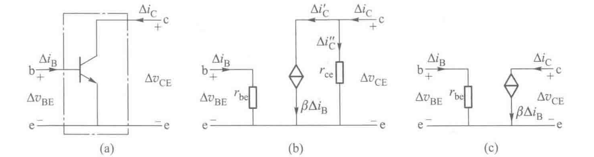
晶体管低频小信号微变等效电路（教材图
1.3.12）：(a) 视作双端口网络；(b) 完整模型含动态输出电阻
r c e r_{ce} r c e r_{ce}
画直流通路与交流通路法则 ：
直流通路 ：耦合 电容、旁路电容一律视作开路 ；电感（直流绕组内阻 忽略时）视作短路 。 交流通路 ：足够大的耦合 电容、旁路电容 （在信号 中频段容抗远小于外电阻 ）一律视作短路 ；理想直流 恒压源（如
+ V C C , − V E E +V_{CC},-V_{EE} 交流 变化量为零，一律交流接地 ；直流恒流源 对变化量为零，一律开路 。 《集成电子》低频微变等效模型核心参数 （由直流工作点
I E Q I_{EQ} r b e = r b b ′ + ( 1 + β ) V T I E Q ( 其中低频小功率管基区体电阻 r b b ′ ≈ 100 — 300 Ω ( 常见题设 200 Ω ) , V T ≈ 26 mV ) . r_{be}=r_{bb'}+(1+\beta)\frac{V_T}{I_{EQ}}\quad\Big(\text{其中低频小功率管基区体电阻 }r_{bb'}\approx100\text{—}300\ \Omega\ (\text{常见题设 }200\ \Omega),\ V_T\approx26\ \text{mV}\Big).
输出 端为流控电流源
β I ̇ b \beta\dot I_b 考虑
Early 效应 则并联
r c e = V A / I C Q r_{ce}=V_A/I_{CQ} 另外在
H H 参数 表示下，忽略微小反馈 项
h 12 = h r e ≈ 0 h_{12}=h_{re}\approx0 h 11 = h i e = r b e h_{11}=h_{ie}=r_{be} h 21 = h f e = β h_{21}=h_{fe}=\beta h 22 = h o e = 1 / r c e h_{22}=h_{oe}=1/r_{ce} 国内中文教材与英文教材/周金芳课件符号互译对照表 ：
物理意义
国内教材《集成电子》记号（考试必用）
英文教材 / 周金芳课件记号（辅助对照）
严格换算关系
基射小信号输入电阻
r b e = r b b ′ + ( 1 + β ) V T I E Q r_{be}=r_{bb'}+(1+\beta)\dfrac{V_T}{I_{EQ}} r π = β g m = V T I B Q r_\pi=\dfrac{\beta}{g_m}=\dfrac{V_T}{I_{BQ}} 当
r b b ′ = 0 r_{bb'}=0 β ≈ 1 + β \beta\approx1+\beta r b e ≡ r π r_{be}\equiv r_\pi
跨导
较少单列（直接用
β / r b e \beta/r_{be}
g m = I C Q V T g_m=\dfrac{I_{CQ}}{V_T} 当
r b b ′ = 0 r_{bb'}=0 β r b e ≈ g m \dfrac{\beta}{r_{be}}\approx g_m
射极向内看动态电阻
r b e 1 + β = r b b ′ 1 + β + V T I E Q \dfrac{r_{be}}{1+\beta}=\dfrac{r_{bb'}}{1+\beta}+\dfrac{V_T}{I_{EQ}} r e = r π 1 + β = V T I E Q ≈ 1 g m r_e=\dfrac{r_\pi}{1+\beta}=\dfrac{V_T}{I_{EQ}}\approx\dfrac{1}{g_m} r b b ′ = 0 r_{bb'}=0 r e r_e
小信号输出电阻
r c e r_{ce} r o = V A I C Q r_o=\dfrac{V_A}{I_{CQ}} r c e ≡ r o r_{ce}\equiv r_o → ∞ \to\infty
电压放大倍数 / 增量
A ̇ v = V ̇ o / V ̇ i , A ̇ v s = V ̇ o / V ̇ s \dot A_v=\dot V_o/\dot V_i,\ \dot A_{vs}=\dot V_o/\dot V_s A ̇ u \dot A_u A v = v o / v i , v b e , i b , i c A_v=v_o/v_i,\ v_{be},i_b,i_c 均代表正弦/小信号变化量，严禁在交流模型里画入直流电源或大信号
V B E V_{BE}
定理 4 ·
射极未旁路阻抗折算规律与单管三种组态放大指标汇总
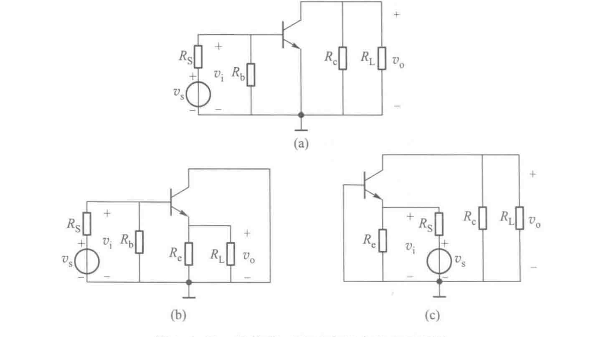
晶体管三种基本组态放大电路的交流通路：(a)
共射 CE（e 公共，b 入 c 出）；(b) 共集 CC（c 交流接地，b 入 e 出）；(c)
共基 CB（b 交流接地，e 入 c 出）（教材图 1.3.21）。
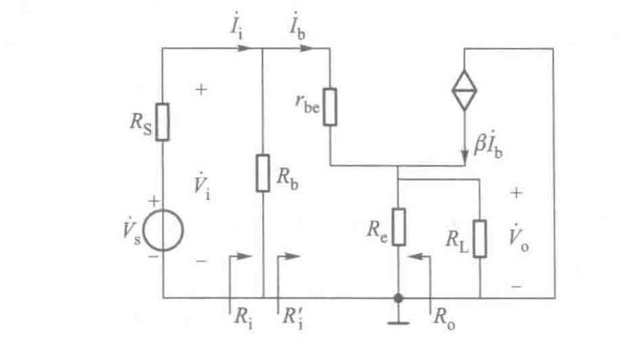
共集放大电路（射极跟随器，左）与共基放大电路（右）的低频微变等效电路（教材图
1.3.25、图
1.3.27）：共集输出从发射极取出，共基输入信号加在射—基之间。
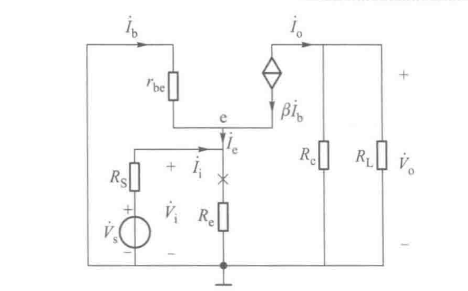
共基放大电路小信号等效电路细节：输入电阻因分母
( 1 + β ) (1+\beta)
当小信号流经 晶体管时，基极电流
I ̇ b \dot I_b 发射极电流
I ̇ e = ( 1 + β ) I ̇ b \dot I_e=(1+\beta)\dot I_b 阻抗跨极折算定律 ： -
从基极向发射极侧看 ：一切串联 在发射极到地之间的总交流 阻抗
R e , ac R_{e,\text{ac}} 基极 回路中一律放大
( 1 + β ) (1+\beta) ，即表现 为
( 1 + β ) R e , ac (1+\beta)R_{e,\text{ac}}
- 从发射极向基极侧看 ：基极 回路中从基极 到交流地的总阻抗
r b e + R b , tot r_{be}+R_{b,\text{tot}} R b , tot R_{b,\text{tot}} 基极偏置电阻 与信号源内阻的并联 ），折合到发射极 回路中一律缩小
( 1 + β ) (1+\beta) ，表现 为
r b e + R b , tot 1 + β \dfrac{r_{be}+R_{b,\text{tot}}}{1+\beta}
忽略
r c e r_{ce} 单管 四种基本结构动态指标 总表（若记入信号源内阻
R s R_s 源电压增益 始终为
A ̇ v s = R i R s + R i A ̇ v \dot A_{vs}=\dfrac{R_i}{R_s+R_i}\dot A_v 另简记
R b = R b 1 ∥ R b 2 R_b=R_{b1}\parallel R_{b2}
组态与特点
电压增益
A ̇ v = V ̇ o / V ̇ i \dot A_v=\dot V_o/\dot V_i
输入电阻
R i R_i
输出电阻
R o R_o
典型定位（兼空载课件对照）
共射 CE （有
C e C_e − β ( R c ∥ R L ) r b e -\dfrac{\beta(R_c\parallel R_L)}{r_{be}} R b ∥ r b e R_b\parallel r_{be} ∼ k Ω \sim\text{k}\Omega R c R_c 高电压电流增益主力级，频带较窄
共射 CE （无
C e C_e R e R_e − β ( R c ∥ R L ) r b e + ( 1 + β ) R e -\dfrac{\beta(R_c\parallel R_L)}{r_{be}+(1+\beta)R_e} R b ∥ [ r b e + ( 1 + β ) R e ] R_b\parallel\big[r_{be}+(1+\beta)R_e\big] R c R_c r c e r_{ce} r c e ( 1 + β R e r b e ′ + R e ) + ( R e ∥ r b e ′ ) r_{ce}\big(1+\frac{\beta R_e}{r_{be}'+R_e}\big)+(R_e\parallel r_{be}') R c R_c r b e ′ = r b e + ( R b ∥ R s ) r_{be}'=r_{be}+(R_b\parallel R_s) 交流负反馈稳增益、展带宽、提输入电阻
共集 CC （射极跟随器）( 1 + β ) ( R e ∥ R L ) r b e + ( 1 + β ) ( R e ∥ R L ) ≈ 1 \dfrac{(1+\beta)(R_e\parallel R_L)}{r_{be}+(1+\beta)(R_e\parallel R_L)}\approx1 < 1 <1 R b ∥ [ r b e + ( 1 + β ) ( R e ∥ R L ) ] R_b\parallel\big[r_{be}+(1+\beta)(R_e\parallel R_L)\big] k Ω \text{k}\Omega R e ∥ r b e + R b ∥ R s 1 + β R_e\parallel\dfrac{r_{be}+R_b\parallel R_s}{1+\beta} Ω \Omega 阻抗变换/缓冲器 ，驱动低阻负载，电流增益
1 + β 1+\beta
共基 CB + β ( R c ∥ R L ) r b e +\dfrac{\beta(R_c\parallel R_L)}{r_{be}} R e R_e R e ∥ r b e 1 + β R_e\parallel\dfrac{r_{be}}{1+\beta} Ω \Omega R c R_c 电流增益
α ≈ 1 \alpha\approx1
例 15 · 旁路电容
C e C_e
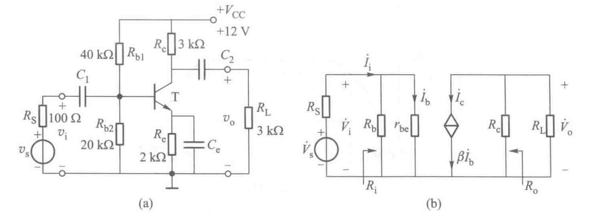
例 1.3.5
电路（左）及完整小信号微变等效电路（右）：发射极
R e = 2 k Ω R_e=2\ \text{k}\Omega C e C_e R s = 100 Ω R_s=100\ \Omega R L = 3 k Ω R_L=3\ \text{k}\Omega
在图 1.3.18 电路 （教材 例
1.3.5：V C C = 12 V , R b 1 = 40 k Ω , R b 2 = 20 k Ω , R c = 3 k Ω , R e = 2 k Ω , C e V_{CC}=12\ \text{V},R_{b1}=40\ \text{k}\Omega,R_{b2}=20\ \text{k}\Omega,R_c=3\ \text{k}\Omega,R_e=2\ \text{k}\Omega,C_e R L = 3 k Ω , R s = 100 Ω R_L=3\ \text{k}\Omega,R_s=100\ \Omega β = 50 , r b b ′ = 200 Ω \beta=50,r_{bb'}=200\ \Omega Q Q 动态指标 ，并检验
R s R_s 源增益
A ̇ v s \dot A_{vs} 在同型电路 例 1.3.6
中（R b 1 = 15 k Ω , R b 2 = 6.2 k Ω , R c = 3 k Ω , R e = 2 k Ω , R L = 3 k Ω , V C C = 12 V R_{b1}=15\ \text{k}\Omega,R_{b2}=6.2\ \text{k}\Omega,R_c=3\ \text{k}\Omega,R_e=2\ \text{k}\Omega,R_L=3\ \text{k}\Omega,V_{CC}=12\ \text{V} 定量 比较“接
C e C_e β \beta 50 50 100 100 C e C_e 结果 。
解。
（1）例 1.3.5 有
C e C_e （在例 13 里已求过本电路
V o m = 2.15 V V_{om}=2.15\ \text{V} V B = 12 × 20 40 + 20 = 4 V V_B=12\times\dfrac{20}{40+20}=4\ \text{V} R B = 40 ∥ 20 ≈ 13.33 k Ω R_B=40\parallel20\approx13.33\ \text{k}\Omega I B Q = 4 − 0.7 13.33 + 51 × 2 ≈ 28.6 μ A I_{BQ}=\dfrac{4-0.7}{13.33+51\times2}\approx28.6\ \mu\text{A} I C Q = 50 × 28.6 μ A = 1.43 mA I_{CQ}=50\times28.6\ \mu\text{A}=1.43\ \text{mA} I E Q ≈ 1.46 mA I_{EQ}\approx1.46\ \text{mA} 课本 近似取
I E Q ≈ I C Q = 1.43 mA I_{EQ}\approx I_{CQ}=1.43\ \text{mA} V C E Q ≈ 12 − 1.43 × 5 = 4.85 V V_{CEQ}\approx12-1.43\times5=4.85\ \text{V} 动态参数 （沿用课本
I E Q ≈ 1.43 mA I_{EQ}\approx1.43\ \text{mA} r b e = 200 + 51 × 26 1.43 ≈ 1.13 k Ω r_{be}=200+51\times\dfrac{26}{1.43}\approx1.13\ \text{k}\Omega 1.46 mA 1.46\ \text{mA} 1.11 k Ω 1.11\ \text{k}\Omega 2 % 2\% （R L ′ = 3 ∥ 3 = 1.5 k Ω R_L'=3\parallel3=1.5\ \text{k}\Omega
A ̇ v = − 50 × 1.5 1.13 ≈ − 66.4 , R i = 13.33 ∥ 1.13 ≈ 1.04 k Ω , R o ≈ R c = 3 k Ω , \dot A_v=-\frac{50\times1.5}{1.13}\approx-66.4,\qquad R_i=13.33\parallel1.13\approx1.04\ \text{k}\Omega,\qquad R_o\approx R_c=3\ \text{k}\Omega, A ̇ v s = A ̇ v ⋅ R i R s + R i = − 66.4 × 1.04 0.1 + 1.04 ≈ − 60.6 . \dot A_{vs}=\dot A_v\cdot\frac{R_i}{R_s+R_i}=-66.4\times\frac{1.04}{0.1+1.04}\approx-60.6.
（2）例 1.3.6
对比结论 （V B ≈ 3.5 V , R B ≈ 4.4 k Ω V_B\approx3.5\ \text{V},R_B\approx4.4\ \text{k}\Omega
- 接
C e C_e β = 50 \beta=50 I B Q ≈ 26 μ A , I C Q ≈ 1.3 mA , r b e ≈ 1.2 k Ω ⟹ A ̇ v ≈ − 62 , R i ≈ 0.94 k Ω , R o = 3 k Ω I_{BQ}\approx26\ \mu\text{A},I_{CQ}\approx1.3\ \text{mA},r_{be}\approx1.2\ \text{k}\Omega\implies \dot A_v\approx-62,\ R_i\approx0.94\ \text{k}\Omega,\ R_o=3\ \text{k}\Omega C e C_e β \beta 100 100 I B Q I_{BQ} 自动 降半至
13.6 μ A 13.6\ \mu\text{A} I C Q I_{CQ} 5 % 5\% 1.36 mA 1.36\ \text{mA} r b e r_{be} 涨到
2.1 k Ω 2.1\ \text{k}\Omega A ̇ v ≈ − 71 \dot A_v\approx-71 15 % 15\% R i ≈ 1.4 k Ω R_i\approx1.4\ \text{k}\Omega 拔掉
C e C_e （β = 50 \beta=50 交流 回路保留
R e = 2 k Ω R_e=2\ \text{k}\Omega 分母 变为
r b e + ( 1 + β ) R e = 1.2 + 51 × 2 = 103.2 k Ω r_{be}+(1+\beta)R_e=1.2+51\times2=103.2\ \text{k}\Omega A ̇ v = − 50 × 1.5 103.2 ≈ − 0.73 , R i = 4.4 ∥ 103.2 ≈ 4.2 k Ω , R o = 3 k Ω . \dot A_v=-\frac{50\times1.5}{103.2}\approx-0.73,\qquad R_i=4.4\parallel103.2\approx4.2\ \text{k}\Omega,\qquad R_o=3\ \text{k}\Omega. 可见 射极未旁路电容
C e C_e 电压增益 为代价换取了输入电阻 的成倍上升与工作 点/增益的高稳定性 ；而接入 足够大的旁路电容
C e C_e 部分旁路 ）即可兼顾 “直流 稳
Q Q 交流高增益 ”。
易错 · 求动态指标高频失分点自查
共集输出电阻
R o R_o R s R_s
注意是
R e ∥ r b e + R b ∥ R s 1 + β R_e\parallel\dfrac{r_{be}+R_b\parallel R_s}{1+\beta} 输出电阻 时虽然把独立 激励源置 零（V ̇ s = 0 \dot V_s=0 但信号源内阻
R s R_s 基极 回路里与
R b R_b 理想电压源 即
R s = 0 R_s=0 交流短路 ，则
R b ∥ R s = 0 R_b\parallel R_s=0 r b e / ( 1 + β ) r_{be}/(1+\beta) 输入电阻
R i R_i R s R_s
按教材 统一规定，R i R_i 偏置电阻
R b 1 ∥ R b 2 R_{b1}\parallel R_{b2} 不包含信号源内阻
R s R_s R s R_s 分压 作用反映在源电压放大倍数
A ̇ v s = R i R s + R i A ̇ v \dot A_{vs}=\dfrac{R_i}{R_s+R_i}\dot A_v 小信号计算绝不能漏了
( 1 + β ) (1+\beta) “+ 1 +1 ：r b e = r b b ′ + ( 1 + β ) V T I E Q r_{be}=r_{bb'}+(1+\beta)\dfrac{V_T}{I_{EQ}} 发射极电阻 折算均用
( 1 + β ) (1+\beta)
习题 21 ·
部分旁路发射极电阻与基极旁路电容的共射放大电路
练习 · 先独立作答
如图所示 共射放大 电路中，V C C = 12 V V_{CC}=12\ \text{V} R s = 500 Ω R_s=500\ \Omega R b 1 = 20 k Ω R_{b1}=20\ \text{k}\Omega R b 2 = 39 k Ω R_{b2}=39\ \text{k}\Omega R d = 1 k Ω R_d=1\ \text{k}\Omega R d R_d R b 2 R_{b2} 节点经 足够大的电容
C d = 50 μ F C_d=50\ \mu\text{F} R e 1 = 200 Ω R_{e1}=200\ \Omega R e 2 = 1.8 k Ω R_{e2}=1.8\ \text{k}\Omega R e 2 R_{e2} 并联旁路电容
C e = 50 μ F C_e=50\ \mu\text{F} R c = 2 k Ω , R L = 2 k Ω R_c=2\ \text{k}\Omega,R_L=2\ \text{k}\Omega β = 40 , r b e = 0.8 k Ω , V B E = 0.7 V \beta=40,r_{be}=0.8\ \text{k}\Omega,V_{BE}=0.7\ \text{V} 静态工作点 ；（2）说明交直流 下
R d R_d R e 2 R_{e2} 作用 ；（3）中频源电压放大倍数
A ̇ v s \dot A_{vs} 教材习题
1.3.13）
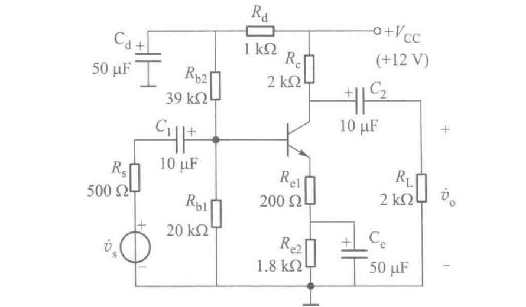
题图 1.3.13 电路：基极上偏串去耦电阻
R d R_d C d C_d R e 1 + R e 2 R_{e1}+R_{e2} R e 2 R_{e2} C e C_e
解析
巧用“直流电容全开路 、交流电容全短路 ”画清两张图：（1）直流通路 上偏为
R d + R b 2 = 40 k Ω R_d+R_{b2}=40\ \text{k}\Omega R b 1 = 20 k Ω R_{b1}=20\ \text{k}\Omega 总射极电阻
R e 1 + R e 2 = 2 k Ω R_{e1}+R_{e2}=2\ \text{k}\Omega V B = 4 V , R B = 13.33 k Ω V_B=4\ \text{V},R_B=13.33\ \text{k}\Omega I B Q ≈ 35 μ A , I C Q ≈ 1.4 mA , V C E Q ≈ 6.4 V I_{BQ}\approx35\ \mu\text{A},I_{CQ}\approx1.4\ \text{mA},V_{CEQ}\approx6.4\ \text{V} 交流通路 中
C d C_d R b 2 R_{b2} 接地 （使
R d R_d 电源滤波 去耦出输入 回路），C e C_e R e 2 R_{e2} 留下未旁路的
R e 1 = 200 Ω R_{e1}=200\ \Omega （3）A ̇ v = − 40 × ( 2 ∥ 2 ) 0.8 + 41 × 0.2 = − 40 9 ≈ − 4.44 \dot A_v=-\dfrac{40\times(2\parallel2)}{0.8+41\times0.2}=-\dfrac{40}{9}\approx-4.44 R i = 20 ∥ 39 ∥ 9 ≈ 5.35 k Ω R_i=20\parallel39\parallel9\approx5.35\ \text{k}\Omega A ̇ v s = A ̇ v ⋅ 5.35 5.35 + 0.5 ≈ − 4.07 \dot A_{vs}=\dot A_v\cdot\dfrac{5.35}{5.35+0.5}\approx-4.07
解答
画直流通路求静态工作点 ：所有电容 （C 1 , C 2 , C d , C e C_1,C_2,C_d,C_e 一律开路 。基极上偏总电阻 为
R d + R b 2 = 1 + 39 = 40 k Ω R_d+R_{b2}=1+39=40\ \text{k}\Omega R b 1 = 20 k Ω R_{b1}=20\ \text{k}\Omega 射极总直流电 阻
R e = R e 1 + R e 2 = 0.2 + 1.8 = 2 k Ω R_e=R_{e1}+R_{e2}=0.2+1.8=2\ \text{k}\Omega 戴维宁等效 ：
V B = 20 20 + 40 × 12 = 4.0 V , R B = 20 ∥ 40 = 40 3 ≈ 13.33 k Ω . V_B=\frac{20}{20+40}\times12=4.0\ \text{V},\qquad R_B=20\parallel40=\frac{40}{3}\approx13.33\ \text{k}\Omega. I B Q = 4.0 − 0.7 13.33 + 41 × 2 mA = 3.3 95.33 ≈ 34.6 μ A ( 书答取 35 μ A ) , I_{BQ}=\frac{4.0-0.7}{13.33+41\times2}\ \text{mA}=\frac{3.3}{95.33}\approx34.6\ \mu\text{A}\ (\text{书答取 }35\ \mu\text{A}), I C Q = 40 × 35 μ A = 1.40 mA , V C E Q = 12 − 1.40 × 2 − 1.43 × 2 ≈ 6.4 V ( 精准 6.34 V ) . I_{CQ}=40\times35\ \mu\text{A}=1.40\ \text{mA},\qquad V_{CEQ}=12-1.40\times2-1.43\times2\approx6.4\ \text{V}\ (\text{精准 }6.34\ \text{V}). 交流通路辨析 ：中频下
C 1 , C 2 , C d , C e C_1,C_2,C_d,C_e + V C C +V_{CC}
C d C_d R b 2 R_{b2} R d R_d 接点 拉到交流地，使
R d R_d + V C C +V_{CC} 退出 输入回路（电源 去耦滤波），偏置并联 为
R b 1 ∥ R b 2 = 20 ∥ 39 k Ω R_{b1}\parallel R_{b2}=20\parallel39\ \text{k}\Omega C e C_e 旁路 了
R e 2 R_{e2} 串联 着未被旁路 的
R e 1 = 0.2 k Ω R_{e1}=0.2\ \text{k}\Omega 引入 适量串联电流负反馈 。 动态指标与源电压增益 ：集电极 总负载
R L ′ = R c ∥ R L = 2 ∥ 2 = 1.0 k Ω R_L'=R_c\parallel R_L=2\parallel2=1.0\ \text{k}\Omega 基极 侧看入射极支路电阻 为
r b e + ( 1 + β ) R e 1 = 0.8 + 41 × 0.2 = 9.0 k Ω r_{be}+(1+\beta)R_{e1}=0.8+41\times0.2=9.0\ \text{k}\Omega A ̇ v = V ̇ o V ̇ i = − β R L ′ r b e + ( 1 + β ) R e 1 = − 40 × 1.0 9.0 ≈ − 4.44 , \dot A_v=\frac{\dot V_o}{\dot V_i}=-\frac{\beta R_L'}{r_{be}+(1+\beta)R_{e1}}=-\frac{40\times1.0}{9.0}\approx-4.44, R i = R b 1 ∥ R b 2 ∥ [ r b e + ( 1 + β ) R e 1 ] = 20 ∥ 39 ∥ 9.0 ≈ 5.35 k Ω , R_i=R_{b1}\parallel R_{b2}\parallel\big[r_{be}+(1+\beta)R_{e1}\big]=20\parallel39\parallel9.0\approx5.35\ \text{k}\Omega, A ̇ v s = A ̇ v ⋅ R i R s + R i = − 4.44 × 5.35 0.5 + 5.35 ≈ − 4.07 ( 与书后答案 A ̇ v s = − 4 一致 ) . \dot A_{vs}=\dot A_v\cdot\frac{R_i}{R_s+R_i}=-4.44\times\frac{5.35}{0.5+5.35}\approx-4.07\ (\text{与书后答案 }\dot A_{vs}=-4\text{ 一致}).
习题 22 · 固定偏置共集放大电路（射极跟随器）求
Q Q
练习 · 先独立作答
如图（c）所示 晶体管基本放大 电路中，V C C = + 15 V V_{CC}=+15\ \text{V} R b = 200 k Ω R_b=200\ \text{k}\Omega R e = 3 k Ω R_e=3\ \text{k}\Omega R L = 3 k Ω R_L=3\ \text{k}\Omega R s = 2 k Ω R_s=2\ \text{k}\Omega 已知
β = 50 \beta=50 r b b ′ = 200 Ω r_{bb'}=200\ \Omega V B E Q = 0.7 V V_{BEQ}=0.7\ \text{V} 静态工作点
I B Q I_{BQ} I C Q I_{CQ} V C E Q V_{CEQ} 放大 组态；（3）电压放大倍数
A ̇ v \dot A_v 输入电阻
R i R_i 输出电阻
R o R_o 教材习题
1.3.12(c)）
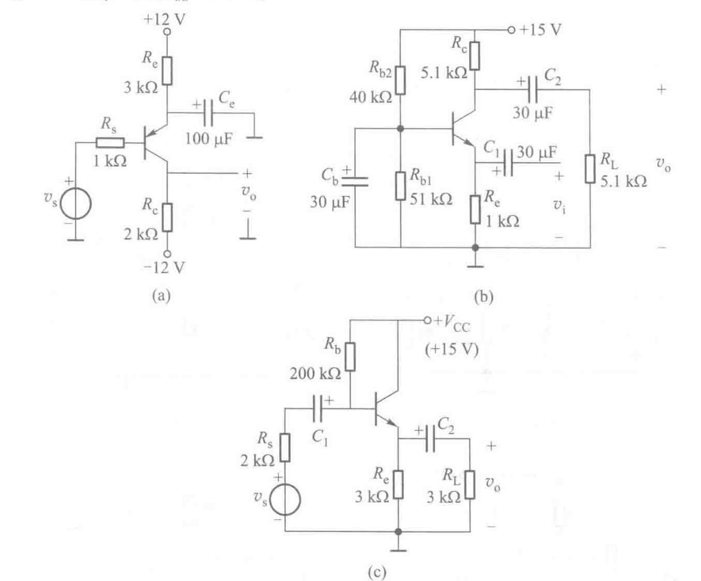
题图
1.3.12：晶体管三种组态放大电路（注意图（a）为 PNP
共射、图（b）为共基、图（c）为固定偏置共集射极跟随器；提示：图（b）原书图印
51 kΩ 系 5.1 kΩ 笔误，详见折叠解析）。
解析
（1）集电极 直连
+ V C C +V_{CC} 交流 地）、信号 从基极输入并从发射极 取出，故为共集组态（射极跟随器） 。直流通路
15 = I B Q × 200 + 0.7 + 51 I B Q × 3 ⟹ I B Q ≈ 40.5 μ A 15=I_{BQ}\times200+0.7+51I_{BQ}\times3\implies I_{BQ}\approx40.5\ \mu\text{A} 41 μ A 41\ \mu\text{A} I C Q ≈ 2.05 mA I_{CQ}\approx2.05\ \text{mA} V C E Q ≈ 8.85 V V_{CEQ}\approx8.85\ \text{V} I E Q ≈ 2.09 mA I_{EQ}\approx2.09\ \text{mA} r b e ≈ 845 Ω r_{be}\approx845\ \Omega 公式 并记
R L ′ = R e ∥ R L = 1.5 k Ω R_L'=R_e\parallel R_L=1.5\ \text{k}\Omega A ̇ v ≈ 0.99 \dot A_v\approx0.99 R i ≈ 55.8 k Ω R_i\approx55.8\ \text{k}\Omega R o = R e ∥ r b e + R s ∥ R b 1 + β ≈ 54 Ω R_o=R_e\parallel\dfrac{r_{be}+R_s\parallel R_b}{1+\beta}\approx54\ \Omega
解答
静态工作点 ：直流通路 上电容均开路 ，基极 回路从
+ V C C +V_{CC} R b R_b 基极 b，再经射极电阻
R e R_e I B Q = V C C − V B E Q R b + ( 1 + β ) R e = 15 − 0.7 200 + 51 × 3 mA = 14.3 353 mA ≈ 40.5 μ A ( 书取 41 μ A ) , I_{BQ}=\frac{V_{CC}-V_{BEQ}}{R_b+(1+\beta)R_e}=\frac{15-0.7}{200+51\times3}\ \text{mA}=\frac{14.3}{353}\ \text{mA}\approx40.5\ \mu\text{A}\ (\text{书取 }41\ \mu\text{A}), I C Q = β I B Q ≈ 50 × 41 μ A = 2.05 mA , I E Q = ( 1 + β ) I B Q ≈ 2.09 mA , I_{CQ}=\beta I_{BQ}\approx50\times41\ \mu\text{A}=2.05\ \text{mA},\qquad I_{EQ}=(1+\beta)I_{BQ}\approx2.09\ \text{mA}, V C E Q = V C C − I E Q R e ≈ 15 − 2.09 × 3 ≈ 8.73 V ( 若按近似 I E Q ≈ I C Q = 2.05 mA 则得 8.85 V ) . V_{CEQ}=V_{CC}-I_{EQ}R_e\approx15-2.09\times3\approx8.73\ \text{V}\ (\text{若按近似 }I_{EQ}\approx I_{CQ}=2.05\ \text{mA}\text{ 则得 }8.85\ \text{V}). 组态与
r b e r_{be} 集电极 直接接固定直流电源
+ V C C +V_{CC} 交流 地），输入 入
b、输出 出 e，故为共集组态（射极跟随器） 。取
I E Q ≈ 2.07 — 2.09 mA I_{EQ}\approx2.07\text{—}2.09\ \text{mA} r b e = r b b ′ + ( 1 + β ) V T I E Q = 200 + 51 × 26 2.07 ≈ 841 Ω ( 约 0.85 k Ω ) . r_{be}=r_{bb'}+(1+\beta)\frac{V_T}{I_{EQ}}=200+51\times\frac{26}{2.07}\approx841\ \Omega\ (\text{约 }0.85\ \text{k}\Omega). 动态指标 （R L ′ = R e ∥ R L = 3 ∥ 3 = 1.5 k Ω R_L'=R_e\parallel R_L=3\parallel3=1.5\ \text{k}\Omega
A ̇ v = ( 1 + β ) R L ′ r b e + ( 1 + β ) R L ′ = 51 × 1.5 0.85 + 51 × 1.5 = 76.5 77.35 ≈ 0.989 ( 约 0.99 ) , \dot A_v=\frac{(1+\beta)R_L'}{r_{be}+(1+\beta)R_L'}=\frac{51\times1.5}{0.85+51\times1.5}=\frac{76.5}{77.35}\approx0.989\ (\text{约 }0.99), R i = R b ∥ [ r b e + ( 1 + β ) R L ′ ] = 200 ∥ 77.35 ≈ 55.8 k Ω , R_i=R_b\parallel\big[r_{be}+(1+\beta)R_L'\big]=200\parallel77.35\approx55.8\ \text{k}\Omega, R o = R e ∥ r b e + R s ∥ R b 1 + β = 3 k Ω ∥ 0.85 + ( 2 ∥ 200 ) 51 k Ω = 3 k Ω ∥ 0.0555 k Ω ≈ 54.5 Ω ( 约 54 Ω ) . R_o=R_e\parallel\frac{r_{be}+R_s\parallel R_b}{1+\beta}=3\ \text{k}\Omega\parallel\frac{0.85+(2\parallel200)}{51}\ \text{k}\Omega=3\ \text{k}\Omega\parallel0.0555\ \text{k}\Omega\approx54.5\ \Omega\ (\text{约 }54\ \Omega). 书后答案 一致，直观 展现了射 极跟随器“增益 约
1 1 输入 高阻、输出 低阻
54 Ω 54\ \Omega 特性 。）
习题 23 · 双电源 PNP
型射极跟随器（含中英符号互验）
练习 · 先独立作答
某双电源 PNP 型射极 跟随器（周金芳课件 1112_1 课堂作业题
CH07-KP3-08）：正负电源 分别为
+ 5 V +5\ \text{V} − 5 V -5\ \text{V} PNP
晶体管集电极 c 直接接
− 5 V -5\ \text{V} 发射极
e 经电阻
R e = 3.3 k Ω R_e=3.3\ \text{k}\Omega + 5 V +5\ \text{V} 无穷大 电容
C o C_o 负载电阻
R L = 1 k Ω R_L=1\ \text{k}\Omega 输出
v o v_o 经串联电阻
R s = 100 k Ω R_s=100\ \text{k}\Omega 电压源
v s v_s v s v_s 直流分量 为
0 0 晶体管
β = 120 \beta=120 | V B E Q | = 0.7 V |V_{BEQ}|=0.7\ \text{V} V T = 25 mV V_T=25\ \text{mV} r b b ′ = 0 r_{bb'}=0 r c e r_{ce} r o → ∞ r_o\to\infty 信号模型 求静态发射极电流
I E Q I_{EQ} 输入电阻
R i R_i 基极 看入与含串联内阻
R s R_s 输出电阻
R o R_o 源电压增益
A ̇ v s = V ̇ o / V ̇ s \dot A_{vs}=\dot V_o/\dot V_s
解析
对 PNP 管，直流发射结 正偏为
V E − V B = 0.7 V V_E-V_B=0.7\ \text{V} 电流 从
+ 5 V → R e → e → b → R s → 0 V +5\ \text{V}\to R_e\to e\to b\to R_s\to 0\ \text{V} v s v_s 直流分量 为
0 0 I B Q = 5 − 0.7 100 + 121 × 3.3 ≈ 8.61 μ A I_{BQ}=\dfrac{5-0.7}{100+121\times3.3}\approx8.61\ \mu\text{A} I E Q ≈ 1.04 mA I_{EQ}\approx1.04\ \text{mA} r b e = 25 mV / 8.61 μ A ≈ 2.90 k Ω r_{be}=25\ \text{mV}/8.61\ \mu\text{A}\approx2.90\ \text{k}\Omega 英文课件记 作
r π r_\pi 交流通路
c c − 5 V -5\ \text{V} 交流 地，总负载
R L ′ = 3.3 ∥ 1 = 0.767 k Ω R_L'=3.3\parallel1=0.767\ \text{k}\Omega 基极 看入
R i = r b e + ( 1 + β ) R L ′ ≈ 95.8 k Ω R_i=r_{be}+(1+\beta)R_L'\approx95.8\ \text{k}\Omega 源端含串联 内阻
R s R_s 看入 则
195.8 k Ω 195.8\ \text{k}\Omega R o = 3.3 k Ω ∥ r b e + R s 1 + β ≈ 676 Ω R_o=3.3\ \text{k}\Omega\parallel\dfrac{r_{be}+R_s}{1+\beta}\approx676\ \Omega R s = 100 k Ω R_s=100\ \text{k}\Omega 总源增益
A ̇ v s = 92.9 100 + 2.90 + 92.9 ≈ 0.474 \dot A_{vs}=\dfrac{92.9}{100+2.90+92.9}\approx0.474
解答
直流工作点
I E Q I_{EQ} ：直流时电容
C o C_o v s = 0 v_s=0 + 5 V +5\ \text{V} R e → e → b → R s → R_e\to e\to b\to R_s\to 基极电流
I B I_B 流出 经
R s R_s 5 = I E Q R e + | V B E Q | + I B Q R s ⟹ I B Q = 5 − 0.7 ( 1 + β ) R e + R s = 4.3 121 × 3.3 + 100 mA = 4.3 499.3 ≈ 8.61 μ A , 5=I_{EQ}R_e+|V_{BEQ}|+I_{BQ}R_s \implies I_{BQ}=\frac{5-0.7}{(1+\beta)R_e+R_s}=\frac{4.3}{121\times3.3+100}\ \text{mA}=\frac{4.3}{499.3}\approx8.61\ \mu\text{A}, I E Q = 121 × 8.61 μ A ≈ 1.042 mA , I C Q = 120 × 8.61 μ A ≈ 1.033 mA , I_{EQ}=121\times8.61\ \mu\text{A}\approx1.042\ \text{mA},\qquad I_{CQ}=120\times8.61\ \mu\text{A}\approx1.033\ \text{mA}, V E = 5 − 1.042 × 3.3 ≈ 1.56 V , V E C Q = 1.56 − ( − 5 ) = 6.56 V > 0.7 V ( 放大区成立 ) . V_E=5-1.042\times3.3\approx1.56\ \text{V},\qquad V_{ECQ}=1.56-(-5)=6.56\ \text{V}>0.7\ \text{V}\ (\text{放大区成立}).
注意本题用英文课件 惯常参数
r b b ′ = 0 , V T = 25 mV r_{bb'}=0,V_T=25\ \text{mV} r b e ( 或 r π ) = V T I B Q = 25 mV 8.61 μ A ≈ 2.903 k Ω , g m = I C Q V T ≈ 41.3 mS . r_{be}\ (\text{或 }r_\pi)=\frac{V_T}{I_{BQ}}=\frac{25\ \text{mV}}{8.61\ \mu\text{A}}\approx2.903\ \text{k}\Omega,\qquad g_m=\frac{I_{CQ}}{V_T}\approx41.3\ \text{mS}. 交流小信号分析（PNP 小信号模型完全同
NPN） ：交流通路中
+ 5 V +5\ \text{V} − 5 V -5\ \text{V} C o C_o R L ′ = R e ∥ R L = 3.3 ∥ 1.0 ≈ 0.7674 k Ω R_L'=R_e\parallel R_L=3.3\parallel1.0\approx0.7674\ \text{k}\Omega
输入电阻 ：从基极 b 向右看 入
R i = r b e + ( 1 + β ) R L ′ = 2.903 + 121 × 0.7674 ≈ 95.76 k Ω R_i=r_{be}+(1+\beta)R_L'=2.903+121\times0.7674\approx95.76\ \text{k}\Omega v s v_s 串联内阻
R s = 100 k Ω R_s=100\ \text{k}\Omega 端口电阻
R s + R i ≈ 195.8 k Ω R_s+R_i\approx195.8\ \text{k}\Omega 输出电阻
R o R_o （令
v s = 0 v_s=0 R s = 100 k Ω R_s=100\ \text{k}\Omega R o = R e ∥ r b e + R s 1 + β = 3.3 k Ω ∥ 2.903 + 100 121 k Ω = 3.3 k Ω ∥ 0.850 k Ω ≈ 676 Ω . R_o=R_e\parallel\frac{r_{be}+R_s}{1+\beta}=3.3\ \text{k}\Omega\parallel\frac{2.903+100}{121}\ \text{k}\Omega=3.3\ \text{k}\Omega\parallel0.850\ \text{k}\Omega\approx676\ \Omega. 电压放大倍数 ：从基极 起
A ̇ v = V ̇ o V ̇ i = ( 1 + β ) R L ′ r b e + ( 1 + β ) R L ′ = 92.86 95.76 ≈ 0.970 \dot A_v=\dfrac{\dot V_o}{\dot V_i}=\dfrac{(1+\beta)R_L'}{r_{be}+(1+\beta)R_L'}=\dfrac{92.86}{95.76}\approx0.970 100 k Ω 100\ \text{k}\Omega 内阻分压 后的总源电压增益 为
A ̇ v s = V ̇ o V ̇ s = ( 1 + β ) R L ′ R s + r b e + ( 1 + β ) R L ′ = 92.86 100 + 2.903 + 92.86 = 92.86 195.76 ≈ 0.474 . \dot A_{vs}=\frac{\dot V_o}{\dot V_s}=\frac{(1+\beta)R_L'}{R_s+r_{be}+(1+\beta)R_L'}=\frac{92.86}{100+2.903+92.86}=\frac{92.86}{195.76}\approx0.474. 遇到 超高内阻信号源
R s = 100 k Ω R_s=100\ \text{k}\Omega 接低 阻负载
R L = 1 k Ω R_L=1\ \text{k}\Omega 1 % 1\% 电压 ，插入 这个射极 跟随器后负载能拿到信号源 将近一半的电压 ！）
3.4
多级放大电路耦合方式与镜像电流源初识
当单级放大 电路的增益 、输入电阻 或带载能力 不够时，需要把多级基本放大器 级联起来，组成多级放大 电路（教材 第
2.1.4 节与第 1.3.5 节，对应周金芳 1110 与 1112_2 内容）。
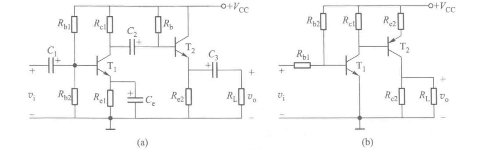
两级放大电路举例（教材图 2.1.22）：(a)
阻容耦合（第一级 CE，中间经电容
C 2 C_2
定义 9 ·
多级放大电路的耦合方式、级间负载效应与总性能指标
三种耦合方式对比 ：
阻容耦合 （如图
2.1.22(a)）：隔直电容 把相邻两级的静态工作点完全独立隔开 （可分别求
Q Q 交流指标 ），但无法放大 直流或极低频信号 ，且大容量电容 难以做进集成电路芯片 ；直接耦合 （如图
2.1.22(b)）：两级直流 相连，能放大 直流和任意慢变信号 、便于 集成，但前后级静态工作点 相互牵制 （求
Q Q 联立 ），且极易发生零点漂移 （由温度 引起的微弱直流 漂移会被后级逐级放大 ——正是为了抑制 零漂，后续模电章节 才会引入 长尾差分放大器 ！）变压器耦合 ：直流 隔离好、可实现阻抗变换 ，但体积 笨重、无法 集成。 多级总指标计算法则（核心：考虑级间负载效应） ： 设
n n R L R_L R i , k + 1 R_{i,k+1} R o , k R_{o,k}
总电压放大倍数 ：A ̇ v = A ̇ v 1 ⋅ A ̇ v 2 ⋯ A ̇ v n \dot A_v=\dot A_{v1}\cdot\dot A_{v2}\cdots\dot A_{vn} 绝对易错点 ：计算 第
k k 增益
A ̇ v k \dot A_{vk} k + 1 k+1 输入电阻
R i , k + 1 R_{i,k+1} 并联 当作第
k k 交流负载电阻 ！）总输入电阻 ：R i = R i 1 R_i=R_{i1} 交流接地 ，即等于第一级本身 ；若第一级为
CC，须注意它的输入电阻 与第二级输入电阻 有关！） 。总输出电阻 ：R o = R o n R_o=R_{on} 末级 为
CC 射极 跟随器，它的输出电阻 必须把倒数 第二级的输出电阻
R o , n − 1 R_{o,n-1} 信号源内阻
R s R_s
例 16 ·
两级阻容耦合放大电路的级间负载分析与缓冲隔离作用
针对图 2.1.22(a) 所示两级阻容耦合 放大电路 （第一级为带旁路电容
C e C_e 射极 跟随器，教材 例
2.1.5(a)），写出 完整的动态指标 表达式，并用典型 对比数值（教材习题
2.1.7：R s = 100 k Ω R_s=100\ \text{k}\Omega 内阻源 驱动
R L = 100 Ω R_L=100\ \Omega 负载 ）说明为何集成运算放大器 和分立系统 常采用“输入 缓冲＋高增益放大 ＋输出射极 跟随器（CC–CE–CC）”三明治级联 架构。
解。
（1）图 2.1.22(a) CE＋CC 两级通用公式推导 ： -
先从后向前算负载 折合：第二级 CC 面对 外部负载
R L R_L 发射极 负载为
R L 2 ′ = R e 2 ∥ R L R_{L2}'=R_{e2}\parallel R_L 共集 公式得第二级输入电阻 （即第一级的交流 负载）：
R i 2 = R b ∥ [ r b e 2 + ( 1 + β 2 ) ( R e 2 ∥ R L ) ] . R_{i2}=R_b\parallel\big[r_{be2}+(1+\beta_2)(R_{e2}\parallel R_L)\big]. 第一级 CE 电压增益 （把
R i 2 R_{i2} R c 1 R_{c1} 作为 第一级等效 负载
R L 1 ′ = R c 1 ∥ R i 2 R_{L1}'=R_{c1}\parallel R_{i2} A ̇ v 1 = − β 1 ( R c 1 ∥ R i 2 ) r b e 1 . \dot A_{v1}=-\frac{\beta_1(R_{c1}\parallel R_{i2})}{r_{be1}}. 第二级 CC 电压增益与总电压增益 ：
A ̇ v 2 = ( 1 + β 2 ) ( R e 2 ∥ R L ) r b e 2 + ( 1 + β 2 ) ( R e 2 ∥ R L ) ≈ 1 , A ̇ v = A ̇ v 1 ⋅ A ̇ v 2 . \dot A_{v2}=\frac{(1+\beta_2)(R_{e2}\parallel R_L)}{r_{be2}+(1+\beta_2)(R_{e2}\parallel R_L)}\approx1,\qquad \dot A_v=\dot A_{v1}\cdot\dot A_{v2}. 总输入电阻与总输出电阻 ：第一级
CE（发射极旁路 ）不受后级 负载影响，R i = R i 1 = R b 1 ∥ R b 2 ∥ r b e 1 R_i=R_{i1}=R_{b1}\parallel R_{b2}\parallel r_{be1} 第二级
CC 把第一级输出电阻
R o 1 = R c 1 R_{o1}=R_{c1} 信号源内阻 （注意第二级偏置电阻
R b R_b 基极 回路中）：
R o = R o 2 = R e 2 ∥ r b e 2 + R b ∥ R c 1 1 + β 2 . R_o=R_{o2}=R_{e2}\parallel\frac{r_{be2}+R_b\parallel R_{c1}}{1+\beta_2}. 电压 放得更大（A ̇ v 2 < 1 \dot A_{v2}<1 但它的高输入电阻
R i 2 R_{i2} 减轻 了对第一级
R c 1 R_{c1} 分流 ，同时把整机输出电阻 猛降几十倍，大幅增强 带低阻负载能力 ！
（2）CC–CE–CC 级联的压倒性优势（对照教材习题
2.1.7） ： 设某 CE 放大 级本身指标 为
A v o = − 100 , R i = 1 k Ω , R o = 10 k Ω A_{vo}=-100,R_i=1\ \text{k}\Omega,R_o=10\ \text{k}\Omega 指标 为
A v o = 1 , R i = 100 k Ω , R o = 100 Ω A_{vo}=1,R_i=100\ \text{k}\Omega,R_o=100\ \Omega R s = 100 k Ω R_s=100\ \text{k}\Omega 高内阻信号源 驱动
R L = 100 Ω R_L=100\ \Omega 低阻 负载： - 若直接单用 CE 级：输入 端分压
1 100 + 1 \dfrac{1}{100+1} 输出 端分压
100 10000 + 100 \dfrac{100}{10000+100} 源电压增益 仅
A ̇ v s , CE = 1 101 × ( − 100 ) × 100 10100 ≈ − 0.01 ( 非但没放大反而衰减百倍！ ) . \dot A_{vs,\text{CE}}=\frac{1}{101}\times(-100)\times\frac{100}{10100}\approx-0.01\ (\text{非但没放大反而衰减百倍！}). R i = 100 k Ω R_i=100\ \text{k}\Omega R o = 100 Ω R_o=100\ \Omega 增益 仅
1 1 增益 仅
A ̇ v s , CC = 0.5 × 1 × 0.5 = + 0.25 \dot A_{vs,\text{CC}}=0.5\times1\times0.5=+0.25 放大 能力。
- 若改用 CC–CE–CC 三级级联 ：前级 CC 实现 与
R s R_s 接近 匹配且看后级 为
1 k Ω 1\ \text{k}\Omega 后级
100 k Ω 100\ \text{k}\Omega 负载 获得几乎满额增益
− 100 × 100 110 -100\times\frac{100}{110} 100 Ω 100\ \Omega 负载 五五分压：
A ̇ v s = ( 100 200 × 1000 1000 + 100 ) × ( − 100 × 100 110 ) × ( 100 100 + 100 ) ≈ 0.455 × ( − 90.9 ) × 0.5 ≈ − 20.7 ( 约 − 21 ) ! \dot A_{vs}=\left(\frac{100}{200}\times\frac{1000}{1000+100}\right)\times\left(-100\times\frac{100}{110}\right)\times\left(\frac{100}{100+100}\right)\approx0.455\times(-90.9)\times0.5\approx-20.7\ (\text{约 }-21)! 2000 倍 ，直观 印证“前级缓冲 提
R i R_i 核心高增益 、末级 跟随降
R o R_o 系统架构设计 原则（这也正是第
1 单元 1.3 节“更多课本习题 ”题 2.3.5
中用电压跟随器 消除多路信号 负载串扰的思想 在三级架构 中的体现）。
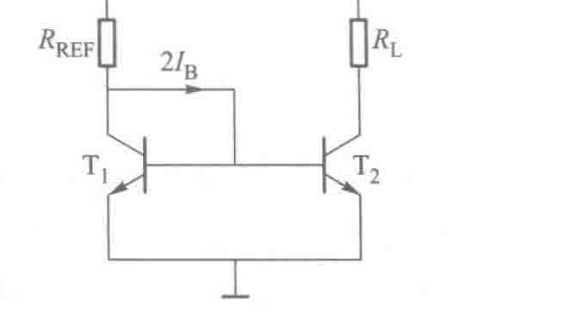
基本镜像电流源电路（教材图
1.3.41）：相同工艺的一对管
T 1 , T 2 \text{T}_1,\text{T}_2 I REF I_{\text{REF}} V B E V_{BE} T 2 \text{T}_2 I L I_L
例 17 ·
基本镜像电流源的电流复制、误差分析与有源负载高内阻
如图所示 基本镜像电流源（教材 §1.3.5 四、周金芳课件 1110 PPT
30），T 1 \text{T}_1 T 2 \text{T}_2 完全一致 （电流放大系数 均为
β \beta + V C C = 12 V +V_{CC}=12\ \text{V} V B E ≈ 0.7 V V_{BE}\approx0.7\ \text{V} R REF = 5.65 k Ω R_{\text{REF}}=5.65\ \text{k}\Omega I L I_L β \beta 表达式 ，当
β = 50 \beta=50 时误差 多大？简述为何模拟集成电路 常用电流源 取代大电阻
R c R_c
解。
参考电流与镜像复制 ：因为
T 1 \text{T}_1 集电极 与基极短接（处于
V C E 1 = V B E ≈ 0.7 V V_{CE1}=V_{BE}\approx0.7\ \text{V} 放大 边界，总能导通 ），参考电流 为
I REF = V C C − V B E R REF = 12 − 0.7 5.65 k Ω = 2.00 mA . I_{\text{REF}}=\frac{V_{CC}-V_{BE}}{R_{\text{REF}}}=\frac{12-0.7}{5.65\ \text{k}\Omega}=2.00\ \text{mA}. T 1 \text{T}_1 T 2 \text{T}_2 发射极 均并联在一起（V B E 1 = V B E 2 V_{BE1}=V_{BE2} 两只匹配 管的发射极与集电极电流 必然严格相等 ：I B 1 = I B 2 = I B I_{B1}=I_{B2}=I_B I C 1 = I C 2 = I L I_{C1}=I_{C2}=I_L 分支 公共节点 列
KCL：
I REF = I C 1 + 2 I B = I L + 2 β I L = ( 1 + 2 β ) I L ⟹ I L = 1 1 + 2 / β I REF . I_{\text{REF}}=I_{C1}+2I_B=I_L+\frac{2}{\beta}I_L=\left(1+\frac{2}{\beta}\right)I_L \implies I_L=\frac{1}{1+2/\beta}I_{\text{REF}}. β = 50 \beta=50 I L = 2.00 1 + 2 / 50 ≈ 1.923 mA I_L=\dfrac{2.00}{1+2/50}\approx1.923\ \text{mA} 理想 复制电流 偏小约
3.8 % 3.8\% 教材图
1.3.42 在基极 驱动再插一只射极 跟随管
T 3 \text{T}_3 分流误差 可压低至约
2 / β 2 < 0.08 % 2/\beta^2<0.08\% 有源负载高内阻（结合教材例
1.3.7） ：对于固定电压偏置 的单管恒流源（在射极 加电阻
R e R_e 输出 等效内阻 受射极负反馈 猛增至
R o ≈ ( 1 + β R e r b e + R e ) r c e ≈ β r c e R_o\approx\left(1+\frac{\beta R_e}{r_{be}+R_e}\right)r_{ce}\approx\beta r_{ce} 兆欧量级 ！）。在集成芯片 内部制造 几十千欧 到兆欧的大电阻 会占用巨大晶圆面积 且造成严重直流 压降使管子饱和 ；用镜像电流源作有源负载 代替
R c R_c 只耗 微小芯片面积 与极小直流 压降，又能向放大 级提供高达
r c e r_{ce} 交流等效负载 ，从而让单级获得 极高电压增益 （如教材习题
1.3.19—1.3.20 所示，单级
A v A_v 跃升 到数百倍）。
习题 24 · 阻容耦合 CE＋CC
两级放大电路的完整指标计算
练习 · 先独立作答
对图 2.1.22(a)
的两级阻容耦合 电路（第一级为分压偏置 共射放大器 、R e 1 R_{e1} C e C_e 旁路 ，第二级为固定偏置 共集射极跟随 器）代入具体元件参数 ：两管均 为硅管，β 1 = β 2 = 50 , r b b ′ = 200 Ω , V B E Q = 0.7 V , V T = 26 mV \beta_1=\beta_2=50,r_{bb'}=200\ \Omega,V_{BEQ}=0.7\ \text{V},V_T=26\ \text{mV} + V C C = + 12 V +V_{CC}=+12\ \text{V} 第一级取例
1.3.5 参数
R b 1 = 40 k Ω , R b 2 = 20 k Ω , R c 1 = 3 k Ω , R e 1 = 2 k Ω R_{b1}=40\ \text{k}\Omega,R_{b2}=20\ \text{k}\Omega,R_{c1}=3\ \text{k}\Omega,R_{e1}=2\ \text{k}\Omega R b = 200 k Ω , R e 2 = 3 k Ω , R L = 3 k Ω R_b=200\ \text{k}\Omega,R_{e2}=3\ \text{k}\Omega,R_L=3\ \text{k}\Omega R s = 0 R_s=0 r c e r_{ce} 静态工作点 ；（2）各级电压增益
A ̇ v 1 \dot A_{v1} A ̇ v 2 \dot A_{v2} 电压增益
A ̇ v \dot A_v 输入电阻
R i R_i 输出电阻
R o R_o 教材 例
2.1.5(a) 与习题 2.1.8 结构定值 练习）
解析
因电容
C 2 C_2 直流 ，两级静态 各自独立 算出：第一级同前例 1.3.5 得
I E Q 1 ≈ 1.46 mA I_{EQ1}\approx1.46\ \text{mA} r b e 1 ≈ 1.11 k Ω r_{be1}\approx1.11\ \text{k}\Omega R b R_b 偏置 共集，算得
I B Q 2 = ( 12 − 0.7 ) / ( 200 + 51 × 3 ) ≈ 32.0 μ A I_{BQ2}=(12-0.7)/(200+51\times3)\approx32.0\ \mu\text{A} I E Q 2 ≈ 1.63 mA I_{EQ2}\approx1.63\ \text{mA} r b e 2 ≈ 1.01 k Ω r_{be2}\approx1.01\ \text{k}\Omega 第二级输入电阻
R i 2 = 200 ∥ ( 1.01 + 51 × 1.5 ) ≈ 55.9 k Ω R_{i2}=200\parallel(1.01+51\times1.5)\approx55.9\ \text{k}\Omega 作为 第一级负载，得
R L 1 ′ = 3 ∥ 55.9 ≈ 2.85 k Ω R_{L1}'=3\parallel55.9\approx2.85\ \text{k}\Omega A ̇ v 1 ≈ − 128.4 \dot A_{v1}\approx-128.4 A ̇ v 2 ≈ 0.987 \dot A_{v2}\approx0.987 增益
A ̇ v ≈ − 126.7 \dot A_v\approx-126.7 R i = 13.33 ∥ 1.109 ≈ 1.02 k Ω R_i=13.33\parallel1.109\approx1.02\ \text{k}\Omega R o = 3 k Ω ∥ 1.012 + 200 ∥ 3 51 ≈ 75.8 Ω R_o=3\ \text{k}\Omega\parallel\dfrac{1.012+200\parallel3}{51}\approx75.8\ \Omega
解答
两级独立的直流工作点 （C 1 , C 2 , C 3 , C e C_1,C_2,C_3,C_e
均开路）：
第一级（CE） ：与例 15(1) 参数相同 ：
V B = 4 V , R B = 13.33 k Ω , I B Q 1 = 28.6 μ A , I E Q 1 = 1.46 mA , V C E Q 1 ≈ 4.79 V , V_B=4\ \text{V},\quad R_B=13.33\ \text{k}\Omega,\quad I_{BQ1}=28.6\ \mu\text{A},\quad I_{EQ1}=1.46\ \text{mA},\quad V_{CEQ1}\approx4.79\ \text{V}, r b e 1 = 200 + 51 × 26 1.46 ≈ 1.11 k Ω ( 若按 1.43 mA 整得 1.13 k Ω ) . r_{be1}=200+51\times\frac{26}{1.46}\approx1.11\ \text{k}\Omega\ (\text{若按 }1.43\ \text{mA}\text{ 整得 }1.13\ \text{k}\Omega). 第二级（CC） ：V C C = I B Q 2 R b + V B E Q + ( 1 + β 2 ) I B Q 2 R e 2 V_{CC}=I_{BQ2}R_b+V_{BEQ}+(1+\beta_2)I_{BQ2}R_{e2} I B Q 2 = 12 − 0.7 200 + 51 × 3 = 11.3 353 ≈ 32.01 μ A , I E Q 2 = 51 × 32.01 μ A ≈ 1.633 mA , I_{BQ2}=\frac{12-0.7}{200+51\times3}=\frac{11.3}{353}\approx32.01\ \mu\text{A},\quad I_{EQ2}=51\times32.01\ \mu\text{A}\approx1.633\ \text{mA}, V C E Q 2 = 12 − 1.633 × 3 ≈ 7.10 V ( > 0.7 V , 均在放大区 ) , V_{CEQ2}=12-1.633\times3\approx7.10\ \text{V}\ (>0.7\ \text{V},\ \text{均在放大区}), r b e 2 = 200 + 51 × 26 1.633 ≈ 1012 Ω ( 约 1.01 k Ω ) . r_{be2}=200+51\times\frac{26}{1.633}\approx1012\ \Omega\ (\text{约 }1.01\ \text{k}\Omega). 动态增益（按级间负载从后向前算） ：
第二级等效 负载
R L 2 ′ = R e 2 ∥ R L = 3 ∥ 3 = 1.5 k Ω R_{L2}'=R_{e2}\parallel R_L=3\parallel3=1.5\ \text{k}\Omega 第二级输入电阻 （考虑偏置
R b R_b R i 2 = R b ∥ [ r b e 2 + ( 1 + β 2 ) R L 2 ′ ] = 200 ∥ ( 1.012 + 51 × 1.5 ) = 200 ∥ 77.51 ≈ 55.86 k Ω . R_{i2}=R_b\parallel\big[r_{be2}+(1+\beta_2)R_{L2}'\big]=200\parallel(1.012+51\times1.5)=200\parallel77.51\approx55.86\ \text{k}\Omega.
第二级电压增益 ：
A ̇ v 2 = 51 × 1.5 1.012 + 51 × 1.5 = 76.5 77.51 ≈ 0.987 . \dot A_{v2}=\frac{51\times1.5}{1.012+51\times1.5}=\frac{76.5}{77.51}\approx0.987.
第一级面对的交流等效负载
R L 1 ′ = R c 1 ∥ R i 2 = 3 ∥ 55.86 ≈ 2.847 k Ω R_{L1}'=R_{c1}\parallel R_{i2}=3\parallel55.86\approx2.847\ \text{k}\Omega 后级 是
CC，极轻微地分流 了第一级，远好于把
R L = 3 k Ω R_L=3\ \text{k}\Omega 1.5 k Ω 1.5\ \text{k}\Omega A ̇ v 1 = − β 1 R L 1 ′ r b e 1 = − 50 × 2.847 1.109 ≈ − 128.4 . \dot A_{v1}=-\frac{\beta_1 R_{L1}'}{r_{be1}}=-\frac{50\times2.847}{1.109}\approx-128.4. 总电压增益 ：
A ̇ v = A ̇ v 1 ⋅ A ̇ v 2 ≈ − 128.4 × 0.987 ≈ − 126.7 . \dot A_v=\dot A_{v1}\cdot\dot A_{v2}\approx-128.4\times0.987\approx-126.7.
总输入电阻与总输出电阻 ：
R i = R i 1 = R b 1 ∥ R b 2 ∥ r b e 1 = 13.33 ∥ 1.109 ≈ 1.02 k Ω , R_i=R_{i1}=R_{b1}\parallel R_{b2}\parallel r_{be1}=13.33\parallel1.109\approx1.02\ \text{k}\Omega, R o = R o 2 = R e 2 ∥ r b e 2 + R b ∥ R c 1 1 + β 2 = 3 k Ω ∥ 1.012 + 200 ∥ 3 51 k Ω = 3 k Ω ∥ 0.0778 k Ω ≈ 75.8 Ω . R_o=R_{o2}=R_{e2}\parallel\frac{r_{be2}+R_b\parallel R_{c1}}{1+\beta_2}=3\ \text{k}\Omega\parallel\frac{1.012+200\parallel3}{51}\ \text{k}\Omega=3\ \text{k}\Omega\parallel0.0778\ \text{k}\Omega\approx75.8\ \Omega.
更多课本习题 · BJT 与放大电路（§1.2.3、§1.3.1—1.3.5、§2.1.4，截至 1112
进度）
本折叠 栏补齐截至 11 月 12
日进度范围 内的其余《集成电子技术 基础教程》BJT
课本习题要点 与参考答案（同一教材中 FET 场效应管题
1.2.16—1.2.20、1.3.5—1.3.7、1.3.8—1.3.9 中含 FET
小图、1.3.15—1.3.16、1.3.18 ，第 4 章频率响应题
1.4.1—1.4.10 ，以及 第 2.1 章差分放大题
2.1.1—2.1.6、2.1.11—2.1.17 将在后续新课讲义 中展开）：
§1.2.3 晶体管工作状态与偏置（题 1.2.11—1.2.15）
习题 1.2.11 （8 只 BJT 引脚电位 判读）：正文 3.1
节习题 17 已选讲代表性 四问 (a)—(d)；其余 (e)
3AK20（V E B = 0 V V_{EB}=0\ \text{V} PNP
锗开关 管）为截止 ；(f) 3AD6A（PNP
锗大功率 管，V E B = 0.3 V , V E C = 5.7 V V_{EB}=0.3\ \text{V},V_{EC}=5.7\ \text{V} 放大 ；(g)
3DG6B（NPN
硅管，V B E = 0.74 V , V C E = 4.26 V V_{BE}=0.74\ \text{V},V_{CE}=4.26\ \text{V} 放大 ；(h)
3CK2B（PNP
硅管，V E B = 0.7 V , V E C = 0.7 V V_{EB}=0.7\ \text{V},V_{EC}=0.7\ \text{V} 临界饱和 。习题 1.2.12 （六种偏置 求
Q Q 在上文 3.2 节习题 19 作完整解答（纠出 (f) 书答
1.33 mA 1.33\ \text{mA} 1.43 mA 1.43\ \text{mA} 习题
1.2.13 （固定偏置 共射四组参数判区 ，V C E S = 0.7 V V_{CES}=0.7\ \text{V} I B = ( V C C − 0.7 ) / R b I_B=(V_{CC}-0.7)/R_b V C E = V C C − β I B R c V_{CE}=V_{CC}-\beta I_BR_c V C E = 3.63 V ⟹ V_{CE}=3.63\ \text{V}\implies 放大 ；(2)
V C E = − 8.23 V < 0 ⟹ V_{CE}=-8.23\ \text{V}<0\implies 饱和 ；(3)
V C E = 2.47 V ⟹ V_{CE}=2.47\ \text{V}\implies 放大 ；(4)
V C E = 2.21 V ⟹ V_{CE}=2.21\ \text{V}\implies 放大 。习题
1.2.14 （三档开关 切换＋万用表内阻 影响）：β = 50 , V B E = 0.7 V , V C C = + 15 V , R c = 5 k Ω \beta=50,V_{BE}=0.7\ \text{V},V_{CC}=+15\ \text{V},R_c=5\ \text{k}\Omega 开关 接
A（100 k Ω 100\ \text{k}\Omega
接
+ 15 V +15\ \text{V} I B = 143 μ A I_B=143\ \mu\text{A} 饱和 （见例 12(2)）；接
B（500 k Ω 500\ \text{k}\Omega
接
+ 15 V +15\ \text{V} I B = 28.6 μ A I_B=28.6\ \mu\text{A} 放大 ；接
C（+ 0.5 V +0.5\ \text{V} 得截止 ；(2)
接 B 时若用仅
10 k Ω 10\ \text{k}\Omega 电压表 直接测
V B E V_{BE} 万用表 分压使
V B B ≈ 15 × 10 510 = 0.29 V < 0.5 V V_{BB}\approx15\times\dfrac{10}{510}=0.29\ \text{V}<0.5\ \text{V} 截止状态 ，根本测不准 ！（测
V C E V_{CE} 10 k Ω 10\ \text{k}\Omega 流过 小部分电流 也使测值偏小）；(3) 接 A 时欲 保证临界饱和
V C E = 0.7 V V_{CE}=0.7\ \text{V} R c R_c 满足
I C S = 15 − 0.7 R c ≤ β I B = 7.15 mA ⟹ R c ≥ 2 k Ω I_{CS}=\dfrac{15-0.7}{R_c}\le\beta I_B=7.15\ \text{mA}\implies R_c\ge2\ \text{k}\Omega 习题
1.2.15 （四个稳压 /PNP/互补复合管偏置 电路，V C E S = 0.3 V , β = 50 V_{CES}=0.3\ \text{V},\beta=50 戴维宁等效
V B = 20 × 5 + 10 × ( − 5 ) 30 = + 1.67 V , R B = 6.67 k Ω ⟹ I B = 0.145 mA V_B=\dfrac{20\times5+10\times(-5)}{30}=+1.67\ \text{V},R_B=6.67\ \text{k}\Omega\implies I_B=0.145\ \text{mA} 集电极 试图下拉使二极管反偏截止 、管子进入饱和 ，V C E = 0.3 V V_{CE}=0.3\ \text{V} 基极 由
6.7 V 6.7\ \text{V} 稳压管钳位 在
15 − 6.7 = 8.3 V 15-6.7=8.3\ \text{V} V E = 9.0 V V_E=9.0\ \text{V} I C ≈ I E = 15 − 9.0 1 k Ω = 6 mA I_C\approx I_E=\dfrac{15-9.0}{1\ \text{k}\Omega}=6\ \text{mA} 电源 分压偏置（− 12 V -12\ \text{V} 下偏
20 k Ω 20\ \text{k}\Omega 50 k Ω 50\ \text{k}\Omega − 12 V -12\ \text{V} 开路电压
− 3.43 V -3.43\ \text{V} 14.3 k Ω 14.3\ \text{k}\Omega I B ≈ 23.5 μ A , I C ≈ 1.17 mA , V C E ≈ − 4.9 V I_B\approx23.5\ \mu\text{A},I_C\approx1.17\ \text{mA},V_{CE}\approx-4.9\ \text{V} 答约
− 5.1 V -5.1\ \text{V} 互补复合管（Sziklai
对管） ：T 1 \text{T}_1 发射极 与
T 2 \text{T}_2 集电极 共接于
R c 2 = 2 k Ω R_{c2}=2\ \text{k}\Omega 接地 端，T 1 \text{T}_1 集电极 直推
T 2 \text{T}_2 增益
β eq ≈ β 1 β 2 + β 1 = 2550 \beta_{\text{eq}}\approx\beta_1\beta_2+\beta_1=2550 0 V → R c 2 E 1 → 0.7 V B 1 → 1.5 M Ω − 15 V 0\ \text{V}\xrightarrow{R_{c2}}E_1\xrightarrow{0.7\ \text{V}}B_1\xrightarrow{1.5\ \text{M}\Omega}-15\ \text{V} I B 1 = 15 − 0.7 1500 + 2550 × 2 ≈ 2.17 μ A I_{B1}=\dfrac{15-0.7}{1500+2550\times2}\approx2.17\ \mu\text{A} R c 2 R_{c2} 压降
V C = 2550 I B 1 R c 2 ≈ 11.07 V V_C=2550I_{B1}R_{c2}\approx11.07\ \text{V} 书后答案 一致）。
§1.3.1—1.3.5 基本放大电路、图解法与恒流源（题
1.3.1—1.3.4、1.3.8—1.3.14、1.3.17、1.3.19—1.3.20）
习题 1.3.1 & 1.3.2 （图解法 求共射
Q Q 直流 负载线
i B = ( V B B − v B E ) / R b i_B=(V_{BB}-v_{BE})/R_b 曲线 定
( V B E Q , I B Q ) (V_{BEQ},I_{BQ}) 曲线 查
i B = I B Q i_B=I_{BQ} 负载 线
v C E = V C C − i C R c v_{CE}=V_{CC}-i_CR_c 交点 。1.3.1：V B E Q ≈ 0.7 V , I B Q ≈ 30 μ A , V C E Q ≈ 5.7 V , I C Q ≈ 2.1 mA V_{BEQ}\approx0.7\ \text{V},I_{BQ}\approx30\ \mu\text{A},V_{CEQ}\approx5.7\ \text{V},I_{CQ}\approx2.1\ \text{mA} V B E Q ≈ 0.65 V , I B Q ≈ 13 μ A , V C E Q ≈ 8.1 V , I C Q ≈ 0.65 mA V_{BEQ}\approx0.65\ \text{V},I_{BQ}\approx13\ \mu\text{A},V_{CEQ}\approx8.1\ \text{V},I_{CQ}\approx0.65\ \text{mA} 习题 1.3.3 & 1.3.4 （图解法 调
Q Q 最大 不失真摆幅 ）：1.3.3 原点
I B Q ≈ 9.3 / 510 ≈ 18 μ A ⟹ I C Q ≈ 0.9 mA , V C E Q ≈ 1 V I_{BQ}\approx9.3/510\approx18\ \mu\text{A}\implies I_{CQ}\approx0.9\ \text{mA},V_{CEQ}\approx1\ \text{V} 饱和 ），应减小
R b R_b R c R_c R b = 230 k Ω , R c = 4 k Ω ⟹ I C Q ≈ 2 mA , V C E Q ≈ 2 V R_b=230\ \text{k}\Omega,R_c=4\ \text{k}\Omega\implies I_{CQ}\approx2\ \text{mA},V_{CEQ}\approx2\ \text{V} I B Q ≈ 13.8 μ A , I C Q ≈ 0.69 mA , V C E Q ≈ 7.9 V I_{BQ}\approx13.8\ \mu\text{A},I_{CQ}\approx0.69\ \text{mA},V_{CEQ}\approx7.9\ \text{V} 习题 1.3.8 &
1.3.9 （组态 判错与画直/交流通路 ）：1.3.8 图 (a)
基极 缺下偏或偏置 阻断（实为 NPN
无合适直流通路 ，无法正常静态偏置 ）无输出 ；(b)
输出耦合 电容直接跨到交流 地，使输出短路 ；(c)(d)
同理 分别存在“发射结无直流偏置 回路（或电容 隔断直流偏置 ）”与“输出 端被直连到电源 /地导致交流短路 ”。1.3.9
逐图去掉 电容画直流通路 、短路电容 与直流电源接地画交流通路 。习题 1.3.10 （黑盒 测
A v , R i , R o A_v,R_i,R_o 注意事项 ）：(1) 级联 总增益
dB \text{dB} 相加 ：40 + 20 = 60 dB 40+20=60\ \text{dB} 端串 已知电阻
R = 1 k Ω R=1\ \text{k}\Omega 有效值
V 1 , V 2 V_1,V_2 R i = V 2 V 1 − V 2 ⋅ 1 k Ω R_i=\dfrac{V_2}{V_1-V_2}\cdot1\ \text{k}\Omega 需加 中频正弦 小信号保证不失真，电压表内阻 须远大于待测节点 阻抗如
> 1 M Ω >1\ \text{M}\Omega 4 V 4\ \text{V} R L = 3 k Ω R_L=3\ \text{k}\Omega 3 V ⟹ R o = 4 − 3 3 × 3 k Ω = 1 k Ω 3\ \text{V}\implies R_o=\frac{4-3}{3}\times3\ \text{k}\Omega=1\ \text{k}\Omega 扫频 测
− 3 dB -3\ \text{dB} 频率 （0.707 V o m 0.707\,V_{om} 时需时刻 用示波器监视 不失真、保持
V i V_i 幅度恒定 并用高频特性 良好的毫伏表。习题 1.3.11 （集电极 反馈偏置受
β \beta 60 ∘ C 60\,^\circ\text{C} 温度 影响）：已在上文 3.2 节习题 20 作完整解答。习题 1.3.12 (a)(b)(c) （三种组态 综合计算，题图
1.3.12）：(c) 共集 已在上文 3.3 节习题 22 作完整解答；(a) PNP 双电源
CE（I B Q ≈ 75 μ A , I C Q ≈ 3.75 mA , V E C Q ≈ 5.25 V , r b e ≈ 550 Ω , A ̇ v = − 182 , R i ≈ 0.55 k Ω , R o = 2 k Ω I_{BQ}\approx75\ \mu\text{A},I_{CQ}\approx3.75\ \text{mA},V_{ECQ}\approx5.25\ \text{V},r_{be}\approx550\ \Omega,\dot A_v=-182,R_i\approx0.55\ \text{k}\Omega,R_o=2\ \text{k}\Omega 先出现饱和失真 ，V o m = 4.57 V V_{om}=4.57\ \text{V} 勘误注记 ：题图 1.3.12(b) 印刷 将下偏电阻 印成
51 k Ω 51\ \text{k}\Omega 饱和 ；参照书后答案 反推原题 设计值实为
R b 1 = 5.1 k Ω R_{b1}=5.1\ \text{k}\Omega I B Q ≈ 18 μ A , I C Q ≈ 0.9 mA , V C E Q ≈ 9.51 V , A ̇ v ≈ 76 , R i ≈ 32 Ω , R o = 5.1 k Ω I_{BQ}\approx18\ \mu\text{A},I_{CQ}\approx0.9\ \text{mA},V_{CEQ}\approx9.51\ \text{V},\dot A_v\approx76,R_i\approx32\ \Omega,R_o=5.1\ \text{k}\Omega 截止失真
V o m ≈ 2.3 V V_{om}\approx2.3\ \text{V} 习题 1.3.13 （部分旁路 电阻＋基极 去耦电容
C d C_d 在上文
3.3 节习题 21 作完整解答。习题 1.3.14 （稳压管 固定射极电位
V Z = 6 V V_Z=6\ \text{V} 限流电阻
R R 旁路电容 ）：V B = 10 V , R B = 12 k Ω V_B=10\ \text{V},R_B=12\ \text{k}\Omega I B Q = ( 10 − 6.7 ) / 12 = 275 μ A , I C Q = 5.5 mA , V C E Q = 8.5 V I_{BQ}=(10-6.7)/12=275\ \mu\text{A},I_{CQ}=5.5\ \text{mA},V_{CEQ}=8.5\ \text{V} r b e = 300 + 21 × 26 / 5.775 ≈ 395 Ω r_{be}=300+21\times26/5.775\approx395\ \Omega 理想稳压管 以极小动态电阻
r z ≈ 0 r_z\approx0 交流接地 ，A ̇ v ≈ − 50 \dot A_v\approx-50 r b e ≈ 400 Ω r_{be}\approx400\ \Omega R i = 12 ∥ 0.395 ≈ 382 Ω R_i=12\parallel0.395\approx382\ \Omega R o = 1 k Ω R_o=1\ \text{k}\Omega R R 作用 是给
D Z \text{D}_Z 提供 稳定击穿电流 使之进入陡峭稳压区 、降小
r z r_z D Z \text{D}_Z 反接 则变为普通正向导通 二极管（压降
0.7 V 0.7\ \text{V} 放大 ，且射极电位 降低使
I C I_C | A ̇ v | |\dot A_v| 增大 而
R i R_i 习题 1.3.17 （分压偏置 BJT 恒流源输出电阻 ）：与例
1.3.7 结构相同 ，仅稳压管换为电阻分压 （交流地间基极 等效电阻
R B = R 1 ∥ R 2 = 24 ∥ 0.75 ≈ 727 Ω R_B=R_1\parallel R_2=24\parallel0.75\approx727\ \Omega R B ′ = r b e + R B R_B'=r_{be}+R_B 原题 仅给出
R 1 = 24 k Ω , R 2 = 750 Ω , R 3 = 51 Ω R_1=24\ \text{k}\Omega,R_2=750\ \Omega,R_3=51\ \Omega 标定
V C C , β , r c e V_{CC},\beta,r_{ce} 答题 先写全符号表达式
R o = r c e ( 1 + β R 3 R B ′ + R 3 ) + ( R 3 ∥ R B ′ ) R_o=r_{ce}\!\left(1+\dfrac{\beta R_3}{R_B'+R_3}\right)+(R_3\parallel R_B') 教材书后答案 另给出估算 值
R o ≈ 1.1 M Ω R_o\approx1.1\ \text{M}\Omega 习题 1.3.19 & 1.3.20 （以 PNP 电流源
T 2 \text{T}_2 共射级
T 1 \text{T}_1 有源负载 ）：(1)
T 1 \text{T}_1 放大 ，T 2 \text{T}_2 构成 恒流源有源负载 ；(2)
T 2 \text{T}_2 V Z = 3.7 V V_Z=3.7\ \text{V} R e 2 = 1 k Ω R_{e2}=1\ \text{k}\Omega 电流
I C 2 ≈ I E 2 = 3.7 − 0.7 1 k Ω = 3 mA I_{C2}\approx I_{E2}=\dfrac{3.7-0.7}{1\ \text{k}\Omega}=3\ \text{mA} 串联 约束使
I C 1 = I C 2 = 3 mA I_{C1}=I_{C2}=3\ \text{mA} r b b ′ r_{bb'} r b e 2 ≈ 51 × 26 / 3 ≈ 442 Ω r_{be2}\approx51\times26/3\approx442\ \Omega 体电阻 合约
540 Ω 540\ \Omega T 2 \text{T}_2 恒流源内阻
R o 2 ≈ 3.35 M Ω R_{o2}\approx3.35\ \text{M}\Omega 带载
R L = 3 k Ω R_L=3\ \text{k}\Omega 总增益 高达
A ̇ v ≈ − β ( r c e 1 ∥ R o 2 ∥ R L ) r b e 1 ≈ − 278 \dot A_v\approx-\dfrac{\beta(r_{ce1}\parallel R_{o2}\parallel R_L)}{r_{be1}}\approx-278 R o = r c e 1 ∥ R o 2 ≈ 100 k Ω R_o=r_{ce1}\parallel R_{o2}\approx100\ \text{k}\Omega 普通 几千欧集电极电阻 ，远小于有源负载 能实现的最大不失真 摆幅与开环增益 ）。
§2.1.4 多级放大电路的耦合与性能指标（题
2.1.7—2.1.10，多级部分）
习题 2.1.7 （单级 CE vs 单级 CC vs CC–CE–CC
级联 对比）：已在上文 3.4 节例 16
作完整数值 对比（− 0.01 -0.01
vs
+ 0.25 +0.25 − 20.7 -20.7 习题 2.1.8 （CE＋CC 两级符号 推导）：已在上文 3.4
节例题 与习题 24 完整推导与定值 计算（书答一致）。习题 2.1.10 （第一级 CC 射极 输出经
C 2 = 10 μ F C_2=10\ \mu\text{F} 共基 的两级阻容耦合 放大器）：C 2 C_2 隔离 使两级直流工作点 独立，I C Q 1 ≈ 0.26 mA I_{CQ1}\approx0.26\ \text{mA} I C Q 2 ≈ 0.81 mA I_{CQ2}\approx0.81\ \text{mA} C 1 C_1 T 1 \text{T}_1 R b = 100 k Ω R_b=100\ \text{k}\Omega R 1 ∥ R 2 R_1\parallel R_2 故交流基极 并联偏置电阻为
R b + ( R 1 ∥ R 2 ) ≈ 106.5 k Ω R_b+(R_1\parallel R_2)\approx106.5\ \text{k}\Omega R i ≈ 6.83 k Ω R_i\approx6.83\ \text{k}\Omega 发射极 输出为
CC ，负载
R e 1 ∥ R e 2 R_{e1}\parallel R_{e2} CB 极低输入电阻
r b e 2 / ( 1 + β 2 ) r_{be2}/(1+\beta_2) A ̇ v 1 ≈ 0.265 \dot A_{v1}\approx0.265 A ̇ v 2 ≈ 8.5 \dot A_{v2}\approx8.5 A ̇ v ≈ 2.25 \dot A_v\approx2.25 R o = R 4 = 330 Ω R_o=R_4=330\ \Omega